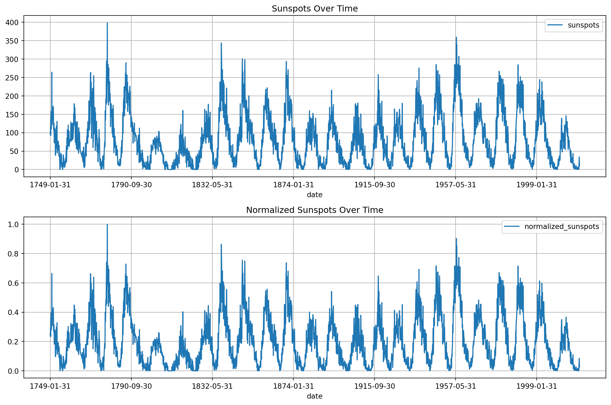
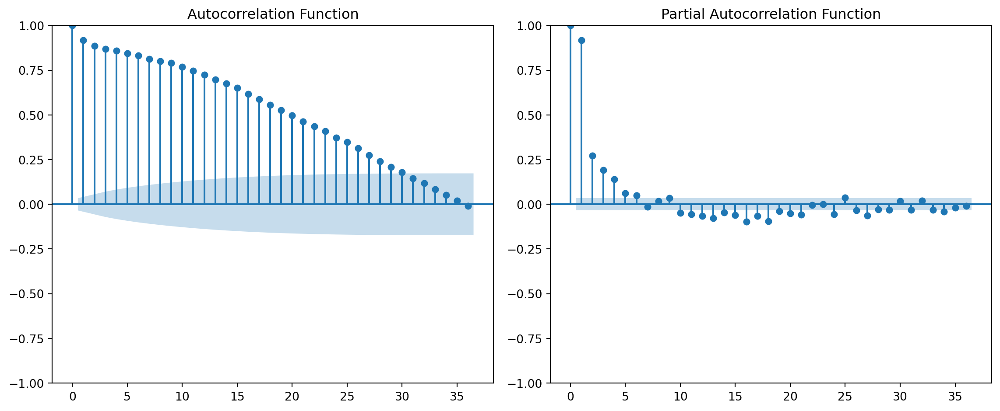
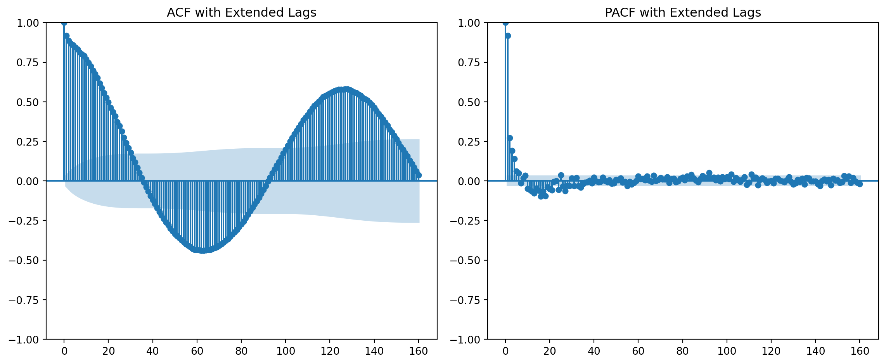
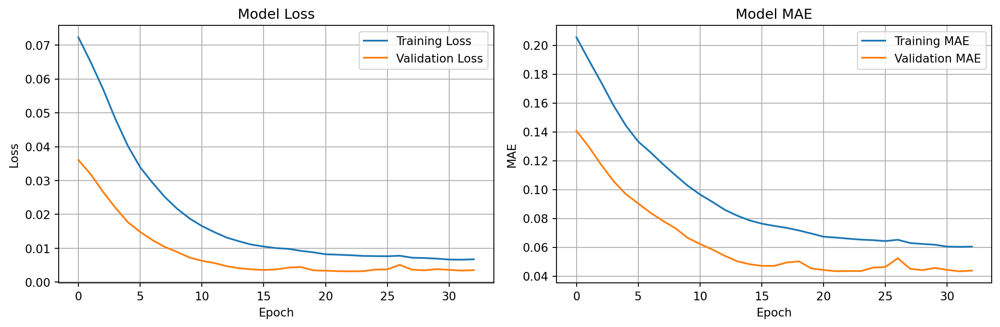
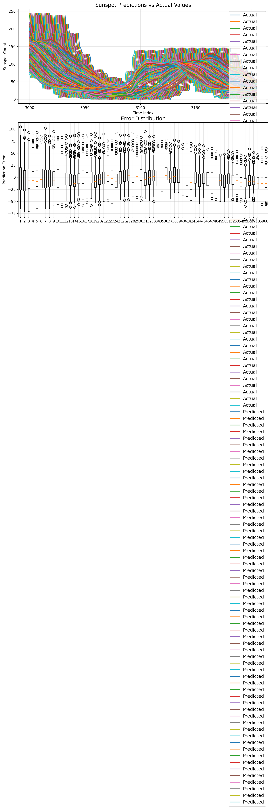
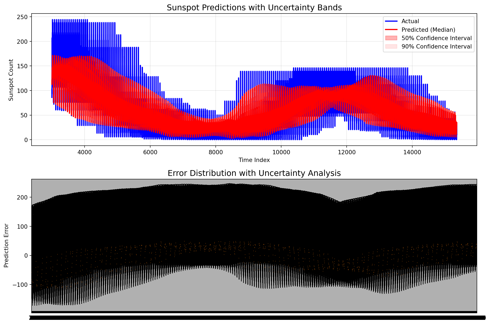

<!DOCTYPE html>
<html xmlns="http://www.w3.org/1999/xhtml" lang="en" xml:lang="en"><head>

<meta charset="utf-8">
<meta name="generator" content="quarto-1.8.23">

<meta name="viewport" content="width=device-width, initial-scale=1.0, user-scalable=yes">

<meta name="author" content="Miguel Alexander Chitiva Diaz">
<meta name="dcterms.date" content="2021-06-19">

<title>Multivariate Regression – The Overfitting Club</title>
<style>
code{white-space: pre-wrap;}
span.smallcaps{font-variant: small-caps;}
div.columns{display: flex; gap: min(4vw, 1.5em);}
div.column{flex: auto; overflow-x: auto;}
div.hanging-indent{margin-left: 1.5em; text-indent: -1.5em;}
ul.task-list{list-style: none;}
ul.task-list li input[type="checkbox"] {
  width: 0.8em;
  margin: 0 0.8em 0.2em -1em; /* quarto-specific, see https://github.com/quarto-dev/quarto-cli/issues/4556 */ 
  vertical-align: middle;
}
/* CSS for syntax highlighting */
html { -webkit-text-size-adjust: 100%; }
pre > code.sourceCode { white-space: pre; position: relative; }
pre > code.sourceCode > span { display: inline-block; line-height: 1.25; }
pre > code.sourceCode > span:empty { height: 1.2em; }
.sourceCode { overflow: visible; }
code.sourceCode > span { color: inherit; text-decoration: inherit; }
div.sourceCode { margin: 1em 0; }
pre.sourceCode { margin: 0; }
@media screen {
div.sourceCode { overflow: auto; }
}
@media print {
pre > code.sourceCode { white-space: pre-wrap; }
pre > code.sourceCode > span { text-indent: -5em; padding-left: 5em; }
}
pre.numberSource code
  { counter-reset: source-line 0; }
pre.numberSource code > span
  { position: relative; left: -4em; counter-increment: source-line; }
pre.numberSource code > span > a:first-child::before
  { content: counter(source-line);
    position: relative; left: -1em; text-align: right; vertical-align: baseline;
    border: none; display: inline-block;
    -webkit-touch-callout: none; -webkit-user-select: none;
    -khtml-user-select: none; -moz-user-select: none;
    -ms-user-select: none; user-select: none;
    padding: 0 4px; width: 4em;
  }
pre.numberSource { margin-left: 3em;  padding-left: 4px; }
div.sourceCode
  {   }
@media screen {
pre > code.sourceCode > span > a:first-child::before { text-decoration: underline; }
}
</style>


<script src="https://cdn.jsdelivr.net/npm/jquery@3.5.1/dist/jquery.min.js" integrity="sha384-ZvpUoO/+PpLXR1lu4jmpXWu80pZlYUAfxl5NsBMWOEPSjUn/6Z/hRTt8+pR6L4N2" crossorigin="anonymous"></script><script src="../../../../site_libs/quarto-nav/quarto-nav.js"></script>
<script src="../../../../site_libs/quarto-nav/headroom.min.js"></script>
<script src="../../../../site_libs/clipboard/clipboard.min.js"></script>
<script src="../../../../site_libs/quarto-search/autocomplete.umd.js"></script>
<script src="../../../../site_libs/quarto-search/fuse.min.js"></script>
<script src="../../../../site_libs/quarto-search/quarto-search.js"></script>
<meta name="quarto:offset" content="../../../../">
<link href="../../../../assets/favicon.png" rel="icon" type="image/png">
<script src="../../../../site_libs/quarto-html/quarto.js" type="module"></script>
<script src="../../../../site_libs/quarto-html/tabsets/tabsets.js" type="module"></script>
<script src="../../../../site_libs/quarto-html/axe/axe-check.js" type="module"></script>
<script src="../../../../site_libs/quarto-html/popper.min.js"></script>
<script src="../../../../site_libs/quarto-html/tippy.umd.min.js"></script>
<script src="../../../../site_libs/quarto-html/anchor.min.js"></script>
<link href="../../../../site_libs/quarto-html/tippy.css" rel="stylesheet">
<link href="../../../../site_libs/quarto-html/quarto-syntax-highlighting-dark-6f6599830d51be977da3b6af758f8eff.css" rel="stylesheet" id="quarto-text-highlighting-styles">
<script src="../../../../site_libs/bootstrap/bootstrap.min.js"></script>
<link href="../../../../site_libs/bootstrap/bootstrap-icons.css" rel="stylesheet">
<link href="../../../../site_libs/bootstrap/bootstrap-2ec1ecde4794cf0ca2676fdbadd3167b.min.css" rel="stylesheet" append-hash="true" id="quarto-bootstrap" data-mode="dark">
<script id="quarto-search-options" type="application/json">{
  "location": "navbar",
  "copy-button": false,
  "collapse-after": 3,
  "panel-placement": "end",
  "type": "overlay",
  "limit": 50,
  "keyboard-shortcut": [
    "f",
    "/",
    "s"
  ],
  "show-item-context": false,
  "language": {
    "search-no-results-text": "No results",
    "search-matching-documents-text": "matching documents",
    "search-copy-link-title": "Copy link to search",
    "search-hide-matches-text": "Hide additional matches",
    "search-more-match-text": "more match in this document",
    "search-more-matches-text": "more matches in this document",
    "search-clear-button-title": "Clear",
    "search-text-placeholder": "",
    "search-detached-cancel-button-title": "Cancel",
    "search-submit-button-title": "Submit",
    "search-label": "Search"
  }
}</script>
<script src="https://cdn.jsdelivr.net/npm/requirejs@2.3.6/require.min.js" integrity="sha384-c9c+LnTbwQ3aujuU7ULEPVvgLs+Fn6fJUvIGTsuu1ZcCf11fiEubah0ttpca4ntM sha384-6V1/AdqZRWk1KAlWbKBlGhN7VG4iE/yAZcO6NZPMF8od0vukrvr0tg4qY6NSrItx" crossorigin="anonymous"></script>

<script type="application/javascript">define('jquery', [],function() {return window.jQuery;})</script>


<link rel="stylesheet" href="../../../../assets/styles.css">
</head>

<body class="nav-fixed quarto-light">

<div id="quarto-search-results"></div>
  <header id="quarto-header" class="headroom fixed-top quarto-banner">
    <nav class="navbar navbar-expand-lg " data-bs-theme="dark">
      <div class="navbar-container container-fluid">
      <div class="navbar-brand-container mx-auto">
    <a href="../../../../index.html" class="navbar-brand navbar-brand-logo">
    
    
    </a>
    <a class="navbar-brand" href="../../../../index.html">
    <span class="navbar-title">The Overfitting Club</span>
    </a>
  </div>
            <div id="quarto-search" class="" title="Search"></div>
          <button class="navbar-toggler" type="button" data-bs-toggle="collapse" data-bs-target="#navbarCollapse" aria-controls="navbarCollapse" role="menu" aria-expanded="false" aria-label="Toggle navigation" onclick="if (window.quartoToggleHeadroom) { window.quartoToggleHeadroom(); }">
  <span class="navbar-toggler-icon"></span>
</button>
          <div class="collapse navbar-collapse" id="navbarCollapse">
            <ul class="navbar-nav navbar-nav-scroll me-auto">
  <li class="nav-item">
    <a class="nav-link" href="../../../../thoughts.html"> 
<span class="menu-text">Thoughts</span></a>
  </li>  
  <li class="nav-item dropdown ">
    <a class="nav-link dropdown-toggle" href="#" id="nav-menu-tutorials" role="link" data-bs-toggle="dropdown" aria-expanded="false">
 <span class="menu-text">Tutorials</span>
    </a>
    <ul class="dropdown-menu" aria-labelledby="nav-menu-tutorials">    
        <li>
    <a class="dropdown-item" href="../../../../tutorials.html">
 <span class="dropdown-text">All Tutorials</span></a>
  </li>  
        <li>
    <a class="dropdown-item" href="../../../../agents.html">
 <span class="dropdown-text">Agents</span></a>
  </li>  
        <li>
    <a class="dropdown-item" href="../../../../deep_learning.html">
 <span class="dropdown-text">Deep Learning</span></a>
  </li>  
        <li>
    <a class="dropdown-item" href="../../../../mlops.html">
 <span class="dropdown-text">MLOps</span></a>
  </li>  
    </ul>
  </li>
  <li class="nav-item">
    <a class="nav-link" href="../../../../papers.html"> 
<span class="menu-text">Papers</span></a>
  </li>  
  <li class="nav-item">
    <a class="nav-link" href="../../../../about.html"> 
<span class="menu-text">About</span></a>
  </li>  
</ul>
            <ul class="navbar-nav navbar-nav-scroll ms-auto">
  <li class="nav-item compact">
    <a class="nav-link" href="https://github.com/"> <i class="bi bi-github" role="img">
</i> 
<span class="menu-text"></span></a>
  </li>  
  <li class="nav-item compact">
    <a class="nav-link" href="https://www.linkedin.com/in/miguel-chitiva/"> <i class="bi bi-linkedin" role="img">
</i> 
<span class="menu-text"></span></a>
  </li>  
</ul>
          </div> <!-- /navcollapse -->
            <div class="quarto-navbar-tools">
  <a href="" class="quarto-reader-toggle quarto-navigation-tool px-1" onclick="window.quartoToggleReader(); return false;" title="Toggle reader mode">
  <div class="quarto-reader-toggle-btn">
  <i class="bi"></i>
  </div>
</a>
</div>
      </div> <!-- /container-fluid -->
    </nav>
</header>
<!-- content -->
<header id="title-block-header" class="quarto-title-block default page-columns page-full">
  <div class="quarto-title-banner page-columns page-full">
    <div class="quarto-title column-body">
      <div class="quarto-title-block"><div><h1 class="title">Multivariate Regression</h1><button type="button" class="btn code-tools-button" id="quarto-code-tools-source"><i class="bi"></i> Code</button></div></div>
            <p class="subtitle lead">Prediction of the Amount of Sun Spots Using a Multivariate Time Series</p>
                                <div class="quarto-categories">
                <div class="quarto-category">time-series</div>
                <div class="quarto-category">tensorflow</div>
                <div class="quarto-category">machine-learning</div>
              </div>
                  </div>
  </div>
    
  
  <div class="quarto-title-meta">

      <div>
      <div class="quarto-title-meta-heading">Author</div>
      <div class="quarto-title-meta-contents">
               <p>Miguel Alexander Chitiva Diaz </p>
            </div>
    </div>
      
      <div>
      <div class="quarto-title-meta-heading">Published</div>
      <div class="quarto-title-meta-contents">
        <p class="date">June 19, 2021</p>
      </div>
    </div>
    
      
    </div>
    
  
  </header><div id="quarto-content" class="quarto-container page-columns page-rows-contents page-layout-article page-navbar">
<!-- sidebar -->
<!-- margin-sidebar -->
    <div id="quarto-margin-sidebar" class="sidebar margin-sidebar">
        <nav id="TOC" role="doc-toc" class="toc-active">
    <h2 id="toc-title">On this page</h2>
   
  <ul>
  <li><a href="#running-this-post" id="toc-running-this-post" class="nav-link active" data-scroll-target="#running-this-post">Running This Post</a></li>
  <li><a href="#configuration" id="toc-configuration" class="nav-link" data-scroll-target="#configuration">Configuration</a></li>
  <li><a href="#imports" id="toc-imports" class="nav-link" data-scroll-target="#imports">Imports</a></li>
  <li><a href="#download-the-dataset" id="toc-download-the-dataset" class="nav-link" data-scroll-target="#download-the-dataset">Download the Dataset</a></li>
  <li><a href="#data-preprocessing-scaling" id="toc-data-preprocessing-scaling" class="nav-link" data-scroll-target="#data-preprocessing-scaling">Data Preprocessing &amp; Scaling</a></li>
  <li><a href="#dataset-exploration" id="toc-dataset-exploration" class="nav-link" data-scroll-target="#dataset-exploration">Dataset Exploration</a></li>
  <li><a href="#feature-engineering" id="toc-feature-engineering" class="nav-link" data-scroll-target="#feature-engineering">Feature Engineering</a>
  <ul class="collapse">
  <li><a href="#create-moving-averages" id="toc-create-moving-averages" class="nav-link" data-scroll-target="#create-moving-averages">Create Moving Averages</a></li>
  <li><a href="#remove-seasonality-and-create-new-features" id="toc-remove-seasonality-and-create-new-features" class="nav-link" data-scroll-target="#remove-seasonality-and-create-new-features">Remove Seasonality and Create New Features</a></li>
  </ul></li>
  <li><a href="#split-trainvalidation-dataset" id="toc-split-trainvalidation-dataset" class="nav-link" data-scroll-target="#split-trainvalidation-dataset">Split Train/Validation Dataset</a></li>
  <li><a href="#create-tensorflow-dataset" id="toc-create-tensorflow-dataset" class="nav-link" data-scroll-target="#create-tensorflow-dataset">Create TensorFlow Dataset</a></li>
  <li><a href="#build-the-model" id="toc-build-the-model" class="nav-link" data-scroll-target="#build-the-model">Build the Model</a></li>
  <li><a href="#train-the-model" id="toc-train-the-model" class="nav-link" data-scroll-target="#train-the-model">Train the Model</a></li>
  <li><a href="#model-evaluation" id="toc-model-evaluation" class="nav-link" data-scroll-target="#model-evaluation">Model Evaluation</a></li>
  <li><a href="#error-analysis" id="toc-error-analysis" class="nav-link" data-scroll-target="#error-analysis">Error Analysis</a></li>
  <li><a href="#uncertainty-analysis" id="toc-uncertainty-analysis" class="nav-link" data-scroll-target="#uncertainty-analysis">Uncertainty Analysis</a></li>
  <li><a href="#conclusion" id="toc-conclusion" class="nav-link" data-scroll-target="#conclusion">Conclusion</a></li>
  </ul>
</nav>
    </div>
<!-- main -->
<main class="content quarto-banner-title-block" id="quarto-document-content">


<p>In this post, we will explore how to perform multivariate regression with TensorFlow to predict sunspot activity. We’ll use a comprehensive approach that includes feature engineering, time series analysis, and deep learning to forecast sunspot counts.</p>
<section id="running-this-post" class="level2">
<h2 class="anchored" data-anchor-id="running-this-post">Running This Post</h2>
<p>This post is designed to run as a self-contained uv project. To run the code:</p>
<div class="code-copy-outer-scaffold"><div class="sourceCode" id="cb1"><pre class="sourceCode bash code-with-copy"><code class="sourceCode bash"><span id="cb1-1"><a href="#cb1-1" aria-hidden="true" tabindex="-1"></a><span class="co"># From the quarto_blog root directory</span></span>
<span id="cb1-2"><a href="#cb1-2" aria-hidden="true" tabindex="-1"></a><span class="ex">uv</span> run <span class="at">--project</span> blog/posts/multivariate_regression python <span class="at">-c</span> <span class="st">"import tensorflow as tf; print('Environment ready!')"</span></span>
<span id="cb1-3"><a href="#cb1-3" aria-hidden="true" tabindex="-1"></a></span>
<span id="cb1-4"><a href="#cb1-4" aria-hidden="true" tabindex="-1"></a><span class="co"># Or to run the entire notebook</span></span>
<span id="cb1-5"><a href="#cb1-5" aria-hidden="true" tabindex="-1"></a><span class="ex">uv</span> run <span class="at">--project</span> blog/posts/multivariate_regression jupyter notebook multivariate_regression_tf.qmd</span></code></pre></div><button title="Copy to Clipboard" class="code-copy-button"><i class="bi"></i></button></div>
<p>The project includes all necessary dependencies defined in <code>pyproject.toml</code> and will automatically create a reproducible environment.</p>
</section>
<section id="configuration" class="level2">
<h2 class="anchored" data-anchor-id="configuration">Configuration</h2>
<div id="821f1c3c" class="cell" data-execution_count="1">
<div class="code-copy-outer-scaffold"><div class="sourceCode cell-code" id="cb2"><pre class="sourceCode python code-with-copy"><code class="sourceCode python"><span id="cb2-1"><a href="#cb2-1" aria-hidden="true" tabindex="-1"></a>window_size <span class="op">=</span> <span class="dv">60</span></span>
<span id="cb2-2"><a href="#cb2-2" aria-hidden="true" tabindex="-1"></a>batch_size <span class="op">=</span> <span class="dv">256</span></span></code></pre></div><button title="Copy to Clipboard" class="code-copy-button"><i class="bi"></i></button></div>
</div>
</section>
<section id="imports" class="level2">
<h2 class="anchored" data-anchor-id="imports">Imports</h2>
<div id="b3561b4e" class="cell" data-execution_count="2">
<div class="code-copy-outer-scaffold"><div class="sourceCode cell-code" id="cb3"><pre class="sourceCode python code-with-copy"><code class="sourceCode python"><span id="cb3-1"><a href="#cb3-1" aria-hidden="true" tabindex="-1"></a><span class="im">import</span> pandas <span class="im">as</span> pd</span>
<span id="cb3-2"><a href="#cb3-2" aria-hidden="true" tabindex="-1"></a><span class="im">import</span> numpy <span class="im">as</span> np</span>
<span id="cb3-3"><a href="#cb3-3" aria-hidden="true" tabindex="-1"></a><span class="im">import</span> tensorflow <span class="im">as</span> tf</span>
<span id="cb3-4"><a href="#cb3-4" aria-hidden="true" tabindex="-1"></a><span class="im">import</span> matplotlib.pyplot <span class="im">as</span> plt</span>
<span id="cb3-5"><a href="#cb3-5" aria-hidden="true" tabindex="-1"></a><span class="im">import</span> seaborn <span class="im">as</span> sns</span>
<span id="cb3-6"><a href="#cb3-6" aria-hidden="true" tabindex="-1"></a><span class="im">from</span> sklearn.preprocessing <span class="im">import</span> MinMaxScaler</span>
<span id="cb3-7"><a href="#cb3-7" aria-hidden="true" tabindex="-1"></a><span class="im">from</span> statsmodels.graphics.tsaplots <span class="im">import</span> plot_acf, plot_pacf</span>
<span id="cb3-8"><a href="#cb3-8" aria-hidden="true" tabindex="-1"></a><span class="im">from</span> sklearn.metrics <span class="im">import</span> mean_absolute_error</span>
<span id="cb3-9"><a href="#cb3-9" aria-hidden="true" tabindex="-1"></a><span class="im">from</span> tensorflow.keras <span class="im">import</span> layers, Model, callbacks, losses</span>
<span id="cb3-10"><a href="#cb3-10" aria-hidden="true" tabindex="-1"></a><span class="im">from</span> datetime <span class="im">import</span> datetime</span></code></pre></div><button title="Copy to Clipboard" class="code-copy-button"><i class="bi"></i></button></div>
</div>
<div id="15667c4f" class="cell" data-execution_count="3">
<div class="code-copy-outer-scaffold"><div class="sourceCode cell-code" id="cb4"><pre class="sourceCode python code-with-copy"><code class="sourceCode python"><span id="cb4-1"><a href="#cb4-1" aria-hidden="true" tabindex="-1"></a>physical_devices <span class="op">=</span> tf.config.list_physical_devices(<span class="st">'GPU'</span>)</span>
<span id="cb4-2"><a href="#cb4-2" aria-hidden="true" tabindex="-1"></a><span class="cf">if</span> physical_devices:</span>
<span id="cb4-3"><a href="#cb4-3" aria-hidden="true" tabindex="-1"></a>    tf.config.experimental.set_memory_growth(physical_devices[<span class="dv">0</span>], enable<span class="op">=</span><span class="va">True</span>)</span></code></pre></div><button title="Copy to Clipboard" class="code-copy-button"><i class="bi"></i></button></div>
</div>
</section>
<section id="download-the-dataset" class="level2">
<h2 class="anchored" data-anchor-id="download-the-dataset">Download the Dataset</h2>
<div id="f144d9bb" class="cell" data-execution_count="4">
<div class="code-copy-outer-scaffold"><div class="sourceCode cell-code" id="cb5"><pre class="sourceCode python code-with-copy"><code class="sourceCode python"><span id="cb5-1"><a href="#cb5-1" aria-hidden="true" tabindex="-1"></a><span class="co"># Download sunspots dataset using kagglehub</span></span>
<span id="cb5-2"><a href="#cb5-2" aria-hidden="true" tabindex="-1"></a><span class="im">import</span> kagglehub</span>
<span id="cb5-3"><a href="#cb5-3" aria-hidden="true" tabindex="-1"></a><span class="im">from</span> kagglehub <span class="im">import</span> KaggleDatasetAdapter</span>
<span id="cb5-4"><a href="#cb5-4" aria-hidden="true" tabindex="-1"></a></span>
<span id="cb5-5"><a href="#cb5-5" aria-hidden="true" tabindex="-1"></a><span class="co"># Load the sunspots dataset from Kaggle</span></span>
<span id="cb5-6"><a href="#cb5-6" aria-hidden="true" tabindex="-1"></a>df <span class="op">=</span> kagglehub.dataset_load(</span>
<span id="cb5-7"><a href="#cb5-7" aria-hidden="true" tabindex="-1"></a>    KaggleDatasetAdapter.PANDAS,</span>
<span id="cb5-8"><a href="#cb5-8" aria-hidden="true" tabindex="-1"></a>    <span class="st">"robervalt/sunspots"</span>, </span>
<span id="cb5-9"><a href="#cb5-9" aria-hidden="true" tabindex="-1"></a>    <span class="st">"Sunspots.csv"</span></span>
<span id="cb5-10"><a href="#cb5-10" aria-hidden="true" tabindex="-1"></a>)</span>
<span id="cb5-11"><a href="#cb5-11" aria-hidden="true" tabindex="-1"></a></span>
<span id="cb5-12"><a href="#cb5-12" aria-hidden="true" tabindex="-1"></a><span class="bu">print</span>(<span class="st">"Dataset loaded successfully!"</span>)</span>
<span id="cb5-13"><a href="#cb5-13" aria-hidden="true" tabindex="-1"></a><span class="bu">print</span>(<span class="ss">f"Dataset shape: </span><span class="sc">{</span>df<span class="sc">.</span>shape<span class="sc">}</span><span class="ss">"</span>)</span>
<span id="cb5-14"><a href="#cb5-14" aria-hidden="true" tabindex="-1"></a><span class="bu">print</span>(<span class="st">"First 5 records:"</span>)</span>
<span id="cb5-15"><a href="#cb5-15" aria-hidden="true" tabindex="-1"></a><span class="bu">print</span>(df.head())</span></code></pre></div><button title="Copy to Clipboard" class="code-copy-button"><i class="bi"></i></button></div>
<div class="cell-output cell-output-stdout">
<pre><code>Dataset loaded successfully!
Dataset shape: (3265, 3)
First 5 records:
   Unnamed: 0        Date  Monthly Mean Total Sunspot Number
0           0  1749-01-31                               96.7
1           1  1749-02-28                              104.3
2           2  1749-03-31                              116.7
3           3  1749-04-30                               92.8
4           4  1749-05-31                              141.7</code></pre>
</div>
</div>
</section>
<section id="data-preprocessing-scaling" class="level2">
<h2 class="anchored" data-anchor-id="data-preprocessing-scaling">Data Preprocessing &amp; Scaling</h2>
<div id="dd69578e" class="cell" data-execution_count="5">
<div class="code-copy-outer-scaffold"><div class="sourceCode cell-code" id="cb7"><pre class="sourceCode python code-with-copy"><code class="sourceCode python"><span id="cb7-1"><a href="#cb7-1" aria-hidden="true" tabindex="-1"></a><span class="co"># Clean and prepare the dataset</span></span>
<span id="cb7-2"><a href="#cb7-2" aria-hidden="true" tabindex="-1"></a><span class="co"># Remove the unnamed index column</span></span>
<span id="cb7-3"><a href="#cb7-3" aria-hidden="true" tabindex="-1"></a>df <span class="op">=</span> df.drop(<span class="st">'Unnamed: 0'</span>, axis<span class="op">=</span><span class="dv">1</span>)</span>
<span id="cb7-4"><a href="#cb7-4" aria-hidden="true" tabindex="-1"></a></span>
<span id="cb7-5"><a href="#cb7-5" aria-hidden="true" tabindex="-1"></a><span class="co"># Sort by date and rename columns</span></span>
<span id="cb7-6"><a href="#cb7-6" aria-hidden="true" tabindex="-1"></a>df <span class="op">=</span> df.sort_values(<span class="st">'Date'</span>)</span>
<span id="cb7-7"><a href="#cb7-7" aria-hidden="true" tabindex="-1"></a>df <span class="op">=</span> df.rename(columns<span class="op">=</span>{<span class="st">'Date'</span>: <span class="st">'date'</span>, <span class="st">'Monthly Mean Total Sunspot Number'</span>: <span class="st">'sunspots'</span>})</span>
<span id="cb7-8"><a href="#cb7-8" aria-hidden="true" tabindex="-1"></a></span>
<span id="cb7-9"><a href="#cb7-9" aria-hidden="true" tabindex="-1"></a><span class="co"># Normalize the sunspots data</span></span>
<span id="cb7-10"><a href="#cb7-10" aria-hidden="true" tabindex="-1"></a>scaler <span class="op">=</span> MinMaxScaler()</span>
<span id="cb7-11"><a href="#cb7-11" aria-hidden="true" tabindex="-1"></a>df[<span class="st">'normalized_sunspots'</span>] <span class="op">=</span> scaler.fit_transform(np.expand_dims(df[<span class="st">'sunspots'</span>], axis<span class="op">=-</span><span class="dv">1</span>))</span>
<span id="cb7-12"><a href="#cb7-12" aria-hidden="true" tabindex="-1"></a></span>
<span id="cb7-13"><a href="#cb7-13" aria-hidden="true" tabindex="-1"></a><span class="bu">print</span>(<span class="st">"Dataset after preprocessing:"</span>)</span>
<span id="cb7-14"><a href="#cb7-14" aria-hidden="true" tabindex="-1"></a><span class="bu">print</span>(df.head())</span>
<span id="cb7-15"><a href="#cb7-15" aria-hidden="true" tabindex="-1"></a><span class="bu">print</span>(<span class="ss">f"</span><span class="ch">\n</span><span class="ss">Dataset info:"</span>)</span>
<span id="cb7-16"><a href="#cb7-16" aria-hidden="true" tabindex="-1"></a><span class="bu">print</span>(<span class="ss">f"Date range: </span><span class="sc">{</span>df[<span class="st">'date'</span>]<span class="sc">.</span><span class="bu">min</span>()<span class="sc">}</span><span class="ss"> to </span><span class="sc">{</span>df[<span class="st">'date'</span>]<span class="sc">.</span><span class="bu">max</span>()<span class="sc">}</span><span class="ss">"</span>)</span>
<span id="cb7-17"><a href="#cb7-17" aria-hidden="true" tabindex="-1"></a><span class="bu">print</span>(<span class="ss">f"Sunspots range: </span><span class="sc">{</span>df[<span class="st">'sunspots'</span>]<span class="sc">.</span><span class="bu">min</span>()<span class="sc">:.1f}</span><span class="ss"> to </span><span class="sc">{</span>df[<span class="st">'sunspots'</span>]<span class="sc">.</span><span class="bu">max</span>()<span class="sc">:.1f}</span><span class="ss">"</span>)</span>
<span id="cb7-18"><a href="#cb7-18" aria-hidden="true" tabindex="-1"></a><span class="bu">print</span>(<span class="ss">f"Columns: </span><span class="sc">{</span><span class="bu">list</span>(df.columns)<span class="sc">}</span><span class="ss">"</span>)</span></code></pre></div><button title="Copy to Clipboard" class="code-copy-button"><i class="bi"></i></button></div>
<div class="cell-output cell-output-stdout">
<pre><code>Dataset after preprocessing:
         date  sunspots  normalized_sunspots
0  1749-01-31      96.7             0.242843
1  1749-02-28     104.3             0.261929
2  1749-03-31     116.7             0.293069
3  1749-04-30      92.8             0.233049
4  1749-05-31     141.7             0.355851

Dataset info:
Date range: 1749-01-31 to 2021-01-31
Sunspots range: 0.0 to 398.2
Columns: ['date', 'sunspots', 'normalized_sunspots']</code></pre>
</div>
</div>
</section>
<section id="dataset-exploration" class="level2">
<h2 class="anchored" data-anchor-id="dataset-exploration">Dataset Exploration</h2>
<div id="00614681" class="cell" data-fig-height="6" data-fig-width="12" data-execution_count="6">
<div class="code-copy-outer-scaffold"><div class="sourceCode cell-code" id="cb9"><pre class="sourceCode python code-with-copy"><code class="sourceCode python"><span id="cb9-1"><a href="#cb9-1" aria-hidden="true" tabindex="-1"></a>fig, axes <span class="op">=</span> plt.subplots(<span class="dv">2</span>, <span class="dv">1</span>, figsize<span class="op">=</span>(<span class="dv">12</span>, <span class="dv">8</span>))</span>
<span id="cb9-2"><a href="#cb9-2" aria-hidden="true" tabindex="-1"></a>df.plot(x<span class="op">=</span><span class="st">'date'</span>, y<span class="op">=</span><span class="st">'sunspots'</span>, ax<span class="op">=</span>axes[<span class="dv">0</span>], grid<span class="op">=</span><span class="va">True</span>, title<span class="op">=</span><span class="st">'Sunspots Over Time'</span>)</span>
<span id="cb9-3"><a href="#cb9-3" aria-hidden="true" tabindex="-1"></a>df.plot(x<span class="op">=</span><span class="st">'date'</span>, y<span class="op">=</span><span class="st">'normalized_sunspots'</span>, ax<span class="op">=</span>axes[<span class="dv">1</span>], grid<span class="op">=</span><span class="va">True</span>, title<span class="op">=</span><span class="st">'Normalized Sunspots Over Time'</span>)</span>
<span id="cb9-4"><a href="#cb9-4" aria-hidden="true" tabindex="-1"></a>plt.tight_layout()</span>
<span id="cb9-5"><a href="#cb9-5" aria-hidden="true" tabindex="-1"></a>plt.show()</span></code></pre></div><button title="Copy to Clipboard" class="code-copy-button"><i class="bi"></i></button></div>
<div class="cell-output cell-output-display">
<div>
<figure class="figure">
<p></p>
</figure>
</div>
</div>
</div>
<div id="cd98d0b7" class="cell" data-fig-height="5" data-fig-width="12" data-execution_count="7">
<div class="code-copy-outer-scaffold"><div class="sourceCode cell-code" id="cb10"><pre class="sourceCode python code-with-copy"><code class="sourceCode python"><span id="cb10-1"><a href="#cb10-1" aria-hidden="true" tabindex="-1"></a>f <span class="op">=</span> plt.figure(figsize<span class="op">=</span>(<span class="dv">12</span>,<span class="dv">5</span>))</span>
<span id="cb10-2"><a href="#cb10-2" aria-hidden="true" tabindex="-1"></a>ax1 <span class="op">=</span> f.add_subplot(<span class="dv">121</span>)</span>
<span id="cb10-3"><a href="#cb10-3" aria-hidden="true" tabindex="-1"></a>ax2 <span class="op">=</span> f.add_subplot(<span class="dv">122</span>)</span>
<span id="cb10-4"><a href="#cb10-4" aria-hidden="true" tabindex="-1"></a>plot_acf(df[<span class="st">'normalized_sunspots'</span>], ax<span class="op">=</span>ax1, title<span class="op">=</span><span class="st">'Autocorrelation Function'</span>)</span>
<span id="cb10-5"><a href="#cb10-5" aria-hidden="true" tabindex="-1"></a>plot_pacf(df[<span class="st">'normalized_sunspots'</span>], ax<span class="op">=</span>ax2, title<span class="op">=</span><span class="st">'Partial Autocorrelation Function'</span>)</span>
<span id="cb10-6"><a href="#cb10-6" aria-hidden="true" tabindex="-1"></a>plt.tight_layout()</span>
<span id="cb10-7"><a href="#cb10-7" aria-hidden="true" tabindex="-1"></a>plt.show()</span></code></pre></div><button title="Copy to Clipboard" class="code-copy-button"><i class="bi"></i></button></div>
<div class="cell-output cell-output-display">
<div>
<figure class="figure">
<p></p>
</figure>
</div>
</div>
</div>
<div id="b3e95f95" class="cell" data-fig-height="5" data-fig-width="12" data-execution_count="8">
<div class="code-copy-outer-scaffold"><div class="sourceCode cell-code" id="cb11"><pre class="sourceCode python code-with-copy"><code class="sourceCode python"><span id="cb11-1"><a href="#cb11-1" aria-hidden="true" tabindex="-1"></a>f <span class="op">=</span> plt.figure(figsize<span class="op">=</span>(<span class="dv">12</span>,<span class="dv">5</span>))</span>
<span id="cb11-2"><a href="#cb11-2" aria-hidden="true" tabindex="-1"></a>ax1 <span class="op">=</span> f.add_subplot(<span class="dv">121</span>)</span>
<span id="cb11-3"><a href="#cb11-3" aria-hidden="true" tabindex="-1"></a>ax2 <span class="op">=</span> f.add_subplot(<span class="dv">122</span>)</span>
<span id="cb11-4"><a href="#cb11-4" aria-hidden="true" tabindex="-1"></a>plot_acf(df[<span class="st">'normalized_sunspots'</span>], ax<span class="op">=</span>ax1, lags<span class="op">=</span><span class="dv">160</span>, title<span class="op">=</span><span class="st">'ACF with Extended Lags'</span>)</span>
<span id="cb11-5"><a href="#cb11-5" aria-hidden="true" tabindex="-1"></a>plot_pacf(df[<span class="st">'normalized_sunspots'</span>], ax<span class="op">=</span>ax2, lags<span class="op">=</span><span class="dv">160</span>, title<span class="op">=</span><span class="st">'PACF with Extended Lags'</span>)</span>
<span id="cb11-6"><a href="#cb11-6" aria-hidden="true" tabindex="-1"></a>plt.tight_layout()</span>
<span id="cb11-7"><a href="#cb11-7" aria-hidden="true" tabindex="-1"></a>plt.show()</span></code></pre></div><button title="Copy to Clipboard" class="code-copy-button"><i class="bi"></i></button></div>
<div class="cell-output cell-output-display">
<div>
<figure class="figure">
<p></p>
</figure>
</div>
</div>
</div>
<div id="c571e3ce" class="cell" data-execution_count="9">
<div class="code-copy-outer-scaffold"><div class="sourceCode cell-code" id="cb12"><pre class="sourceCode python code-with-copy"><code class="sourceCode python"><span id="cb12-1"><a href="#cb12-1" aria-hidden="true" tabindex="-1"></a>lag_pos_corr <span class="op">=</span> np.argmax([df[<span class="st">'normalized_sunspots'</span>].autocorr(lag<span class="op">=</span>x) <span class="cf">for</span> x <span class="kw">in</span> <span class="bu">range</span>(<span class="dv">110</span>, <span class="dv">130</span>, <span class="dv">1</span>)])</span>
<span id="cb12-2"><a href="#cb12-2" aria-hidden="true" tabindex="-1"></a>lag_pos_corr <span class="op">=</span> <span class="bu">list</span>(<span class="bu">range</span>(<span class="dv">110</span>, <span class="dv">130</span>, <span class="dv">1</span>))[lag_pos_corr]</span>
<span id="cb12-3"><a href="#cb12-3" aria-hidden="true" tabindex="-1"></a></span>
<span id="cb12-4"><a href="#cb12-4" aria-hidden="true" tabindex="-1"></a>lag_neg_corr <span class="op">=</span> np.argmin([df[<span class="st">'normalized_sunspots'</span>].autocorr(lag<span class="op">=</span>x) <span class="cf">for</span> x <span class="kw">in</span> <span class="bu">range</span>(<span class="dv">55</span>, <span class="dv">65</span>, <span class="dv">1</span>)])</span>
<span id="cb12-5"><a href="#cb12-5" aria-hidden="true" tabindex="-1"></a>lag_neg_corr <span class="op">=</span> <span class="bu">list</span>(<span class="bu">range</span>(<span class="dv">55</span>, <span class="dv">65</span>, <span class="dv">1</span>))[lag_neg_corr]</span>
<span id="cb12-6"><a href="#cb12-6" aria-hidden="true" tabindex="-1"></a></span>
<span id="cb12-7"><a href="#cb12-7" aria-hidden="true" tabindex="-1"></a><span class="bu">print</span>(<span class="ss">f"Seasonal max correlation: </span><span class="sc">{</span>lag_pos_corr<span class="sc">}</span><span class="ss">"</span>)</span>
<span id="cb12-8"><a href="#cb12-8" aria-hidden="true" tabindex="-1"></a><span class="bu">print</span>(<span class="ss">f"Seasonal min correlation: </span><span class="sc">{</span>lag_neg_corr<span class="sc">}</span><span class="ss">"</span>)</span></code></pre></div><button title="Copy to Clipboard" class="code-copy-button"><i class="bi"></i></button></div>
<div class="cell-output cell-output-stdout">
<pre><code>Seasonal max correlation: 128
Seasonal min correlation: 63</code></pre>
</div>
</div>
</section>
<section id="feature-engineering" class="level2">
<h2 class="anchored" data-anchor-id="feature-engineering">Feature Engineering</h2>
<section id="create-moving-averages" class="level3">
<h3 class="anchored" data-anchor-id="create-moving-averages">Create Moving Averages</h3>
<div id="c2c2d022" class="cell" data-execution_count="10">
<div class="code-copy-outer-scaffold"><div class="sourceCode cell-code" id="cb14"><pre class="sourceCode python code-with-copy"><code class="sourceCode python"><span id="cb14-1"><a href="#cb14-1" aria-hidden="true" tabindex="-1"></a><span class="co"># Create moving averages over several time windows</span></span>
<span id="cb14-2"><a href="#cb14-2" aria-hidden="true" tabindex="-1"></a>df[<span class="st">'MA(t-4)_sunspots'</span>] <span class="op">=</span> df[<span class="st">'normalized_sunspots'</span>].rolling(window<span class="op">=</span><span class="dv">5</span>).mean()</span>
<span id="cb14-3"><a href="#cb14-3" aria-hidden="true" tabindex="-1"></a>df[<span class="st">'MA(t-10)_sunspots'</span>] <span class="op">=</span> df[<span class="st">'normalized_sunspots'</span>].rolling(window<span class="op">=</span><span class="dv">11</span>).mean()</span>
<span id="cb14-4"><a href="#cb14-4" aria-hidden="true" tabindex="-1"></a>df[<span class="st">'MA(t-20)_sunspots'</span>] <span class="op">=</span> df[<span class="st">'normalized_sunspots'</span>].rolling(window<span class="op">=</span><span class="dv">21</span>).mean()</span>
<span id="cb14-5"><a href="#cb14-5" aria-hidden="true" tabindex="-1"></a>df[<span class="st">'MA(t-30)_sunspots'</span>] <span class="op">=</span> df[<span class="st">'normalized_sunspots'</span>].rolling(window<span class="op">=</span><span class="dv">61</span>).mean()</span>
<span id="cb14-6"><a href="#cb14-6" aria-hidden="true" tabindex="-1"></a>df.tail()</span></code></pre></div><button title="Copy to Clipboard" class="code-copy-button"><i class="bi"></i></button></div>
<div class="cell-output cell-output-display" data-execution_count="10">
<div>


<table class="dataframe caption-top table table-sm table-striped small" data-border="1">
<thead>
<tr class="header">
<th data-quarto-table-cell-role="th"></th>
<th data-quarto-table-cell-role="th">date</th>
<th data-quarto-table-cell-role="th">sunspots</th>
<th data-quarto-table-cell-role="th">normalized_sunspots</th>
<th data-quarto-table-cell-role="th">MA(t-4)_sunspots</th>
<th data-quarto-table-cell-role="th">MA(t-10)_sunspots</th>
<th data-quarto-table-cell-role="th">MA(t-20)_sunspots</th>
<th data-quarto-table-cell-role="th">MA(t-30)_sunspots</th>
</tr>
</thead>
<tbody>
<tr class="odd">
<th data-quarto-table-cell-role="th">3260</th>
<td>2020-09-30</td>
<td>0.6</td>
<td>0.001507</td>
<td>0.010146</td>
<td>0.008059</td>
<td>0.009124</td>
<td>0.047859</td>
</tr>
<tr class="even">
<th data-quarto-table-cell-role="th">3261</th>
<td>2020-10-31</td>
<td>14.4</td>
<td>0.036163</td>
<td>0.017278</td>
<td>0.011232</td>
<td>0.009926</td>
<td>0.045216</td>
</tr>
<tr class="odd">
<th data-quarto-table-cell-role="th">3262</th>
<td>2020-11-30</td>
<td>34.0</td>
<td>0.085384</td>
<td>0.031441</td>
<td>0.018652</td>
<td>0.013896</td>
<td>0.043997</td>
</tr>
<tr class="even">
<th data-quarto-table-cell-role="th">3263</th>
<td>2020-12-31</td>
<td>21.8</td>
<td>0.054746</td>
<td>0.039327</td>
<td>0.022214</td>
<td>0.015379</td>
<td>0.042334</td>
</tr>
<tr class="odd">
<th data-quarto-table-cell-role="th">3264</th>
<td>2021-01-31</td>
<td>10.4</td>
<td>0.026118</td>
<td>0.040784</td>
<td>0.024542</td>
<td>0.015534</td>
<td>0.040374</td>
</tr>
</tbody>
</table>

</div>
</div>
</div>
</section>
<section id="remove-seasonality-and-create-new-features" class="level3">
<h3 class="anchored" data-anchor-id="remove-seasonality-and-create-new-features">Remove Seasonality and Create New Features</h3>
<div id="3da57b7e" class="cell" data-execution_count="11">
<div class="code-copy-outer-scaffold"><div class="sourceCode cell-code" id="cb15"><pre class="sourceCode python code-with-copy"><code class="sourceCode python"><span id="cb15-1"><a href="#cb15-1" aria-hidden="true" tabindex="-1"></a><span class="co"># Create seasonal features</span></span>
<span id="cb15-2"><a href="#cb15-2" aria-hidden="true" tabindex="-1"></a>pos_season <span class="op">=</span> df[<span class="dv">0</span>:<span class="bu">len</span>(df)<span class="op">-</span>lag_pos_corr][<span class="st">'normalized_sunspots'</span>].values <span class="op">-</span> df[lag_pos_corr:][<span class="st">'normalized_sunspots'</span>].values</span>
<span id="cb15-3"><a href="#cb15-3" aria-hidden="true" tabindex="-1"></a>df[<span class="st">'pos_season'</span>] <span class="op">=</span> np.concatenate([np.array([np.nan]<span class="op">*</span>(<span class="bu">len</span>(df)<span class="op">-</span><span class="bu">len</span>(pos_season))), pos_season])</span>
<span id="cb15-4"><a href="#cb15-4" aria-hidden="true" tabindex="-1"></a></span>
<span id="cb15-5"><a href="#cb15-5" aria-hidden="true" tabindex="-1"></a>neg_season <span class="op">=</span> df[<span class="dv">0</span>:<span class="bu">len</span>(df)<span class="op">-</span>lag_neg_corr][<span class="st">'normalized_sunspots'</span>].values <span class="op">-</span> df[lag_neg_corr:][<span class="st">'normalized_sunspots'</span>].values</span>
<span id="cb15-6"><a href="#cb15-6" aria-hidden="true" tabindex="-1"></a>df[<span class="st">'neg_season'</span>] <span class="op">=</span> np.concatenate([np.array([np.nan]<span class="op">*</span>(<span class="bu">len</span>(df)<span class="op">-</span><span class="bu">len</span>(neg_season))), neg_season])</span></code></pre></div><button title="Copy to Clipboard" class="code-copy-button"><i class="bi"></i></button></div>
</div>
</section>
</section>
<section id="split-trainvalidation-dataset" class="level2">
<h2 class="anchored" data-anchor-id="split-trainvalidation-dataset">Split Train/Validation Dataset</h2>
<div id="b9d08dc4" class="cell" data-execution_count="12">
<div class="code-copy-outer-scaffold"><div class="sourceCode cell-code" id="cb16"><pre class="sourceCode python code-with-copy"><code class="sourceCode python"><span id="cb16-1"><a href="#cb16-1" aria-hidden="true" tabindex="-1"></a>train_df <span class="op">=</span> df[<span class="dv">0</span>:<span class="dv">3000</span>]</span>
<span id="cb16-2"><a href="#cb16-2" aria-hidden="true" tabindex="-1"></a>val_df <span class="op">=</span> df[<span class="dv">3000</span>:]</span>
<span id="cb16-3"><a href="#cb16-3" aria-hidden="true" tabindex="-1"></a></span>
<span id="cb16-4"><a href="#cb16-4" aria-hidden="true" tabindex="-1"></a><span class="co"># Drop NaN values</span></span>
<span id="cb16-5"><a href="#cb16-5" aria-hidden="true" tabindex="-1"></a>train_df <span class="op">=</span> train_df.dropna()</span>
<span id="cb16-6"><a href="#cb16-6" aria-hidden="true" tabindex="-1"></a>val_df <span class="op">=</span> val_df.dropna()</span>
<span id="cb16-7"><a href="#cb16-7" aria-hidden="true" tabindex="-1"></a></span>
<span id="cb16-8"><a href="#cb16-8" aria-hidden="true" tabindex="-1"></a><span class="bu">print</span>(<span class="ss">f"Training set size: </span><span class="sc">{</span><span class="bu">len</span>(train_df)<span class="sc">}</span><span class="ss">"</span>)</span>
<span id="cb16-9"><a href="#cb16-9" aria-hidden="true" tabindex="-1"></a><span class="bu">print</span>(<span class="ss">f"Validation set size: </span><span class="sc">{</span><span class="bu">len</span>(val_df)<span class="sc">}</span><span class="ss">"</span>)</span></code></pre></div><button title="Copy to Clipboard" class="code-copy-button"><i class="bi"></i></button></div>
<div class="cell-output cell-output-stdout">
<pre><code>Training set size: 2872
Validation set size: 265</code></pre>
</div>
</div>
</section>
<section id="create-tensorflow-dataset" class="level2">
<h2 class="anchored" data-anchor-id="create-tensorflow-dataset">Create TensorFlow Dataset</h2>
<div id="a890c197" class="cell" data-execution_count="13">
<div class="code-copy-outer-scaffold"><div class="sourceCode cell-code" id="cb18"><pre class="sourceCode python code-with-copy"><code class="sourceCode python"><span id="cb18-1"><a href="#cb18-1" aria-hidden="true" tabindex="-1"></a><span class="kw">def</span> create_dataset(X, y, window_size, batch_size):</span>
<span id="cb18-2"><a href="#cb18-2" aria-hidden="true" tabindex="-1"></a>    <span class="co">"""Create TensorFlow dataset for time series prediction"""</span></span>
<span id="cb18-3"><a href="#cb18-3" aria-hidden="true" tabindex="-1"></a>    dataset <span class="op">=</span> tf.data.Dataset.from_tensor_slices((X, y))</span>
<span id="cb18-4"><a href="#cb18-4" aria-hidden="true" tabindex="-1"></a>    dataset <span class="op">=</span> dataset.window(window_size, shift<span class="op">=</span><span class="dv">1</span>, drop_remainder<span class="op">=</span><span class="va">True</span>)</span>
<span id="cb18-5"><a href="#cb18-5" aria-hidden="true" tabindex="-1"></a>    dataset <span class="op">=</span> dataset.flat_map(<span class="kw">lambda</span> x, y: tf.data.Dataset.<span class="bu">zip</span>((x.batch(window_size), y.batch(window_size))))</span>
<span id="cb18-6"><a href="#cb18-6" aria-hidden="true" tabindex="-1"></a>    dataset <span class="op">=</span> dataset.batch(batch_size).prefetch(tf.data.AUTOTUNE)</span>
<span id="cb18-7"><a href="#cb18-7" aria-hidden="true" tabindex="-1"></a>    <span class="cf">return</span> dataset</span>
<span id="cb18-8"><a href="#cb18-8" aria-hidden="true" tabindex="-1"></a></span>
<span id="cb18-9"><a href="#cb18-9" aria-hidden="true" tabindex="-1"></a><span class="co"># Prepare features and targets</span></span>
<span id="cb18-10"><a href="#cb18-10" aria-hidden="true" tabindex="-1"></a>feature_columns <span class="op">=</span> [<span class="st">'normalized_sunspots'</span>, <span class="st">'MA(t-4)_sunspots'</span>, <span class="st">'MA(t-10)_sunspots'</span>, </span>
<span id="cb18-11"><a href="#cb18-11" aria-hidden="true" tabindex="-1"></a>                   <span class="st">'MA(t-20)_sunspots'</span>, <span class="st">'MA(t-30)_sunspots'</span>, <span class="st">'pos_season'</span>, <span class="st">'neg_season'</span>]</span>
<span id="cb18-12"><a href="#cb18-12" aria-hidden="true" tabindex="-1"></a></span>
<span id="cb18-13"><a href="#cb18-13" aria-hidden="true" tabindex="-1"></a>X_train <span class="op">=</span> train_df[feature_columns].values</span>
<span id="cb18-14"><a href="#cb18-14" aria-hidden="true" tabindex="-1"></a>y_train <span class="op">=</span> train_df[<span class="st">'normalized_sunspots'</span>].values</span>
<span id="cb18-15"><a href="#cb18-15" aria-hidden="true" tabindex="-1"></a></span>
<span id="cb18-16"><a href="#cb18-16" aria-hidden="true" tabindex="-1"></a>X_val <span class="op">=</span> val_df[feature_columns].values</span>
<span id="cb18-17"><a href="#cb18-17" aria-hidden="true" tabindex="-1"></a>y_val <span class="op">=</span> val_df[<span class="st">'normalized_sunspots'</span>].values</span>
<span id="cb18-18"><a href="#cb18-18" aria-hidden="true" tabindex="-1"></a></span>
<span id="cb18-19"><a href="#cb18-19" aria-hidden="true" tabindex="-1"></a><span class="co"># Create datasets</span></span>
<span id="cb18-20"><a href="#cb18-20" aria-hidden="true" tabindex="-1"></a>train_ds <span class="op">=</span> create_dataset(X_train, y_train, window_size, batch_size)</span>
<span id="cb18-21"><a href="#cb18-21" aria-hidden="true" tabindex="-1"></a>val_ds <span class="op">=</span> create_dataset(X_val, y_val, window_size, batch_size)</span>
<span id="cb18-22"><a href="#cb18-22" aria-hidden="true" tabindex="-1"></a></span>
<span id="cb18-23"><a href="#cb18-23" aria-hidden="true" tabindex="-1"></a><span class="bu">print</span>(<span class="ss">f"Training batches: </span><span class="sc">{</span><span class="bu">len</span>(<span class="bu">list</span>(train_ds))<span class="sc">}</span><span class="ss">"</span>)</span>
<span id="cb18-24"><a href="#cb18-24" aria-hidden="true" tabindex="-1"></a><span class="bu">print</span>(<span class="ss">f"Validation batches: </span><span class="sc">{</span><span class="bu">len</span>(<span class="bu">list</span>(val_ds))<span class="sc">}</span><span class="ss">"</span>)</span>
<span id="cb18-25"><a href="#cb18-25" aria-hidden="true" tabindex="-1"></a></span>
<span id="cb18-26"><a href="#cb18-26" aria-hidden="true" tabindex="-1"></a><span class="co"># Check the shapes</span></span>
<span id="cb18-27"><a href="#cb18-27" aria-hidden="true" tabindex="-1"></a><span class="cf">for</span> x, y <span class="kw">in</span> train_ds.take(<span class="dv">1</span>):</span>
<span id="cb18-28"><a href="#cb18-28" aria-hidden="true" tabindex="-1"></a>    <span class="bu">print</span>(<span class="ss">f"Input shape: </span><span class="sc">{</span>x<span class="sc">.</span>shape<span class="sc">}</span><span class="ss">"</span>)</span>
<span id="cb18-29"><a href="#cb18-29" aria-hidden="true" tabindex="-1"></a>    <span class="bu">print</span>(<span class="ss">f"Target shape: </span><span class="sc">{</span>y<span class="sc">.</span>shape<span class="sc">}</span><span class="ss">"</span>)</span></code></pre></div><button title="Copy to Clipboard" class="code-copy-button"><i class="bi"></i></button></div>
<div class="cell-output cell-output-stdout">
<pre><code>Training batches: 11
Validation batches: 1
Input shape: (256, 60, 7)
Target shape: (256, 60)</code></pre>
</div>
<div class="cell-output cell-output-stderr">
<pre><code>2025-09-03 21:36:11.018440: I tensorflow/core/framework/local_rendezvous.cc:407] Local rendezvous is aborting with status: OUT_OF_RANGE: End of sequence
2025-09-03 21:36:11.039794: I tensorflow/core/framework/local_rendezvous.cc:407] Local rendezvous is aborting with status: OUT_OF_RANGE: End of sequence</code></pre>
</div>
</div>
</section>
<section id="build-the-model" class="level2">
<h2 class="anchored" data-anchor-id="build-the-model">Build the Model</h2>
<div id="cc6ee907" class="cell" data-execution_count="14">
<div class="code-copy-outer-scaffold"><div class="sourceCode cell-code" id="cb21"><pre class="sourceCode python code-with-copy"><code class="sourceCode python"><span id="cb21-1"><a href="#cb21-1" aria-hidden="true" tabindex="-1"></a><span class="kw">def</span> build_model(input_shape):</span>
<span id="cb21-2"><a href="#cb21-2" aria-hidden="true" tabindex="-1"></a>    <span class="co">"""Build LSTM model for time series prediction"""</span></span>
<span id="cb21-3"><a href="#cb21-3" aria-hidden="true" tabindex="-1"></a>    inputs <span class="op">=</span> tf.keras.Input(shape<span class="op">=</span>input_shape)</span>
<span id="cb21-4"><a href="#cb21-4" aria-hidden="true" tabindex="-1"></a>    </span>
<span id="cb21-5"><a href="#cb21-5" aria-hidden="true" tabindex="-1"></a>    <span class="co"># LSTM layers</span></span>
<span id="cb21-6"><a href="#cb21-6" aria-hidden="true" tabindex="-1"></a>    x <span class="op">=</span> layers.LSTM(<span class="dv">64</span>, return_sequences<span class="op">=</span><span class="va">True</span>, dropout<span class="op">=</span><span class="fl">0.2</span>)(inputs)</span>
<span id="cb21-7"><a href="#cb21-7" aria-hidden="true" tabindex="-1"></a>    x <span class="op">=</span> layers.LSTM(<span class="dv">32</span>, return_sequences<span class="op">=</span><span class="va">False</span>, dropout<span class="op">=</span><span class="fl">0.2</span>)(x)</span>
<span id="cb21-8"><a href="#cb21-8" aria-hidden="true" tabindex="-1"></a>    </span>
<span id="cb21-9"><a href="#cb21-9" aria-hidden="true" tabindex="-1"></a>    <span class="co"># Dense layers</span></span>
<span id="cb21-10"><a href="#cb21-10" aria-hidden="true" tabindex="-1"></a>    x <span class="op">=</span> layers.Dense(<span class="dv">32</span>, activation<span class="op">=</span><span class="st">'relu'</span>)(x)</span>
<span id="cb21-11"><a href="#cb21-11" aria-hidden="true" tabindex="-1"></a>    x <span class="op">=</span> layers.Dropout(<span class="fl">0.2</span>)(x)</span>
<span id="cb21-12"><a href="#cb21-12" aria-hidden="true" tabindex="-1"></a>    x <span class="op">=</span> layers.Dense(<span class="dv">16</span>, activation<span class="op">=</span><span class="st">'relu'</span>)(x)</span>
<span id="cb21-13"><a href="#cb21-13" aria-hidden="true" tabindex="-1"></a>    outputs <span class="op">=</span> layers.Dense(window_size)(x)  <span class="co"># Predict the entire window</span></span>
<span id="cb21-14"><a href="#cb21-14" aria-hidden="true" tabindex="-1"></a>    </span>
<span id="cb21-15"><a href="#cb21-15" aria-hidden="true" tabindex="-1"></a>    model <span class="op">=</span> Model(inputs, outputs)</span>
<span id="cb21-16"><a href="#cb21-16" aria-hidden="true" tabindex="-1"></a>    <span class="cf">return</span> model</span>
<span id="cb21-17"><a href="#cb21-17" aria-hidden="true" tabindex="-1"></a></span>
<span id="cb21-18"><a href="#cb21-18" aria-hidden="true" tabindex="-1"></a><span class="co"># Build model</span></span>
<span id="cb21-19"><a href="#cb21-19" aria-hidden="true" tabindex="-1"></a>input_shape <span class="op">=</span> (window_size, <span class="bu">len</span>(feature_columns))</span>
<span id="cb21-20"><a href="#cb21-20" aria-hidden="true" tabindex="-1"></a>model <span class="op">=</span> build_model(input_shape)</span>
<span id="cb21-21"><a href="#cb21-21" aria-hidden="true" tabindex="-1"></a></span>
<span id="cb21-22"><a href="#cb21-22" aria-hidden="true" tabindex="-1"></a>model.<span class="bu">compile</span>(</span>
<span id="cb21-23"><a href="#cb21-23" aria-hidden="true" tabindex="-1"></a>    optimizer<span class="op">=</span><span class="st">'adam'</span>,</span>
<span id="cb21-24"><a href="#cb21-24" aria-hidden="true" tabindex="-1"></a>    loss<span class="op">=</span>losses.MeanSquaredError(),</span>
<span id="cb21-25"><a href="#cb21-25" aria-hidden="true" tabindex="-1"></a>    metrics<span class="op">=</span>[<span class="st">'mae'</span>]</span>
<span id="cb21-26"><a href="#cb21-26" aria-hidden="true" tabindex="-1"></a>)</span>
<span id="cb21-27"><a href="#cb21-27" aria-hidden="true" tabindex="-1"></a></span>
<span id="cb21-28"><a href="#cb21-28" aria-hidden="true" tabindex="-1"></a>model.summary()</span></code></pre></div><button title="Copy to Clipboard" class="code-copy-button"><i class="bi"></i></button></div>
<div class="cell-output cell-output-display">
<pre style="white-space:pre;overflow-x:auto;line-height:normal;font-family:Menlo,'DejaVu Sans Mono',consolas,'Courier New',monospace"><span style="font-weight: bold">Model: "functional"</span>
</pre>
</div>
<div class="cell-output cell-output-display">
<pre style="white-space:pre;overflow-x:auto;line-height:normal;font-family:Menlo,'DejaVu Sans Mono',consolas,'Courier New',monospace">┏━━━━━━━━━━━━━━━━━━━━━━━━━━━━━━━━━┳━━━━━━━━━━━━━━━━━━━━━━━━┳━━━━━━━━━━━━━━━┓
┃<span style="font-weight: bold"> Layer (type)                    </span>┃<span style="font-weight: bold"> Output Shape           </span>┃<span style="font-weight: bold">       Param # </span>┃
┡━━━━━━━━━━━━━━━━━━━━━━━━━━━━━━━━━╇━━━━━━━━━━━━━━━━━━━━━━━━╇━━━━━━━━━━━━━━━┩
│ input_layer (<span style="color: #0087ff; text-decoration-color: #0087ff">InputLayer</span>)        │ (<span style="color: #00d7ff; text-decoration-color: #00d7ff">None</span>, <span style="color: #00af00; text-decoration-color: #00af00">60</span>, <span style="color: #00af00; text-decoration-color: #00af00">7</span>)          │             <span style="color: #00af00; text-decoration-color: #00af00">0</span> │
├─────────────────────────────────┼────────────────────────┼───────────────┤
│ lstm (<span style="color: #0087ff; text-decoration-color: #0087ff">LSTM</span>)                     │ (<span style="color: #00d7ff; text-decoration-color: #00d7ff">None</span>, <span style="color: #00af00; text-decoration-color: #00af00">60</span>, <span style="color: #00af00; text-decoration-color: #00af00">64</span>)         │        <span style="color: #00af00; text-decoration-color: #00af00">18,432</span> │
├─────────────────────────────────┼────────────────────────┼───────────────┤
│ lstm_1 (<span style="color: #0087ff; text-decoration-color: #0087ff">LSTM</span>)                   │ (<span style="color: #00d7ff; text-decoration-color: #00d7ff">None</span>, <span style="color: #00af00; text-decoration-color: #00af00">32</span>)             │        <span style="color: #00af00; text-decoration-color: #00af00">12,416</span> │
├─────────────────────────────────┼────────────────────────┼───────────────┤
│ dense (<span style="color: #0087ff; text-decoration-color: #0087ff">Dense</span>)                   │ (<span style="color: #00d7ff; text-decoration-color: #00d7ff">None</span>, <span style="color: #00af00; text-decoration-color: #00af00">32</span>)             │         <span style="color: #00af00; text-decoration-color: #00af00">1,056</span> │
├─────────────────────────────────┼────────────────────────┼───────────────┤
│ dropout (<span style="color: #0087ff; text-decoration-color: #0087ff">Dropout</span>)               │ (<span style="color: #00d7ff; text-decoration-color: #00d7ff">None</span>, <span style="color: #00af00; text-decoration-color: #00af00">32</span>)             │             <span style="color: #00af00; text-decoration-color: #00af00">0</span> │
├─────────────────────────────────┼────────────────────────┼───────────────┤
│ dense_1 (<span style="color: #0087ff; text-decoration-color: #0087ff">Dense</span>)                 │ (<span style="color: #00d7ff; text-decoration-color: #00d7ff">None</span>, <span style="color: #00af00; text-decoration-color: #00af00">16</span>)             │           <span style="color: #00af00; text-decoration-color: #00af00">528</span> │
├─────────────────────────────────┼────────────────────────┼───────────────┤
│ dense_2 (<span style="color: #0087ff; text-decoration-color: #0087ff">Dense</span>)                 │ (<span style="color: #00d7ff; text-decoration-color: #00d7ff">None</span>, <span style="color: #00af00; text-decoration-color: #00af00">60</span>)             │         <span style="color: #00af00; text-decoration-color: #00af00">1,020</span> │
└─────────────────────────────────┴────────────────────────┴───────────────┘
</pre>
</div>
<div class="cell-output cell-output-display">
<pre style="white-space:pre;overflow-x:auto;line-height:normal;font-family:Menlo,'DejaVu Sans Mono',consolas,'Courier New',monospace"><span style="font-weight: bold"> Total params: </span><span style="color: #00af00; text-decoration-color: #00af00">33,452</span> (130.67 KB)
</pre>
</div>
<div class="cell-output cell-output-display">
<pre style="white-space:pre;overflow-x:auto;line-height:normal;font-family:Menlo,'DejaVu Sans Mono',consolas,'Courier New',monospace"><span style="font-weight: bold"> Trainable params: </span><span style="color: #00af00; text-decoration-color: #00af00">33,452</span> (130.67 KB)
</pre>
</div>
<div class="cell-output cell-output-display">
<pre style="white-space:pre;overflow-x:auto;line-height:normal;font-family:Menlo,'DejaVu Sans Mono',consolas,'Courier New',monospace"><span style="font-weight: bold"> Non-trainable params: </span><span style="color: #00af00; text-decoration-color: #00af00">0</span> (0.00 B)
</pre>
</div>
</div>
</section>
<section id="train-the-model" class="level2">
<h2 class="anchored" data-anchor-id="train-the-model">Train the Model</h2>
<div id="7d72fb2e" class="cell" data-fig-height="6" data-fig-width="10" data-execution_count="15">
<div class="code-copy-outer-scaffold"><div class="sourceCode cell-code" id="cb22"><pre class="sourceCode python code-with-copy"><code class="sourceCode python"><span id="cb22-1"><a href="#cb22-1" aria-hidden="true" tabindex="-1"></a><span class="co"># Define callbacks</span></span>
<span id="cb22-2"><a href="#cb22-2" aria-hidden="true" tabindex="-1"></a>early_stopping <span class="op">=</span> callbacks.EarlyStopping(</span>
<span id="cb22-3"><a href="#cb22-3" aria-hidden="true" tabindex="-1"></a>    monitor<span class="op">=</span><span class="st">'val_loss'</span>,</span>
<span id="cb22-4"><a href="#cb22-4" aria-hidden="true" tabindex="-1"></a>    patience<span class="op">=</span><span class="dv">10</span>,</span>
<span id="cb22-5"><a href="#cb22-5" aria-hidden="true" tabindex="-1"></a>    restore_best_weights<span class="op">=</span><span class="va">True</span></span>
<span id="cb22-6"><a href="#cb22-6" aria-hidden="true" tabindex="-1"></a>)</span>
<span id="cb22-7"><a href="#cb22-7" aria-hidden="true" tabindex="-1"></a></span>
<span id="cb22-8"><a href="#cb22-8" aria-hidden="true" tabindex="-1"></a>reduce_lr <span class="op">=</span> callbacks.ReduceLROnPlateau(</span>
<span id="cb22-9"><a href="#cb22-9" aria-hidden="true" tabindex="-1"></a>    monitor<span class="op">=</span><span class="st">'val_loss'</span>,</span>
<span id="cb22-10"><a href="#cb22-10" aria-hidden="true" tabindex="-1"></a>    factor<span class="op">=</span><span class="fl">0.5</span>,</span>
<span id="cb22-11"><a href="#cb22-11" aria-hidden="true" tabindex="-1"></a>    patience<span class="op">=</span><span class="dv">5</span>,</span>
<span id="cb22-12"><a href="#cb22-12" aria-hidden="true" tabindex="-1"></a>    min_lr<span class="op">=</span><span class="fl">1e-7</span></span>
<span id="cb22-13"><a href="#cb22-13" aria-hidden="true" tabindex="-1"></a>)</span>
<span id="cb22-14"><a href="#cb22-14" aria-hidden="true" tabindex="-1"></a></span>
<span id="cb22-15"><a href="#cb22-15" aria-hidden="true" tabindex="-1"></a><span class="co"># Train the model</span></span>
<span id="cb22-16"><a href="#cb22-16" aria-hidden="true" tabindex="-1"></a>history <span class="op">=</span> model.fit(</span>
<span id="cb22-17"><a href="#cb22-17" aria-hidden="true" tabindex="-1"></a>    train_ds,</span>
<span id="cb22-18"><a href="#cb22-18" aria-hidden="true" tabindex="-1"></a>    validation_data<span class="op">=</span>val_ds,</span>
<span id="cb22-19"><a href="#cb22-19" aria-hidden="true" tabindex="-1"></a>    epochs<span class="op">=</span><span class="dv">100</span>,</span>
<span id="cb22-20"><a href="#cb22-20" aria-hidden="true" tabindex="-1"></a>    callbacks<span class="op">=</span>[early_stopping, reduce_lr],</span>
<span id="cb22-21"><a href="#cb22-21" aria-hidden="true" tabindex="-1"></a>    verbose<span class="op">=</span><span class="dv">1</span></span>
<span id="cb22-22"><a href="#cb22-22" aria-hidden="true" tabindex="-1"></a>)</span>
<span id="cb22-23"><a href="#cb22-23" aria-hidden="true" tabindex="-1"></a></span>
<span id="cb22-24"><a href="#cb22-24" aria-hidden="true" tabindex="-1"></a><span class="co"># Plot training history</span></span>
<span id="cb22-25"><a href="#cb22-25" aria-hidden="true" tabindex="-1"></a>fig, (ax1, ax2) <span class="op">=</span> plt.subplots(<span class="dv">1</span>, <span class="dv">2</span>, figsize<span class="op">=</span>(<span class="dv">12</span>, <span class="dv">4</span>))</span>
<span id="cb22-26"><a href="#cb22-26" aria-hidden="true" tabindex="-1"></a></span>
<span id="cb22-27"><a href="#cb22-27" aria-hidden="true" tabindex="-1"></a>ax1.plot(history.history[<span class="st">'loss'</span>], label<span class="op">=</span><span class="st">'Training Loss'</span>)</span>
<span id="cb22-28"><a href="#cb22-28" aria-hidden="true" tabindex="-1"></a>ax1.plot(history.history[<span class="st">'val_loss'</span>], label<span class="op">=</span><span class="st">'Validation Loss'</span>)</span>
<span id="cb22-29"><a href="#cb22-29" aria-hidden="true" tabindex="-1"></a>ax1.set_title(<span class="st">'Model Loss'</span>)</span>
<span id="cb22-30"><a href="#cb22-30" aria-hidden="true" tabindex="-1"></a>ax1.set_xlabel(<span class="st">'Epoch'</span>)</span>
<span id="cb22-31"><a href="#cb22-31" aria-hidden="true" tabindex="-1"></a>ax1.set_ylabel(<span class="st">'Loss'</span>)</span>
<span id="cb22-32"><a href="#cb22-32" aria-hidden="true" tabindex="-1"></a>ax1.legend()</span>
<span id="cb22-33"><a href="#cb22-33" aria-hidden="true" tabindex="-1"></a>ax1.grid(<span class="va">True</span>)</span>
<span id="cb22-34"><a href="#cb22-34" aria-hidden="true" tabindex="-1"></a></span>
<span id="cb22-35"><a href="#cb22-35" aria-hidden="true" tabindex="-1"></a>ax2.plot(history.history[<span class="st">'mae'</span>], label<span class="op">=</span><span class="st">'Training MAE'</span>)</span>
<span id="cb22-36"><a href="#cb22-36" aria-hidden="true" tabindex="-1"></a>ax2.plot(history.history[<span class="st">'val_mae'</span>], label<span class="op">=</span><span class="st">'Validation MAE'</span>)</span>
<span id="cb22-37"><a href="#cb22-37" aria-hidden="true" tabindex="-1"></a>ax2.set_title(<span class="st">'Model MAE'</span>)</span>
<span id="cb22-38"><a href="#cb22-38" aria-hidden="true" tabindex="-1"></a>ax2.set_xlabel(<span class="st">'Epoch'</span>)</span>
<span id="cb22-39"><a href="#cb22-39" aria-hidden="true" tabindex="-1"></a>ax2.set_ylabel(<span class="st">'MAE'</span>)</span>
<span id="cb22-40"><a href="#cb22-40" aria-hidden="true" tabindex="-1"></a>ax2.legend()</span>
<span id="cb22-41"><a href="#cb22-41" aria-hidden="true" tabindex="-1"></a>ax2.grid(<span class="va">True</span>)</span>
<span id="cb22-42"><a href="#cb22-42" aria-hidden="true" tabindex="-1"></a></span>
<span id="cb22-43"><a href="#cb22-43" aria-hidden="true" tabindex="-1"></a>plt.tight_layout()</span>
<span id="cb22-44"><a href="#cb22-44" aria-hidden="true" tabindex="-1"></a>plt.show()</span></code></pre></div><button title="Copy to Clipboard" class="code-copy-button"><i class="bi"></i></button></div>
<div class="cell-output cell-output-stdout">
<div class="ansi-escaped-output">
<pre>Epoch 1/100


      1/Unknown <span class="ansi-bold">2s</span> 2s/step - loss: 0.1003 - mae: 0.2575

      2/Unknown <span class="ansi-bold">2s</span> 51ms/step - loss: 0.0933 - mae: 0.2449

      3/Unknown <span class="ansi-bold">2s</span> 59ms/step - loss: 0.0826 - mae: 0.2233

      4/Unknown <span class="ansi-bold">2s</span> 62ms/step - loss: 0.0786 - mae: 0.2156

      5/Unknown <span class="ansi-bold">2s</span> 64ms/step - loss: 0.0769 - mae: 0.2130

      6/Unknown <span class="ansi-bold">2s</span> 65ms/step - loss: 0.0755 - mae: 0.2106

      7/Unknown <span class="ansi-bold">2s</span> 66ms/step - loss: 0.0738 - mae: 0.2079

      8/Unknown <span class="ansi-bold">2s</span> 66ms/step - loss: 0.0722 - mae: 0.2054

      9/Unknown <span class="ansi-bold">2s</span> 66ms/step - loss: 0.0714 - mae: 0.2042

     10/Unknown <span class="ansi-bold">2s</span> 66ms/step - loss: 0.0711 - mae: 0.2038

     11/Unknown <span class="ansi-bold">2s</span> 66ms/step - loss: 0.0712 - mae: 0.2040</pre>
</div>
</div>
<div class="cell-output cell-output-stderr">
<pre><code>2025-09-03 21:36:13.296147: I tensorflow/core/framework/local_rendezvous.cc:407] Local rendezvous is aborting with status: OUT_OF_RANGE: End of sequence
     [[{{node IteratorGetNext}}]]
/Users/migueldiaz/Documents/quarto_blog/.venv/lib/python3.13/site-packages/keras/src/trainers/epoch_iterator.py:164: UserWarning:

Your input ran out of data; interrupting training. Make sure that your dataset or generator can generate at least `steps_per_epoch * epochs` batches. You may need to use the `.repeat()` function when building your dataset.
</code></pre>
</div>
<div class="cell-output cell-output-stdout">
<div class="ansi-escaped-output">
<pre>
<span class="ansi-bold">11/11</span> <span class="ansi-green-fg">━━━━━━━━━━━━━━━━━━━━</span> <span class="ansi-bold">2s</span> 88ms/step - loss: 0.0723 - mae: 0.2056 - val_loss: 0.0361 - val_mae: 0.1407 - learning_rate: 0.0010

Epoch 2/100


<span class="ansi-bold"> 1/11</span> <span class="ansi-green-fg">━</span><span class="ansi-white-fg">━━━━━━━━━━━━━━━━━━━</span> <span class="ansi-bold">0s</span> 88ms/step - loss: 0.0906 - mae: 0.2392

<span class="ansi-bold"> 2/11</span> <span class="ansi-green-fg">━━━</span><span class="ansi-white-fg">━━━━━━━━━━━━━━━━━</span> <span class="ansi-bold">0s</span> 67ms/step - loss: 0.0842 - mae: 0.2269

<span class="ansi-bold"> 3/11</span> <span class="ansi-green-fg">━━━━━</span><span class="ansi-white-fg">━━━━━━━━━━━━━━━</span> <span class="ansi-bold">0s</span> 68ms/step - loss: 0.0744 - mae: 0.2067

<span class="ansi-bold"> 4/11</span> <span class="ansi-green-fg">━━━━━━━</span><span class="ansi-white-fg">━━━━━━━━━━━━━</span> <span class="ansi-bold">0s</span> 68ms/step - loss: 0.0708 - mae: 0.1995

<span class="ansi-bold"> 5/11</span> <span class="ansi-green-fg">━━━━━━━━━</span><span class="ansi-white-fg">━━━━━━━━━━━</span> <span class="ansi-bold">0s</span> 68ms/step - loss: 0.0692 - mae: 0.1969

<span class="ansi-bold"> 6/11</span> <span class="ansi-green-fg">━━━━━━━━━━</span><span class="ansi-white-fg">━━━━━━━━━━</span> <span class="ansi-bold">0s</span> 68ms/step - loss: 0.0679 - mae: 0.1945

<span class="ansi-bold"> 7/11</span> <span class="ansi-green-fg">━━━━━━━━━━━━</span><span class="ansi-white-fg">━━━━━━━━</span> <span class="ansi-bold">0s</span> 68ms/step - loss: 0.0664 - mae: 0.1919

<span class="ansi-bold"> 8/11</span> <span class="ansi-green-fg">━━━━━━━━━━━━━━</span><span class="ansi-white-fg">━━━━━━</span> <span class="ansi-bold">0s</span> 68ms/step - loss: 0.0649 - mae: 0.1896

<span class="ansi-bold"> 9/11</span> <span class="ansi-green-fg">━━━━━━━━━━━━━━━━</span><span class="ansi-white-fg">━━━━</span> <span class="ansi-bold">0s</span> 68ms/step - loss: 0.0642 - mae: 0.1883

<span class="ansi-bold">10/11</span> <span class="ansi-green-fg">━━━━━━━━━━━━━━━━━━</span><span class="ansi-white-fg">━━</span> <span class="ansi-bold">0s</span> 68ms/step - loss: 0.0639 - mae: 0.1880

<span class="ansi-bold">11/11</span> <span class="ansi-green-fg">━━━━━━━━━━━━━━━━━━━━</span> <span class="ansi-bold">0s</span> 68ms/step - loss: 0.0640 - mae: 0.1882

<span class="ansi-bold">11/11</span> <span class="ansi-green-fg">━━━━━━━━━━━━━━━━━━━━</span> <span class="ansi-bold">1s</span> 72ms/step - loss: 0.0650 - mae: 0.1897 - val_loss: 0.0319 - val_mae: 0.1297 - learning_rate: 0.0010

Epoch 3/100


<span class="ansi-bold"> 1/11</span> <span class="ansi-green-fg">━</span><span class="ansi-white-fg">━━━━━━━━━━━━━━━━━━━</span> <span class="ansi-bold">0s</span> 95ms/step - loss: 0.0818 - mae: 0.2216

<span class="ansi-bold"> 2/11</span> <span class="ansi-green-fg">━━━</span><span class="ansi-white-fg">━━━━━━━━━━━━━━━━━</span> <span class="ansi-bold">0s</span> 67ms/step - loss: 0.0757 - mae: 0.2097

<span class="ansi-bold"> 3/11</span> <span class="ansi-green-fg">━━━━━</span><span class="ansi-white-fg">━━━━━━━━━━━━━━━</span> <span class="ansi-bold">0s</span> 68ms/step - loss: 0.0668 - mae: 0.1911

<span class="ansi-bold"> 4/11</span> <span class="ansi-green-fg">━━━━━━━</span><span class="ansi-white-fg">━━━━━━━━━━━━━</span> <span class="ansi-bold">0s</span> 70ms/step - loss: 0.0635 - mae: 0.1844

<span class="ansi-bold"> 5/11</span> <span class="ansi-green-fg">━━━━━━━━━</span><span class="ansi-white-fg">━━━━━━━━━━━</span> <span class="ansi-bold">0s</span> 70ms/step - loss: 0.0619 - mae: 0.1819

<span class="ansi-bold"> 6/11</span> <span class="ansi-green-fg">━━━━━━━━━━</span><span class="ansi-white-fg">━━━━━━━━━━</span> <span class="ansi-bold">0s</span> 70ms/step - loss: 0.0607 - mae: 0.1797

<span class="ansi-bold"> 7/11</span> <span class="ansi-green-fg">━━━━━━━━━━━━</span><span class="ansi-white-fg">━━━━━━━━</span> <span class="ansi-bold">0s</span> 70ms/step - loss: 0.0592 - mae: 0.1773

<span class="ansi-bold"> 8/11</span> <span class="ansi-green-fg">━━━━━━━━━━━━━━</span><span class="ansi-white-fg">━━━━━━</span> <span class="ansi-bold">0s</span> 70ms/step - loss: 0.0579 - mae: 0.1751

<span class="ansi-bold"> 9/11</span> <span class="ansi-green-fg">━━━━━━━━━━━━━━━━</span><span class="ansi-white-fg">━━━━</span> <span class="ansi-bold">0s</span> 70ms/step - loss: 0.0571 - mae: 0.1739

<span class="ansi-bold">10/11</span> <span class="ansi-green-fg">━━━━━━━━━━━━━━━━━━</span><span class="ansi-white-fg">━━</span> <span class="ansi-bold">0s</span> 70ms/step - loss: 0.0569 - mae: 0.1735

<span class="ansi-bold">11/11</span> <span class="ansi-green-fg">━━━━━━━━━━━━━━━━━━━━</span> <span class="ansi-bold">0s</span> 69ms/step - loss: 0.0569 - mae: 0.1736

<span class="ansi-bold">11/11</span> <span class="ansi-green-fg">━━━━━━━━━━━━━━━━━━━━</span> <span class="ansi-bold">1s</span> 73ms/step - loss: 0.0570 - mae: 0.1744 - val_loss: 0.0266 - val_mae: 0.1172 - learning_rate: 0.0010

Epoch 4/100


<span class="ansi-bold"> 1/11</span> <span class="ansi-green-fg">━</span><span class="ansi-white-fg">━━━━━━━━━━━━━━━━━━━</span> <span class="ansi-bold">0s</span> 92ms/step - loss: 0.0700 - mae: 0.2003</pre>
</div>
</div>
<div class="cell-output cell-output-stderr">
<pre><code>2025-09-03 21:36:15.112823: I tensorflow/core/framework/local_rendezvous.cc:407] Local rendezvous is aborting with status: OUT_OF_RANGE: End of sequence
     [[{{node IteratorGetNext}}]]</code></pre>
</div>
<div class="cell-output cell-output-stdout">
<div class="ansi-escaped-output">
<pre>
<span class="ansi-bold"> 2/11</span> <span class="ansi-green-fg">━━━</span><span class="ansi-white-fg">━━━━━━━━━━━━━━━━━</span> <span class="ansi-bold">0s</span> 70ms/step - loss: 0.0646 - mae: 0.1890

<span class="ansi-bold"> 3/11</span> <span class="ansi-green-fg">━━━━━</span><span class="ansi-white-fg">━━━━━━━━━━━━━━━</span> <span class="ansi-bold">0s</span> 70ms/step - loss: 0.0571 - mae: 0.1733

<span class="ansi-bold"> 4/11</span> <span class="ansi-green-fg">━━━━━━━</span><span class="ansi-white-fg">━━━━━━━━━━━━━</span> <span class="ansi-bold">0s</span> 70ms/step - loss: 0.0542 - mae: 0.1675

<span class="ansi-bold"> 5/11</span> <span class="ansi-green-fg">━━━━━━━━━</span><span class="ansi-white-fg">━━━━━━━━━━━</span> <span class="ansi-bold">0s</span> 69ms/step - loss: 0.0529 - mae: 0.1652

<span class="ansi-bold"> 6/11</span> <span class="ansi-green-fg">━━━━━━━━━━</span><span class="ansi-white-fg">━━━━━━━━━━</span> <span class="ansi-bold">0s</span> 69ms/step - loss: 0.0517 - mae: 0.1632

<span class="ansi-bold"> 7/11</span> <span class="ansi-green-fg">━━━━━━━━━━━━</span><span class="ansi-white-fg">━━━━━━━━</span> <span class="ansi-bold">0s</span> 69ms/step - loss: 0.0504 - mae: 0.1610

<span class="ansi-bold"> 8/11</span> <span class="ansi-green-fg">━━━━━━━━━━━━━━</span><span class="ansi-white-fg">━━━━━━</span> <span class="ansi-bold">0s</span> 69ms/step - loss: 0.0493 - mae: 0.1590

<span class="ansi-bold"> 9/11</span> <span class="ansi-green-fg">━━━━━━━━━━━━━━━━</span><span class="ansi-white-fg">━━━━</span> <span class="ansi-bold">0s</span> 69ms/step - loss: 0.0486 - mae: 0.1579

<span class="ansi-bold">10/11</span> <span class="ansi-green-fg">━━━━━━━━━━━━━━━━━━</span><span class="ansi-white-fg">━━</span> <span class="ansi-bold">0s</span> 69ms/step - loss: 0.0483 - mae: 0.1575

<span class="ansi-bold">11/11</span> <span class="ansi-green-fg">━━━━━━━━━━━━━━━━━━━━</span> <span class="ansi-bold">0s</span> 69ms/step - loss: 0.0483 - mae: 0.1576

<span class="ansi-bold">11/11</span> <span class="ansi-green-fg">━━━━━━━━━━━━━━━━━━━━</span> <span class="ansi-bold">1s</span> 73ms/step - loss: 0.0481 - mae: 0.1583 - val_loss: 0.0220 - val_mae: 0.1059 - learning_rate: 0.0010

Epoch 5/100


<span class="ansi-bold"> 1/11</span> <span class="ansi-green-fg">━</span><span class="ansi-white-fg">━━━━━━━━━━━━━━━━━━━</span> <span class="ansi-bold">0s</span> 98ms/step - loss: 0.0592 - mae: 0.1813

<span class="ansi-bold"> 2/11</span> <span class="ansi-green-fg">━━━</span><span class="ansi-white-fg">━━━━━━━━━━━━━━━━━</span> <span class="ansi-bold">0s</span> 71ms/step - loss: 0.0544 - mae: 0.1708

<span class="ansi-bold"> 3/11</span> <span class="ansi-green-fg">━━━━━</span><span class="ansi-white-fg">━━━━━━━━━━━━━━━</span> <span class="ansi-bold">0s</span> 70ms/step - loss: 0.0481 - mae: 0.1569

<span class="ansi-bold"> 4/11</span> <span class="ansi-green-fg">━━━━━━━</span><span class="ansi-white-fg">━━━━━━━━━━━━━</span> <span class="ansi-bold">0s</span> 71ms/step - loss: 0.0456 - mae: 0.1519

<span class="ansi-bold"> 5/11</span> <span class="ansi-green-fg">━━━━━━━━━</span><span class="ansi-white-fg">━━━━━━━━━━━</span> <span class="ansi-bold">0s</span> 72ms/step - loss: 0.0444 - mae: 0.1499

<span class="ansi-bold"> 6/11</span> <span class="ansi-green-fg">━━━━━━━━━━</span><span class="ansi-white-fg">━━━━━━━━━━</span> <span class="ansi-bold">0s</span> 71ms/step - loss: 0.0434 - mae: 0.1481

<span class="ansi-bold"> 7/11</span> <span class="ansi-green-fg">━━━━━━━━━━━━</span><span class="ansi-white-fg">━━━━━━━━</span> <span class="ansi-bold">0s</span> 71ms/step - loss: 0.0423 - mae: 0.1461

<span class="ansi-bold"> 8/11</span> <span class="ansi-green-fg">━━━━━━━━━━━━━━</span><span class="ansi-white-fg">━━━━━━</span> <span class="ansi-bold">0s</span> 70ms/step - loss: 0.0413 - mae: 0.1444

<span class="ansi-bold"> 9/11</span> <span class="ansi-green-fg">━━━━━━━━━━━━━━━━</span><span class="ansi-white-fg">━━━━</span> <span class="ansi-bold">0s</span> 70ms/step - loss: 0.0407 - mae: 0.1434

<span class="ansi-bold">10/11</span> <span class="ansi-green-fg">━━━━━━━━━━━━━━━━━━</span><span class="ansi-white-fg">━━</span> <span class="ansi-bold">0s</span> 70ms/step - loss: 0.0405 - mae: 0.1431

<span class="ansi-bold">11/11</span> <span class="ansi-green-fg">━━━━━━━━━━━━━━━━━━━━</span> <span class="ansi-bold">0s</span> 70ms/step - loss: 0.0405 - mae: 0.1432

<span class="ansi-bold">11/11</span> <span class="ansi-green-fg">━━━━━━━━━━━━━━━━━━━━</span> <span class="ansi-bold">1s</span> 74ms/step - loss: 0.0403 - mae: 0.1443 - val_loss: 0.0177 - val_mae: 0.0968 - learning_rate: 0.0010

Epoch 6/100


<span class="ansi-bold"> 1/11</span> <span class="ansi-green-fg">━</span><span class="ansi-white-fg">━━━━━━━━━━━━━━━━━━━</span> <span class="ansi-bold">0s</span> 91ms/step - loss: 0.0495 - mae: 0.1660

<span class="ansi-bold"> 2/11</span> <span class="ansi-green-fg">━━━</span><span class="ansi-white-fg">━━━━━━━━━━━━━━━━━</span> <span class="ansi-bold">0s</span> 68ms/step - loss: 0.0453 - mae: 0.1559

<span class="ansi-bold"> 3/11</span> <span class="ansi-green-fg">━━━━━</span><span class="ansi-white-fg">━━━━━━━━━━━━━━━</span> <span class="ansi-bold">0s</span> 67ms/step - loss: 0.0400 - mae: 0.1435

<span class="ansi-bold"> 4/11</span> <span class="ansi-green-fg">━━━━━━━</span><span class="ansi-white-fg">━━━━━━━━━━━━━</span> <span class="ansi-bold">0s</span> 67ms/step - loss: 0.0381 - mae: 0.1393

<span class="ansi-bold"> 5/11</span> <span class="ansi-green-fg">━━━━━━━━━</span><span class="ansi-white-fg">━━━━━━━━━━━</span> <span class="ansi-bold">0s</span> 68ms/step - loss: 0.0371 - mae: 0.1376

<span class="ansi-bold"> 6/11</span> <span class="ansi-green-fg">━━━━━━━━━━</span><span class="ansi-white-fg">━━━━━━━━━━</span> <span class="ansi-bold">0s</span> 68ms/step - loss: 0.0363 - mae: 0.1361

<span class="ansi-bold"> 7/11</span> <span class="ansi-green-fg">━━━━━━━━━━━━</span><span class="ansi-white-fg">━━━━━━━━</span> <span class="ansi-bold">0s</span> 68ms/step - loss: 0.0354 - mae: 0.1344

<span class="ansi-bold"> 8/11</span> <span class="ansi-green-fg">━━━━━━━━━━━━━━</span><span class="ansi-white-fg">━━━━━━</span> <span class="ansi-bold">0s</span> 69ms/step - loss: 0.0345 - mae: 0.1328

<span class="ansi-bold"> 9/11</span> <span class="ansi-green-fg">━━━━━━━━━━━━━━━━</span><span class="ansi-white-fg">━━━━</span> <span class="ansi-bold">0s</span> 69ms/step - loss: 0.0340 - mae: 0.1320

<span class="ansi-bold">10/11</span> <span class="ansi-green-fg">━━━━━━━━━━━━━━━━━━</span><span class="ansi-white-fg">━━</span> <span class="ansi-bold">0s</span> 69ms/step - loss: 0.0339 - mae: 0.1318

<span class="ansi-bold">11/11</span> <span class="ansi-green-fg">━━━━━━━━━━━━━━━━━━━━</span> <span class="ansi-bold">0s</span> 69ms/step - loss: 0.0339 - mae: 0.1319

<span class="ansi-bold">11/11</span> <span class="ansi-green-fg">━━━━━━━━━━━━━━━━━━━━</span> <span class="ansi-bold">1s</span> 74ms/step - loss: 0.0339 - mae: 0.1332 - val_loss: 0.0148 - val_mae: 0.0904 - learning_rate: 0.0010

Epoch 7/100


<span class="ansi-bold"> 1/11</span> <span class="ansi-green-fg">━</span><span class="ansi-white-fg">━━━━━━━━━━━━━━━━━━━</span> <span class="ansi-bold">0s</span> 94ms/step - loss: 0.0431 - mae: 0.1552

<span class="ansi-bold"> 2/11</span> <span class="ansi-green-fg">━━━</span><span class="ansi-white-fg">━━━━━━━━━━━━━━━━━</span> <span class="ansi-bold">0s</span> 75ms/step - loss: 0.0390 - mae: 0.1453

<span class="ansi-bold"> 3/11</span> <span class="ansi-green-fg">━━━━━</span><span class="ansi-white-fg">━━━━━━━━━━━━━━━</span> <span class="ansi-bold">0s</span> 71ms/step - loss: 0.0345 - mae: 0.1341

<span class="ansi-bold"> 4/11</span> <span class="ansi-green-fg">━━━━━━━</span><span class="ansi-white-fg">━━━━━━━━━━━━━</span> <span class="ansi-bold">0s</span> 72ms/step - loss: 0.0328 - mae: 0.1304

<span class="ansi-bold"> 5/11</span> <span class="ansi-green-fg">━━━━━━━━━</span><span class="ansi-white-fg">━━━━━━━━━━━</span> <span class="ansi-bold">0s</span> 72ms/step - loss: 0.0319 - mae: 0.1289

<span class="ansi-bold"> 6/11</span> <span class="ansi-green-fg">━━━━━━━━━━</span><span class="ansi-white-fg">━━━━━━━━━━</span> <span class="ansi-bold">0s</span> 71ms/step - loss: 0.0312 - mae: 0.1277

<span class="ansi-bold"> 7/11</span> <span class="ansi-green-fg">━━━━━━━━━━━━</span><span class="ansi-white-fg">━━━━━━━━</span> <span class="ansi-bold">0s</span> 70ms/step - loss: 0.0305 - mae: 0.1262

<span class="ansi-bold"> 8/11</span> <span class="ansi-green-fg">━━━━━━━━━━━━━━</span><span class="ansi-white-fg">━━━━━━</span> <span class="ansi-bold">0s</span> 70ms/step - loss: 0.0298 - mae: 0.1248

<span class="ansi-bold"> 9/11</span> <span class="ansi-green-fg">━━━━━━━━━━━━━━━━</span><span class="ansi-white-fg">━━━━</span> <span class="ansi-bold">0s</span> 70ms/step - loss: 0.0293 - mae: 0.1242

<span class="ansi-bold">10/11</span> <span class="ansi-green-fg">━━━━━━━━━━━━━━━━━━</span><span class="ansi-white-fg">━━</span> <span class="ansi-bold">0s</span> 70ms/step - loss: 0.0292 - mae: 0.1240

<span class="ansi-bold">11/11</span> <span class="ansi-green-fg">━━━━━━━━━━━━━━━━━━━━</span> <span class="ansi-bold">0s</span> 70ms/step - loss: 0.0292 - mae: 0.1241

<span class="ansi-bold">11/11</span> <span class="ansi-green-fg">━━━━━━━━━━━━━━━━━━━━</span> <span class="ansi-bold">1s</span> 74ms/step - loss: 0.0294 - mae: 0.1258 - val_loss: 0.0124 - val_mae: 0.0839 - learning_rate: 0.0010

Epoch 8/100


<span class="ansi-bold"> 1/11</span> <span class="ansi-green-fg">━</span><span class="ansi-white-fg">━━━━━━━━━━━━━━━━━━━</span> <span class="ansi-bold">0s</span> 94ms/step - loss: 0.0380 - mae: 0.1452</pre>
</div>
</div>
<div class="cell-output cell-output-stderr">
<pre><code>2025-09-03 21:36:18.444609: I tensorflow/core/framework/local_rendezvous.cc:407] Local rendezvous is aborting with status: OUT_OF_RANGE: End of sequence
     [[{{node IteratorGetNext}}]]</code></pre>
</div>
<div class="cell-output cell-output-stdout">
<div class="ansi-escaped-output">
<pre>
<span class="ansi-bold"> 2/11</span> <span class="ansi-green-fg">━━━</span><span class="ansi-white-fg">━━━━━━━━━━━━━━━━━</span> <span class="ansi-bold">0s</span> 70ms/step - loss: 0.0341 - mae: 0.1358

<span class="ansi-bold"> 3/11</span> <span class="ansi-green-fg">━━━━━</span><span class="ansi-white-fg">━━━━━━━━━━━━━━━</span> <span class="ansi-bold">0s</span> 68ms/step - loss: 0.0301 - mae: 0.1256

<span class="ansi-bold"> 4/11</span> <span class="ansi-green-fg">━━━━━━━</span><span class="ansi-white-fg">━━━━━━━━━━━━━</span> <span class="ansi-bold">0s</span> 67ms/step - loss: 0.0286 - mae: 0.1220

<span class="ansi-bold"> 5/11</span> <span class="ansi-green-fg">━━━━━━━━━</span><span class="ansi-white-fg">━━━━━━━━━━━</span> <span class="ansi-bold">0s</span> 68ms/step - loss: 0.0277 - mae: 0.1204

<span class="ansi-bold"> 6/11</span> <span class="ansi-green-fg">━━━━━━━━━━</span><span class="ansi-white-fg">━━━━━━━━━━</span> <span class="ansi-bold">0s</span> 68ms/step - loss: 0.0271 - mae: 0.1192

<span class="ansi-bold"> 7/11</span> <span class="ansi-green-fg">━━━━━━━━━━━━</span><span class="ansi-white-fg">━━━━━━━━</span> <span class="ansi-bold">0s</span> 69ms/step - loss: 0.0264 - mae: 0.1179

<span class="ansi-bold"> 8/11</span> <span class="ansi-green-fg">━━━━━━━━━━━━━━</span><span class="ansi-white-fg">━━━━━━</span> <span class="ansi-bold">0s</span> 69ms/step - loss: 0.0258 - mae: 0.1167

<span class="ansi-bold"> 9/11</span> <span class="ansi-green-fg">━━━━━━━━━━━━━━━━</span><span class="ansi-white-fg">━━━━</span> <span class="ansi-bold">0s</span> 69ms/step - loss: 0.0254 - mae: 0.1161

<span class="ansi-bold">10/11</span> <span class="ansi-green-fg">━━━━━━━━━━━━━━━━━━</span><span class="ansi-white-fg">━━</span> <span class="ansi-bold">0s</span> 69ms/step - loss: 0.0253 - mae: 0.1160

<span class="ansi-bold">11/11</span> <span class="ansi-green-fg">━━━━━━━━━━━━━━━━━━━━</span> <span class="ansi-bold">0s</span> 69ms/step - loss: 0.0253 - mae: 0.1161

<span class="ansi-bold">11/11</span> <span class="ansi-green-fg">━━━━━━━━━━━━━━━━━━━━</span> <span class="ansi-bold">1s</span> 73ms/step - loss: 0.0251 - mae: 0.1176 - val_loss: 0.0104 - val_mae: 0.0783 - learning_rate: 0.0010

Epoch 9/100


<span class="ansi-bold"> 1/11</span> <span class="ansi-green-fg">━</span><span class="ansi-white-fg">━━━━━━━━━━━━━━━━━━━</span> <span class="ansi-bold">0s</span> 93ms/step - loss: 0.0323 - mae: 0.1350

<span class="ansi-bold"> 2/11</span> <span class="ansi-green-fg">━━━</span><span class="ansi-white-fg">━━━━━━━━━━━━━━━━━</span> <span class="ansi-bold">0s</span> 67ms/step - loss: 0.0290 - mae: 0.1263

<span class="ansi-bold"> 3/11</span> <span class="ansi-green-fg">━━━━━</span><span class="ansi-white-fg">━━━━━━━━━━━━━━━</span> <span class="ansi-bold">0s</span> 69ms/step - loss: 0.0257 - mae: 0.1172

<span class="ansi-bold"> 4/11</span> <span class="ansi-green-fg">━━━━━━━</span><span class="ansi-white-fg">━━━━━━━━━━━━━</span> <span class="ansi-bold">0s</span> 69ms/step - loss: 0.0245 - mae: 0.1141

<span class="ansi-bold"> 5/11</span> <span class="ansi-green-fg">━━━━━━━━━</span><span class="ansi-white-fg">━━━━━━━━━━━</span> <span class="ansi-bold">0s</span> 70ms/step - loss: 0.0238 - mae: 0.1126

<span class="ansi-bold"> 6/11</span> <span class="ansi-green-fg">━━━━━━━━━━</span><span class="ansi-white-fg">━━━━━━━━━━</span> <span class="ansi-bold">0s</span> 71ms/step - loss: 0.0233 - mae: 0.1115

<span class="ansi-bold"> 7/11</span> <span class="ansi-green-fg">━━━━━━━━━━━━</span><span class="ansi-white-fg">━━━━━━━━</span> <span class="ansi-bold">0s</span> 71ms/step - loss: 0.0227 - mae: 0.1104

<span class="ansi-bold"> 8/11</span> <span class="ansi-green-fg">━━━━━━━━━━━━━━</span><span class="ansi-white-fg">━━━━━━</span> <span class="ansi-bold">0s</span> 71ms/step - loss: 0.0222 - mae: 0.1093

<span class="ansi-bold"> 9/11</span> <span class="ansi-green-fg">━━━━━━━━━━━━━━━━</span><span class="ansi-white-fg">━━━━</span> <span class="ansi-bold">0s</span> 71ms/step - loss: 0.0219 - mae: 0.1088

<span class="ansi-bold">10/11</span> <span class="ansi-green-fg">━━━━━━━━━━━━━━━━━━</span><span class="ansi-white-fg">━━</span> <span class="ansi-bold">0s</span> 71ms/step - loss: 0.0218 - mae: 0.1086

<span class="ansi-bold">11/11</span> <span class="ansi-green-fg">━━━━━━━━━━━━━━━━━━━━</span> <span class="ansi-bold">0s</span> 71ms/step - loss: 0.0218 - mae: 0.1088

<span class="ansi-bold">11/11</span> <span class="ansi-green-fg">━━━━━━━━━━━━━━━━━━━━</span> <span class="ansi-bold">1s</span> 75ms/step - loss: 0.0217 - mae: 0.1100 - val_loss: 0.0089 - val_mae: 0.0732 - learning_rate: 0.0010

Epoch 10/100


<span class="ansi-bold"> 1/11</span> <span class="ansi-green-fg">━</span><span class="ansi-white-fg">━━━━━━━━━━━━━━━━━━━</span> <span class="ansi-bold">0s</span> 93ms/step - loss: 0.0291 - mae: 0.1278

<span class="ansi-bold"> 2/11</span> <span class="ansi-green-fg">━━━</span><span class="ansi-white-fg">━━━━━━━━━━━━━━━━━</span> <span class="ansi-bold">0s</span> 70ms/step - loss: 0.0260 - mae: 0.1192

<span class="ansi-bold"> 3/11</span> <span class="ansi-green-fg">━━━━━</span><span class="ansi-white-fg">━━━━━━━━━━━━━━━</span> <span class="ansi-bold">0s</span> 71ms/step - loss: 0.0231 - mae: 0.1109

<span class="ansi-bold"> 4/11</span> <span class="ansi-green-fg">━━━━━━━</span><span class="ansi-white-fg">━━━━━━━━━━━━━</span> <span class="ansi-bold">0s</span> 71ms/step - loss: 0.0219 - mae: 0.1080

<span class="ansi-bold"> 5/11</span> <span class="ansi-green-fg">━━━━━━━━━</span><span class="ansi-white-fg">━━━━━━━━━━━</span> <span class="ansi-bold">0s</span> 71ms/step - loss: 0.0213 - mae: 0.1066

<span class="ansi-bold"> 6/11</span> <span class="ansi-green-fg">━━━━━━━━━━</span><span class="ansi-white-fg">━━━━━━━━━━</span> <span class="ansi-bold">0s</span> 72ms/step - loss: 0.0207 - mae: 0.1054

<span class="ansi-bold"> 7/11</span> <span class="ansi-green-fg">━━━━━━━━━━━━</span><span class="ansi-white-fg">━━━━━━━━</span> <span class="ansi-bold">0s</span> 72ms/step - loss: 0.0202 - mae: 0.1042

<span class="ansi-bold"> 8/11</span> <span class="ansi-green-fg">━━━━━━━━━━━━━━</span><span class="ansi-white-fg">━━━━━━</span> <span class="ansi-bold">0s</span> 72ms/step - loss: 0.0197 - mae: 0.1032

<span class="ansi-bold"> 9/11</span> <span class="ansi-green-fg">━━━━━━━━━━━━━━━━</span><span class="ansi-white-fg">━━━━</span> <span class="ansi-bold">0s</span> 72ms/step - loss: 0.0194 - mae: 0.1026

<span class="ansi-bold">10/11</span> <span class="ansi-green-fg">━━━━━━━━━━━━━━━━━━</span><span class="ansi-white-fg">━━</span> <span class="ansi-bold">0s</span> 72ms/step - loss: 0.0193 - mae: 0.1024

<span class="ansi-bold">11/11</span> <span class="ansi-green-fg">━━━━━━━━━━━━━━━━━━━━</span> <span class="ansi-bold">0s</span> 72ms/step - loss: 0.0193 - mae: 0.1024

<span class="ansi-bold">11/11</span> <span class="ansi-green-fg">━━━━━━━━━━━━━━━━━━━━</span> <span class="ansi-bold">1s</span> 76ms/step - loss: 0.0188 - mae: 0.1027 - val_loss: 0.0073 - val_mae: 0.0665 - learning_rate: 0.0010

Epoch 11/100


<span class="ansi-bold"> 1/11</span> <span class="ansi-green-fg">━</span><span class="ansi-white-fg">━━━━━━━━━━━━━━━━━━━</span> <span class="ansi-bold">0s</span> 94ms/step - loss: 0.0247 - mae: 0.1176

<span class="ansi-bold"> 2/11</span> <span class="ansi-green-fg">━━━</span><span class="ansi-white-fg">━━━━━━━━━━━━━━━━━</span> <span class="ansi-bold">0s</span> 71ms/step - loss: 0.0221 - mae: 0.1099

<span class="ansi-bold"> 3/11</span> <span class="ansi-green-fg">━━━━━</span><span class="ansi-white-fg">━━━━━━━━━━━━━━━</span> <span class="ansi-bold">0s</span> 71ms/step - loss: 0.0196 - mae: 0.1028

<span class="ansi-bold"> 4/11</span> <span class="ansi-green-fg">━━━━━━━</span><span class="ansi-white-fg">━━━━━━━━━━━━━</span> <span class="ansi-bold">0s</span> 72ms/step - loss: 0.0188 - mae: 0.1006

<span class="ansi-bold"> 5/11</span> <span class="ansi-green-fg">━━━━━━━━━</span><span class="ansi-white-fg">━━━━━━━━━━━</span> <span class="ansi-bold">0s</span> 73ms/step - loss: 0.0183 - mae: 0.0996

<span class="ansi-bold"> 6/11</span> <span class="ansi-green-fg">━━━━━━━━━━</span><span class="ansi-white-fg">━━━━━━━━━━</span> <span class="ansi-bold">0s</span> 73ms/step - loss: 0.0179 - mae: 0.0987

<span class="ansi-bold"> 7/11</span> <span class="ansi-green-fg">━━━━━━━━━━━━</span><span class="ansi-white-fg">━━━━━━━━</span> <span class="ansi-bold">0s</span> 73ms/step - loss: 0.0175 - mae: 0.0978

<span class="ansi-bold"> 8/11</span> <span class="ansi-green-fg">━━━━━━━━━━━━━━</span><span class="ansi-white-fg">━━━━━━</span> <span class="ansi-bold">0s</span> 73ms/step - loss: 0.0171 - mae: 0.0969

<span class="ansi-bold"> 9/11</span> <span class="ansi-green-fg">━━━━━━━━━━━━━━━━</span><span class="ansi-white-fg">━━━━</span> <span class="ansi-bold">0s</span> 72ms/step - loss: 0.0169 - mae: 0.0964

<span class="ansi-bold">10/11</span> <span class="ansi-green-fg">━━━━━━━━━━━━━━━━━━</span><span class="ansi-white-fg">━━</span> <span class="ansi-bold">0s</span> 71ms/step - loss: 0.0168 - mae: 0.0962

<span class="ansi-bold">11/11</span> <span class="ansi-green-fg">━━━━━━━━━━━━━━━━━━━━</span> <span class="ansi-bold">0s</span> 71ms/step - loss: 0.0168 - mae: 0.0963

<span class="ansi-bold">11/11</span> <span class="ansi-green-fg">━━━━━━━━━━━━━━━━━━━━</span> <span class="ansi-bold">1s</span> 75ms/step - loss: 0.0166 - mae: 0.0966 - val_loss: 0.0063 - val_mae: 0.0623 - learning_rate: 0.0010

Epoch 12/100


<span class="ansi-bold"> 1/11</span> <span class="ansi-green-fg">━</span><span class="ansi-white-fg">━━━━━━━━━━━━━━━━━━━</span> <span class="ansi-bold">0s</span> 94ms/step - loss: 0.0217 - mae: 0.1106

<span class="ansi-bold"> 2/11</span> <span class="ansi-green-fg">━━━</span><span class="ansi-white-fg">━━━━━━━━━━━━━━━━━</span> <span class="ansi-bold">0s</span> 72ms/step - loss: 0.0194 - mae: 0.1036

<span class="ansi-bold"> 3/11</span> <span class="ansi-green-fg">━━━━━</span><span class="ansi-white-fg">━━━━━━━━━━━━━━━</span> <span class="ansi-bold">0s</span> 72ms/step - loss: 0.0173 - mae: 0.0974

<span class="ansi-bold"> 4/11</span> <span class="ansi-green-fg">━━━━━━━</span><span class="ansi-white-fg">━━━━━━━━━━━━━</span> <span class="ansi-bold">0s</span> 72ms/step - loss: 0.0166 - mae: 0.0953

<span class="ansi-bold"> 5/11</span> <span class="ansi-green-fg">━━━━━━━━━</span><span class="ansi-white-fg">━━━━━━━━━━━</span> <span class="ansi-bold">0s</span> 72ms/step - loss: 0.0161 - mae: 0.0943

<span class="ansi-bold"> 6/11</span> <span class="ansi-green-fg">━━━━━━━━━━</span><span class="ansi-white-fg">━━━━━━━━━━</span> <span class="ansi-bold">0s</span> 72ms/step - loss: 0.0158 - mae: 0.0934

<span class="ansi-bold"> 7/11</span> <span class="ansi-green-fg">━━━━━━━━━━━━</span><span class="ansi-white-fg">━━━━━━━━</span> <span class="ansi-bold">0s</span> 72ms/step - loss: 0.0155 - mae: 0.0926

<span class="ansi-bold"> 8/11</span> <span class="ansi-green-fg">━━━━━━━━━━━━━━</span><span class="ansi-white-fg">━━━━━━</span> <span class="ansi-bold">0s</span> 72ms/step - loss: 0.0151 - mae: 0.0918

<span class="ansi-bold"> 9/11</span> <span class="ansi-green-fg">━━━━━━━━━━━━━━━━</span><span class="ansi-white-fg">━━━━</span> <span class="ansi-bold">0s</span> 72ms/step - loss: 0.0150 - mae: 0.0914

<span class="ansi-bold">10/11</span> <span class="ansi-green-fg">━━━━━━━━━━━━━━━━━━</span><span class="ansi-white-fg">━━</span> <span class="ansi-bold">0s</span> 72ms/step - loss: 0.0149 - mae: 0.0912

<span class="ansi-bold">11/11</span> <span class="ansi-green-fg">━━━━━━━━━━━━━━━━━━━━</span> <span class="ansi-bold">0s</span> 72ms/step - loss: 0.0149 - mae: 0.0913

<span class="ansi-bold">11/11</span> <span class="ansi-green-fg">━━━━━━━━━━━━━━━━━━━━</span> <span class="ansi-bold">1s</span> 76ms/step - loss: 0.0148 - mae: 0.0915 - val_loss: 0.0057 - val_mae: 0.0584 - learning_rate: 0.0010

Epoch 13/100


<span class="ansi-bold"> 1/11</span> <span class="ansi-green-fg">━</span><span class="ansi-white-fg">━━━━━━━━━━━━━━━━━━━</span> <span class="ansi-bold">0s</span> 97ms/step - loss: 0.0197 - mae: 0.1042

<span class="ansi-bold"> 2/11</span> <span class="ansi-green-fg">━━━</span><span class="ansi-white-fg">━━━━━━━━━━━━━━━━━</span> <span class="ansi-bold">0s</span> 75ms/step - loss: 0.0176 - mae: 0.0978

<span class="ansi-bold"> 3/11</span> <span class="ansi-green-fg">━━━━━</span><span class="ansi-white-fg">━━━━━━━━━━━━━━━</span> <span class="ansi-bold">0s</span> 74ms/step - loss: 0.0157 - mae: 0.0920

<span class="ansi-bold"> 4/11</span> <span class="ansi-green-fg">━━━━━━━</span><span class="ansi-white-fg">━━━━━━━━━━━━━</span> <span class="ansi-bold">0s</span> 73ms/step - loss: 0.0150 - mae: 0.0900

<span class="ansi-bold"> 5/11</span> <span class="ansi-green-fg">━━━━━━━━━</span><span class="ansi-white-fg">━━━━━━━━━━━</span> <span class="ansi-bold">0s</span> 73ms/step - loss: 0.0146 - mae: 0.0889

<span class="ansi-bold"> 6/11</span> <span class="ansi-green-fg">━━━━━━━━━━</span><span class="ansi-white-fg">━━━━━━━━━━</span> <span class="ansi-bold">0s</span> 73ms/step - loss: 0.0143 - mae: 0.0881

<span class="ansi-bold"> 7/11</span> <span class="ansi-green-fg">━━━━━━━━━━━━</span><span class="ansi-white-fg">━━━━━━━━</span> <span class="ansi-bold">0s</span> 73ms/step - loss: 0.0140 - mae: 0.0873

<span class="ansi-bold"> 8/11</span> <span class="ansi-green-fg">━━━━━━━━━━━━━━</span><span class="ansi-white-fg">━━━━━━</span> <span class="ansi-bold">0s</span> 73ms/step - loss: 0.0137 - mae: 0.0866

<span class="ansi-bold"> 9/11</span> <span class="ansi-green-fg">━━━━━━━━━━━━━━━━</span><span class="ansi-white-fg">━━━━</span> <span class="ansi-bold">0s</span> 73ms/step - loss: 0.0135 - mae: 0.0863

<span class="ansi-bold">10/11</span> <span class="ansi-green-fg">━━━━━━━━━━━━━━━━━━</span><span class="ansi-white-fg">━━</span> <span class="ansi-bold">0s</span> 73ms/step - loss: 0.0135 - mae: 0.0861

<span class="ansi-bold">11/11</span> <span class="ansi-green-fg">━━━━━━━━━━━━━━━━━━━━</span> <span class="ansi-bold">0s</span> 72ms/step - loss: 0.0134 - mae: 0.0861

<span class="ansi-bold">11/11</span> <span class="ansi-green-fg">━━━━━━━━━━━━━━━━━━━━</span> <span class="ansi-bold">1s</span> 77ms/step - loss: 0.0132 - mae: 0.0860 - val_loss: 0.0047 - val_mae: 0.0541 - learning_rate: 0.0010

Epoch 14/100


<span class="ansi-bold"> 1/11</span> <span class="ansi-green-fg">━</span><span class="ansi-white-fg">━━━━━━━━━━━━━━━━━━━</span> <span class="ansi-bold">0s</span> 97ms/step - loss: 0.0177 - mae: 0.0986

<span class="ansi-bold"> 2/11</span> <span class="ansi-green-fg">━━━</span><span class="ansi-white-fg">━━━━━━━━━━━━━━━━━</span> <span class="ansi-bold">0s</span> 73ms/step - loss: 0.0156 - mae: 0.0921

<span class="ansi-bold"> 3/11</span> <span class="ansi-green-fg">━━━━━</span><span class="ansi-white-fg">━━━━━━━━━━━━━━━</span> <span class="ansi-bold">0s</span> 74ms/step - loss: 0.0140 - mae: 0.0868

<span class="ansi-bold"> 4/11</span> <span class="ansi-green-fg">━━━━━━━</span><span class="ansi-white-fg">━━━━━━━━━━━━━</span> <span class="ansi-bold">0s</span> 74ms/step - loss: 0.0134 - mae: 0.0851

<span class="ansi-bold"> 5/11</span> <span class="ansi-green-fg">━━━━━━━━━</span><span class="ansi-white-fg">━━━━━━━━━━━</span> <span class="ansi-bold">0s</span> 74ms/step - loss: 0.0131 - mae: 0.0842

<span class="ansi-bold"> 6/11</span> <span class="ansi-green-fg">━━━━━━━━━━</span><span class="ansi-white-fg">━━━━━━━━━━</span> <span class="ansi-bold">0s</span> 73ms/step - loss: 0.0128 - mae: 0.0835

<span class="ansi-bold"> 7/11</span> <span class="ansi-green-fg">━━━━━━━━━━━━</span><span class="ansi-white-fg">━━━━━━━━</span> <span class="ansi-bold">0s</span> 72ms/step - loss: 0.0125 - mae: 0.0827

<span class="ansi-bold"> 8/11</span> <span class="ansi-green-fg">━━━━━━━━━━━━━━</span><span class="ansi-white-fg">━━━━━━</span> <span class="ansi-bold">0s</span> 72ms/step - loss: 0.0123 - mae: 0.0821

<span class="ansi-bold"> 9/11</span> <span class="ansi-green-fg">━━━━━━━━━━━━━━━━</span><span class="ansi-white-fg">━━━━</span> <span class="ansi-bold">0s</span> 72ms/step - loss: 0.0121 - mae: 0.0817

<span class="ansi-bold">10/11</span> <span class="ansi-green-fg">━━━━━━━━━━━━━━━━━━</span><span class="ansi-white-fg">━━</span> <span class="ansi-bold">0s</span> 72ms/step - loss: 0.0121 - mae: 0.0816

<span class="ansi-bold">11/11</span> <span class="ansi-green-fg">━━━━━━━━━━━━━━━━━━━━</span> <span class="ansi-bold">0s</span> 72ms/step - loss: 0.0121 - mae: 0.0816

<span class="ansi-bold">11/11</span> <span class="ansi-green-fg">━━━━━━━━━━━━━━━━━━━━</span> <span class="ansi-bold">1s</span> 77ms/step - loss: 0.0121 - mae: 0.0819 - val_loss: 0.0041 - val_mae: 0.0503 - learning_rate: 0.0010

Epoch 15/100


<span class="ansi-bold"> 1/11</span> <span class="ansi-green-fg">━</span><span class="ansi-white-fg">━━━━━━━━━━━━━━━━━━━</span> <span class="ansi-bold">0s</span> 99ms/step - loss: 0.0164 - mae: 0.0956

<span class="ansi-bold"> 2/11</span> <span class="ansi-green-fg">━━━</span><span class="ansi-white-fg">━━━━━━━━━━━━━━━━━</span> <span class="ansi-bold">0s</span> 72ms/step - loss: 0.0144 - mae: 0.0887

<span class="ansi-bold"> 3/11</span> <span class="ansi-green-fg">━━━━━</span><span class="ansi-white-fg">━━━━━━━━━━━━━━━</span> <span class="ansi-bold">0s</span> 73ms/step - loss: 0.0129 - mae: 0.0836

<span class="ansi-bold"> 4/11</span> <span class="ansi-green-fg">━━━━━━━</span><span class="ansi-white-fg">━━━━━━━━━━━━━</span> <span class="ansi-bold">0s</span> 73ms/step - loss: 0.0124 - mae: 0.0820

<span class="ansi-bold"> 5/11</span> <span class="ansi-green-fg">━━━━━━━━━</span><span class="ansi-white-fg">━━━━━━━━━━━</span> <span class="ansi-bold">0s</span> 73ms/step - loss: 0.0121 - mae: 0.0812

<span class="ansi-bold"> 6/11</span> <span class="ansi-green-fg">━━━━━━━━━━</span><span class="ansi-white-fg">━━━━━━━━━━</span> <span class="ansi-bold">0s</span> 74ms/step - loss: 0.0119 - mae: 0.0806

<span class="ansi-bold"> 7/11</span> <span class="ansi-green-fg">━━━━━━━━━━━━</span><span class="ansi-white-fg">━━━━━━━━</span> <span class="ansi-bold">0s</span> 73ms/step - loss: 0.0116 - mae: 0.0799

<span class="ansi-bold"> 8/11</span> <span class="ansi-green-fg">━━━━━━━━━━━━━━</span><span class="ansi-white-fg">━━━━━━</span> <span class="ansi-bold">0s</span> 74ms/step - loss: 0.0114 - mae: 0.0793

<span class="ansi-bold"> 9/11</span> <span class="ansi-green-fg">━━━━━━━━━━━━━━━━</span><span class="ansi-white-fg">━━━━</span> <span class="ansi-bold">0s</span> 74ms/step - loss: 0.0113 - mae: 0.0790

<span class="ansi-bold">10/11</span> <span class="ansi-green-fg">━━━━━━━━━━━━━━━━━━</span><span class="ansi-white-fg">━━</span> <span class="ansi-bold">0s</span> 74ms/step - loss: 0.0113 - mae: 0.0788

<span class="ansi-bold">11/11</span> <span class="ansi-green-fg">━━━━━━━━━━━━━━━━━━━━</span> <span class="ansi-bold">0s</span> 74ms/step - loss: 0.0113 - mae: 0.0788

<span class="ansi-bold">11/11</span> <span class="ansi-green-fg">━━━━━━━━━━━━━━━━━━━━</span> <span class="ansi-bold">1s</span> 78ms/step - loss: 0.0111 - mae: 0.0786 - val_loss: 0.0038 - val_mae: 0.0483 - learning_rate: 0.0010

Epoch 16/100


<span class="ansi-bold"> 1/11</span> <span class="ansi-green-fg">━</span><span class="ansi-white-fg">━━━━━━━━━━━━━━━━━━━</span> <span class="ansi-bold">0s</span> 99ms/step - loss: 0.0145 - mae: 0.0891</pre>
</div>
</div>
<div class="cell-output cell-output-stderr">
<pre><code>2025-09-03 21:36:25.286142: I tensorflow/core/framework/local_rendezvous.cc:407] Local rendezvous is aborting with status: OUT_OF_RANGE: End of sequence
     [[{{node IteratorGetNext}}]]</code></pre>
</div>
<div class="cell-output cell-output-stdout">
<div class="ansi-escaped-output">
<pre>
<span class="ansi-bold"> 2/11</span> <span class="ansi-green-fg">━━━</span><span class="ansi-white-fg">━━━━━━━━━━━━━━━━━</span> <span class="ansi-bold">0s</span> 71ms/step - loss: 0.0128 - mae: 0.0834

<span class="ansi-bold"> 3/11</span> <span class="ansi-green-fg">━━━━━</span><span class="ansi-white-fg">━━━━━━━━━━━━━━━</span> <span class="ansi-bold">0s</span> 73ms/step - loss: 0.0116 - mae: 0.0794

<span class="ansi-bold"> 4/11</span> <span class="ansi-green-fg">━━━━━━━</span><span class="ansi-white-fg">━━━━━━━━━━━━━</span> <span class="ansi-bold">0s</span> 75ms/step - loss: 0.0112 - mae: 0.0783

<span class="ansi-bold"> 5/11</span> <span class="ansi-green-fg">━━━━━━━━━</span><span class="ansi-white-fg">━━━━━━━━━━━</span> <span class="ansi-bold">0s</span> 75ms/step - loss: 0.0110 - mae: 0.0777

<span class="ansi-bold"> 6/11</span> <span class="ansi-green-fg">━━━━━━━━━━</span><span class="ansi-white-fg">━━━━━━━━━━</span> <span class="ansi-bold">0s</span> 75ms/step - loss: 0.0108 - mae: 0.0772

<span class="ansi-bold"> 7/11</span> <span class="ansi-green-fg">━━━━━━━━━━━━</span><span class="ansi-white-fg">━━━━━━━━</span> <span class="ansi-bold">0s</span> 75ms/step - loss: 0.0106 - mae: 0.0766

<span class="ansi-bold"> 8/11</span> <span class="ansi-green-fg">━━━━━━━━━━━━━━</span><span class="ansi-white-fg">━━━━━━</span> <span class="ansi-bold">0s</span> 75ms/step - loss: 0.0104 - mae: 0.0761

<span class="ansi-bold"> 9/11</span> <span class="ansi-green-fg">━━━━━━━━━━━━━━━━</span><span class="ansi-white-fg">━━━━</span> <span class="ansi-bold">0s</span> 75ms/step - loss: 0.0103 - mae: 0.0758

<span class="ansi-bold">10/11</span> <span class="ansi-green-fg">━━━━━━━━━━━━━━━━━━</span><span class="ansi-white-fg">━━</span> <span class="ansi-bold">0s</span> 75ms/step - loss: 0.0103 - mae: 0.0757

<span class="ansi-bold">11/11</span> <span class="ansi-green-fg">━━━━━━━━━━━━━━━━━━━━</span> <span class="ansi-bold">0s</span> 75ms/step - loss: 0.0103 - mae: 0.0758

<span class="ansi-bold">11/11</span> <span class="ansi-green-fg">━━━━━━━━━━━━━━━━━━━━</span> <span class="ansi-bold">1s</span> 79ms/step - loss: 0.0105 - mae: 0.0763 - val_loss: 0.0036 - val_mae: 0.0471 - learning_rate: 0.0010

Epoch 17/100


<span class="ansi-bold"> 1/11</span> <span class="ansi-green-fg">━</span><span class="ansi-white-fg">━━━━━━━━━━━━━━━━━━━</span> <span class="ansi-bold">0s</span> 90ms/step - loss: 0.0152 - mae: 0.0903

<span class="ansi-bold"> 2/11</span> <span class="ansi-green-fg">━━━</span><span class="ansi-white-fg">━━━━━━━━━━━━━━━━━</span> <span class="ansi-bold">0s</span> 77ms/step - loss: 0.0131 - mae: 0.0836

<span class="ansi-bold"> 3/11</span> <span class="ansi-green-fg">━━━━━</span><span class="ansi-white-fg">━━━━━━━━━━━━━━━</span> <span class="ansi-bold">0s</span> 73ms/step - loss: 0.0118 - mae: 0.0795

<span class="ansi-bold"> 4/11</span> <span class="ansi-green-fg">━━━━━━━</span><span class="ansi-white-fg">━━━━━━━━━━━━━</span> <span class="ansi-bold">0s</span> 73ms/step - loss: 0.0114 - mae: 0.0784

<span class="ansi-bold"> 5/11</span> <span class="ansi-green-fg">━━━━━━━━━</span><span class="ansi-white-fg">━━━━━━━━━━━</span> <span class="ansi-bold">0s</span> 72ms/step - loss: 0.0111 - mae: 0.0778

<span class="ansi-bold"> 6/11</span> <span class="ansi-green-fg">━━━━━━━━━━</span><span class="ansi-white-fg">━━━━━━━━━━</span> <span class="ansi-bold">0s</span> 73ms/step - loss: 0.0109 - mae: 0.0773

<span class="ansi-bold"> 7/11</span> <span class="ansi-green-fg">━━━━━━━━━━━━</span><span class="ansi-white-fg">━━━━━━━━</span> <span class="ansi-bold">0s</span> 74ms/step - loss: 0.0107 - mae: 0.0766

<span class="ansi-bold"> 8/11</span> <span class="ansi-green-fg">━━━━━━━━━━━━━━</span><span class="ansi-white-fg">━━━━━━</span> <span class="ansi-bold">0s</span> 74ms/step - loss: 0.0105 - mae: 0.0760

<span class="ansi-bold"> 9/11</span> <span class="ansi-green-fg">━━━━━━━━━━━━━━━━</span><span class="ansi-white-fg">━━━━</span> <span class="ansi-bold">0s</span> 74ms/step - loss: 0.0104 - mae: 0.0757

<span class="ansi-bold">10/11</span> <span class="ansi-green-fg">━━━━━━━━━━━━━━━━━━</span><span class="ansi-white-fg">━━</span> <span class="ansi-bold">0s</span> 74ms/step - loss: 0.0103 - mae: 0.0755

<span class="ansi-bold">11/11</span> <span class="ansi-green-fg">━━━━━━━━━━━━━━━━━━━━</span> <span class="ansi-bold">0s</span> 73ms/step - loss: 0.0103 - mae: 0.0754

<span class="ansi-bold">11/11</span> <span class="ansi-green-fg">━━━━━━━━━━━━━━━━━━━━</span> <span class="ansi-bold">1s</span> 78ms/step - loss: 0.0101 - mae: 0.0748 - val_loss: 0.0038 - val_mae: 0.0471 - learning_rate: 0.0010

Epoch 18/100


<span class="ansi-bold"> 1/11</span> <span class="ansi-green-fg">━</span><span class="ansi-white-fg">━━━━━━━━━━━━━━━━━━━</span> <span class="ansi-bold">1s</span> 101ms/step - loss: 0.0139 - mae: 0.0868

<span class="ansi-bold"> 2/11</span> <span class="ansi-green-fg">━━━</span><span class="ansi-white-fg">━━━━━━━━━━━━━━━━━</span> <span class="ansi-bold">0s</span> 74ms/step - loss: 0.0122 - mae: 0.0807 

<span class="ansi-bold"> 3/11</span> <span class="ansi-green-fg">━━━━━</span><span class="ansi-white-fg">━━━━━━━━━━━━━━━</span> <span class="ansi-bold">0s</span> 77ms/step - loss: 0.0109 - mae: 0.0762

<span class="ansi-bold"> 4/11</span> <span class="ansi-green-fg">━━━━━━━</span><span class="ansi-white-fg">━━━━━━━━━━━━━</span> <span class="ansi-bold">0s</span> 76ms/step - loss: 0.0105 - mae: 0.0750

<span class="ansi-bold"> 5/11</span> <span class="ansi-green-fg">━━━━━━━━━</span><span class="ansi-white-fg">━━━━━━━━━━━</span> <span class="ansi-bold">0s</span> 75ms/step - loss: 0.0103 - mae: 0.0745

<span class="ansi-bold"> 6/11</span> <span class="ansi-green-fg">━━━━━━━━━━</span><span class="ansi-white-fg">━━━━━━━━━━</span> <span class="ansi-bold">0s</span> 76ms/step - loss: 0.0101 - mae: 0.0741

<span class="ansi-bold"> 7/11</span> <span class="ansi-green-fg">━━━━━━━━━━━━</span><span class="ansi-white-fg">━━━━━━━━</span> <span class="ansi-bold">0s</span> 75ms/step - loss: 0.0100 - mae: 0.0736

<span class="ansi-bold"> 8/11</span> <span class="ansi-green-fg">━━━━━━━━━━━━━━</span><span class="ansi-white-fg">━━━━━━</span> <span class="ansi-bold">0s</span> 75ms/step - loss: 0.0098 - mae: 0.0732

<span class="ansi-bold"> 9/11</span> <span class="ansi-green-fg">━━━━━━━━━━━━━━━━</span><span class="ansi-white-fg">━━━━</span> <span class="ansi-bold">0s</span> 75ms/step - loss: 0.0097 - mae: 0.0729

<span class="ansi-bold">10/11</span> <span class="ansi-green-fg">━━━━━━━━━━━━━━━━━━</span><span class="ansi-white-fg">━━</span> <span class="ansi-bold">0s</span> 75ms/step - loss: 0.0097 - mae: 0.0729

<span class="ansi-bold">11/11</span> <span class="ansi-green-fg">━━━━━━━━━━━━━━━━━━━━</span> <span class="ansi-bold">0s</span> 74ms/step - loss: 0.0097 - mae: 0.0729

<span class="ansi-bold">11/11</span> <span class="ansi-green-fg">━━━━━━━━━━━━━━━━━━━━</span> <span class="ansi-bold">1s</span> 79ms/step - loss: 0.0098 - mae: 0.0734 - val_loss: 0.0043 - val_mae: 0.0494 - learning_rate: 0.0010

Epoch 19/100


<span class="ansi-bold"> 1/11</span> <span class="ansi-green-fg">━</span><span class="ansi-white-fg">━━━━━━━━━━━━━━━━━━━</span> <span class="ansi-bold">1s</span> 101ms/step - loss: 0.0133 - mae: 0.0847

<span class="ansi-bold"> 2/11</span> <span class="ansi-green-fg">━━━</span><span class="ansi-white-fg">━━━━━━━━━━━━━━━━━</span> <span class="ansi-bold">0s</span> 68ms/step - loss: 0.0120 - mae: 0.0803 

<span class="ansi-bold"> 3/11</span> <span class="ansi-green-fg">━━━━━</span><span class="ansi-white-fg">━━━━━━━━━━━━━━━</span> <span class="ansi-bold">0s</span> 71ms/step - loss: 0.0108 - mae: 0.0760

<span class="ansi-bold"> 4/11</span> <span class="ansi-green-fg">━━━━━━━</span><span class="ansi-white-fg">━━━━━━━━━━━━━</span> <span class="ansi-bold">0s</span> 72ms/step - loss: 0.0103 - mae: 0.0744

<span class="ansi-bold"> 5/11</span> <span class="ansi-green-fg">━━━━━━━━━</span><span class="ansi-white-fg">━━━━━━━━━━━</span> <span class="ansi-bold">0s</span> 74ms/step - loss: 0.0101 - mae: 0.0736

<span class="ansi-bold"> 6/11</span> <span class="ansi-green-fg">━━━━━━━━━━</span><span class="ansi-white-fg">━━━━━━━━━━</span> <span class="ansi-bold">0s</span> 73ms/step - loss: 0.0099 - mae: 0.0730

<span class="ansi-bold"> 7/11</span> <span class="ansi-green-fg">━━━━━━━━━━━━</span><span class="ansi-white-fg">━━━━━━━━</span> <span class="ansi-bold">0s</span> 73ms/step - loss: 0.0097 - mae: 0.0725

<span class="ansi-bold"> 8/11</span> <span class="ansi-green-fg">━━━━━━━━━━━━━━</span><span class="ansi-white-fg">━━━━━━</span> <span class="ansi-bold">0s</span> 73ms/step - loss: 0.0096 - mae: 0.0721

<span class="ansi-bold"> 9/11</span> <span class="ansi-green-fg">━━━━━━━━━━━━━━━━</span><span class="ansi-white-fg">━━━━</span> <span class="ansi-bold">0s</span> 73ms/step - loss: 0.0095 - mae: 0.0719

<span class="ansi-bold">10/11</span> <span class="ansi-green-fg">━━━━━━━━━━━━━━━━━━</span><span class="ansi-white-fg">━━</span> <span class="ansi-bold">0s</span> 73ms/step - loss: 0.0094 - mae: 0.0718

<span class="ansi-bold">11/11</span> <span class="ansi-green-fg">━━━━━━━━━━━━━━━━━━━━</span> <span class="ansi-bold">0s</span> 74ms/step - loss: 0.0094 - mae: 0.0718

<span class="ansi-bold">11/11</span> <span class="ansi-green-fg">━━━━━━━━━━━━━━━━━━━━</span> <span class="ansi-bold">1s</span> 78ms/step - loss: 0.0093 - mae: 0.0717 - val_loss: 0.0045 - val_mae: 0.0503 - learning_rate: 0.0010

Epoch 20/100


<span class="ansi-bold"> 1/11</span> <span class="ansi-green-fg">━</span><span class="ansi-white-fg">━━━━━━━━━━━━━━━━━━━</span> <span class="ansi-bold">0s</span> 98ms/step - loss: 0.0130 - mae: 0.0831

<span class="ansi-bold"> 2/11</span> <span class="ansi-green-fg">━━━</span><span class="ansi-white-fg">━━━━━━━━━━━━━━━━━</span> <span class="ansi-bold">0s</span> 71ms/step - loss: 0.0117 - mae: 0.0790

<span class="ansi-bold"> 3/11</span> <span class="ansi-green-fg">━━━━━</span><span class="ansi-white-fg">━━━━━━━━━━━━━━━</span> <span class="ansi-bold">0s</span> 72ms/step - loss: 0.0106 - mae: 0.0748

<span class="ansi-bold"> 4/11</span> <span class="ansi-green-fg">━━━━━━━</span><span class="ansi-white-fg">━━━━━━━━━━━━━</span> <span class="ansi-bold">0s</span> 72ms/step - loss: 0.0101 - mae: 0.0732

<span class="ansi-bold"> 5/11</span> <span class="ansi-green-fg">━━━━━━━━━</span><span class="ansi-white-fg">━━━━━━━━━━━</span> <span class="ansi-bold">0s</span> 73ms/step - loss: 0.0099 - mae: 0.0724

<span class="ansi-bold"> 6/11</span> <span class="ansi-green-fg">━━━━━━━━━━</span><span class="ansi-white-fg">━━━━━━━━━━</span> <span class="ansi-bold">0s</span> 74ms/step - loss: 0.0097 - mae: 0.0718

<span class="ansi-bold"> 7/11</span> <span class="ansi-green-fg">━━━━━━━━━━━━</span><span class="ansi-white-fg">━━━━━━━━</span> <span class="ansi-bold">0s</span> 74ms/step - loss: 0.0095 - mae: 0.0711

<span class="ansi-bold"> 8/11</span> <span class="ansi-green-fg">━━━━━━━━━━━━━━</span><span class="ansi-white-fg">━━━━━━</span> <span class="ansi-bold">0s</span> 74ms/step - loss: 0.0093 - mae: 0.0705

<span class="ansi-bold"> 9/11</span> <span class="ansi-green-fg">━━━━━━━━━━━━━━━━</span><span class="ansi-white-fg">━━━━</span> <span class="ansi-bold">0s</span> 74ms/step - loss: 0.0092 - mae: 0.0702

<span class="ansi-bold">10/11</span> <span class="ansi-green-fg">━━━━━━━━━━━━━━━━━━</span><span class="ansi-white-fg">━━</span> <span class="ansi-bold">0s</span> 74ms/step - loss: 0.0091 - mae: 0.0700

<span class="ansi-bold">11/11</span> <span class="ansi-green-fg">━━━━━━━━━━━━━━━━━━━━</span> <span class="ansi-bold">0s</span> 74ms/step - loss: 0.0091 - mae: 0.0700

<span class="ansi-bold">11/11</span> <span class="ansi-green-fg">━━━━━━━━━━━━━━━━━━━━</span> <span class="ansi-bold">1s</span> 78ms/step - loss: 0.0088 - mae: 0.0695 - val_loss: 0.0035 - val_mae: 0.0453 - learning_rate: 0.0010

Epoch 21/100


<span class="ansi-bold"> 1/11</span> <span class="ansi-green-fg">━</span><span class="ansi-white-fg">━━━━━━━━━━━━━━━━━━━</span> <span class="ansi-bold">0s</span> 98ms/step - loss: 0.0126 - mae: 0.0836

<span class="ansi-bold"> 2/11</span> <span class="ansi-green-fg">━━━</span><span class="ansi-white-fg">━━━━━━━━━━━━━━━━━</span> <span class="ansi-bold">0s</span> 74ms/step - loss: 0.0111 - mae: 0.0778

<span class="ansi-bold"> 3/11</span> <span class="ansi-green-fg">━━━━━</span><span class="ansi-white-fg">━━━━━━━━━━━━━━━</span> <span class="ansi-bold">0s</span> 73ms/step - loss: 0.0099 - mae: 0.0736

<span class="ansi-bold"> 4/11</span> <span class="ansi-green-fg">━━━━━━━</span><span class="ansi-white-fg">━━━━━━━━━━━━━</span> <span class="ansi-bold">0s</span> 73ms/step - loss: 0.0095 - mae: 0.0720

<span class="ansi-bold"> 5/11</span> <span class="ansi-green-fg">━━━━━━━━━</span><span class="ansi-white-fg">━━━━━━━━━━━</span> <span class="ansi-bold">0s</span> 73ms/step - loss: 0.0093 - mae: 0.0712

<span class="ansi-bold"> 6/11</span> <span class="ansi-green-fg">━━━━━━━━━━</span><span class="ansi-white-fg">━━━━━━━━━━</span> <span class="ansi-bold">0s</span> 73ms/step - loss: 0.0091 - mae: 0.0705

<span class="ansi-bold"> 7/11</span> <span class="ansi-green-fg">━━━━━━━━━━━━</span><span class="ansi-white-fg">━━━━━━━━</span> <span class="ansi-bold">0s</span> 73ms/step - loss: 0.0089 - mae: 0.0698

<span class="ansi-bold"> 8/11</span> <span class="ansi-green-fg">━━━━━━━━━━━━━━</span><span class="ansi-white-fg">━━━━━━</span> <span class="ansi-bold">0s</span> 74ms/step - loss: 0.0087 - mae: 0.0692

<span class="ansi-bold"> 9/11</span> <span class="ansi-green-fg">━━━━━━━━━━━━━━━━</span><span class="ansi-white-fg">━━━━</span> <span class="ansi-bold">0s</span> 74ms/step - loss: 0.0086 - mae: 0.0688

<span class="ansi-bold">10/11</span> <span class="ansi-green-fg">━━━━━━━━━━━━━━━━━━</span><span class="ansi-white-fg">━━</span> <span class="ansi-bold">0s</span> 74ms/step - loss: 0.0086 - mae: 0.0685

<span class="ansi-bold">11/11</span> <span class="ansi-green-fg">━━━━━━━━━━━━━━━━━━━━</span> <span class="ansi-bold">0s</span> 73ms/step - loss: 0.0085 - mae: 0.0684

<span class="ansi-bold">11/11</span> <span class="ansi-green-fg">━━━━━━━━━━━━━━━━━━━━</span> <span class="ansi-bold">1s</span> 77ms/step - loss: 0.0082 - mae: 0.0673 - val_loss: 0.0034 - val_mae: 0.0442 - learning_rate: 0.0010

Epoch 22/100


<span class="ansi-bold"> 1/11</span> <span class="ansi-green-fg">━</span><span class="ansi-white-fg">━━━━━━━━━━━━━━━━━━━</span> <span class="ansi-bold">0s</span> 98ms/step - loss: 0.0120 - mae: 0.0808

<span class="ansi-bold"> 2/11</span> <span class="ansi-green-fg">━━━</span><span class="ansi-white-fg">━━━━━━━━━━━━━━━━━</span> <span class="ansi-bold">0s</span> 79ms/step - loss: 0.0105 - mae: 0.0752

<span class="ansi-bold"> 3/11</span> <span class="ansi-green-fg">━━━━━</span><span class="ansi-white-fg">━━━━━━━━━━━━━━━</span> <span class="ansi-bold">0s</span> 76ms/step - loss: 0.0095 - mae: 0.0715

<span class="ansi-bold"> 4/11</span> <span class="ansi-green-fg">━━━━━━━</span><span class="ansi-white-fg">━━━━━━━━━━━━━</span> <span class="ansi-bold">0s</span> 76ms/step - loss: 0.0091 - mae: 0.0703

<span class="ansi-bold"> 5/11</span> <span class="ansi-green-fg">━━━━━━━━━</span><span class="ansi-white-fg">━━━━━━━━━━━</span> <span class="ansi-bold">0s</span> 77ms/step - loss: 0.0089 - mae: 0.0696

<span class="ansi-bold"> 6/11</span> <span class="ansi-green-fg">━━━━━━━━━━</span><span class="ansi-white-fg">━━━━━━━━━━</span> <span class="ansi-bold">0s</span> 76ms/step - loss: 0.0088 - mae: 0.0691

<span class="ansi-bold"> 7/11</span> <span class="ansi-green-fg">━━━━━━━━━━━━</span><span class="ansi-white-fg">━━━━━━━━</span> <span class="ansi-bold">0s</span> 76ms/step - loss: 0.0086 - mae: 0.0684

<span class="ansi-bold"> 8/11</span> <span class="ansi-green-fg">━━━━━━━━━━━━━━</span><span class="ansi-white-fg">━━━━━━</span> <span class="ansi-bold">0s</span> 76ms/step - loss: 0.0084 - mae: 0.0679

<span class="ansi-bold"> 9/11</span> <span class="ansi-green-fg">━━━━━━━━━━━━━━━━</span><span class="ansi-white-fg">━━━━</span> <span class="ansi-bold">0s</span> 75ms/step - loss: 0.0083 - mae: 0.0675

<span class="ansi-bold">10/11</span> <span class="ansi-green-fg">━━━━━━━━━━━━━━━━━━</span><span class="ansi-white-fg">━━</span> <span class="ansi-bold">0s</span> 75ms/step - loss: 0.0083 - mae: 0.0674

<span class="ansi-bold">11/11</span> <span class="ansi-green-fg">━━━━━━━━━━━━━━━━━━━━</span> <span class="ansi-bold">0s</span> 75ms/step - loss: 0.0083 - mae: 0.0673

<span class="ansi-bold">11/11</span> <span class="ansi-green-fg">━━━━━━━━━━━━━━━━━━━━</span> <span class="ansi-bold">1s</span> 79ms/step - loss: 0.0081 - mae: 0.0667 - val_loss: 0.0032 - val_mae: 0.0434 - learning_rate: 0.0010

Epoch 23/100


<span class="ansi-bold"> 1/11</span> <span class="ansi-green-fg">━</span><span class="ansi-white-fg">━━━━━━━━━━━━━━━━━━━</span> <span class="ansi-bold">1s</span> 101ms/step - loss: 0.0119 - mae: 0.0806

<span class="ansi-bold"> 2/11</span> <span class="ansi-green-fg">━━━</span><span class="ansi-white-fg">━━━━━━━━━━━━━━━━━</span> <span class="ansi-bold">0s</span> 78ms/step - loss: 0.0103 - mae: 0.0746 

<span class="ansi-bold"> 3/11</span> <span class="ansi-green-fg">━━━━━</span><span class="ansi-white-fg">━━━━━━━━━━━━━━━</span> <span class="ansi-bold">0s</span> 76ms/step - loss: 0.0093 - mae: 0.0708

<span class="ansi-bold"> 4/11</span> <span class="ansi-green-fg">━━━━━━━</span><span class="ansi-white-fg">━━━━━━━━━━━━━</span> <span class="ansi-bold">0s</span> 76ms/step - loss: 0.0090 - mae: 0.0696

<span class="ansi-bold"> 5/11</span> <span class="ansi-green-fg">━━━━━━━━━</span><span class="ansi-white-fg">━━━━━━━━━━━</span> <span class="ansi-bold">0s</span> 75ms/step - loss: 0.0088 - mae: 0.0690

<span class="ansi-bold"> 6/11</span> <span class="ansi-green-fg">━━━━━━━━━━</span><span class="ansi-white-fg">━━━━━━━━━━</span> <span class="ansi-bold">0s</span> 76ms/step - loss: 0.0086 - mae: 0.0684

<span class="ansi-bold"> 7/11</span> <span class="ansi-green-fg">━━━━━━━━━━━━</span><span class="ansi-white-fg">━━━━━━━━</span> <span class="ansi-bold">0s</span> 76ms/step - loss: 0.0084 - mae: 0.0677

<span class="ansi-bold"> 8/11</span> <span class="ansi-green-fg">━━━━━━━━━━━━━━</span><span class="ansi-white-fg">━━━━━━</span> <span class="ansi-bold">0s</span> 76ms/step - loss: 0.0083 - mae: 0.0672

<span class="ansi-bold"> 9/11</span> <span class="ansi-green-fg">━━━━━━━━━━━━━━━━</span><span class="ansi-white-fg">━━━━</span> <span class="ansi-bold">0s</span> 75ms/step - loss: 0.0082 - mae: 0.0668

<span class="ansi-bold">10/11</span> <span class="ansi-green-fg">━━━━━━━━━━━━━━━━━━</span><span class="ansi-white-fg">━━</span> <span class="ansi-bold">0s</span> 75ms/step - loss: 0.0082 - mae: 0.0667

<span class="ansi-bold">11/11</span> <span class="ansi-green-fg">━━━━━━━━━━━━━━━━━━━━</span> <span class="ansi-bold">0s</span> 76ms/step - loss: 0.0081 - mae: 0.0666

<span class="ansi-bold">11/11</span> <span class="ansi-green-fg">━━━━━━━━━━━━━━━━━━━━</span> <span class="ansi-bold">1s</span> 80ms/step - loss: 0.0080 - mae: 0.0659 - val_loss: 0.0032 - val_mae: 0.0435 - learning_rate: 0.0010

Epoch 24/100


<span class="ansi-bold"> 1/11</span> <span class="ansi-green-fg">━</span><span class="ansi-white-fg">━━━━━━━━━━━━━━━━━━━</span> <span class="ansi-bold">0s</span> 96ms/step - loss: 0.0110 - mae: 0.0785

<span class="ansi-bold"> 2/11</span> <span class="ansi-green-fg">━━━</span><span class="ansi-white-fg">━━━━━━━━━━━━━━━━━</span> <span class="ansi-bold">0s</span> 71ms/step - loss: 0.0097 - mae: 0.0736

<span class="ansi-bold"> 3/11</span> <span class="ansi-green-fg">━━━━━</span><span class="ansi-white-fg">━━━━━━━━━━━━━━━</span> <span class="ansi-bold">0s</span> 70ms/step - loss: 0.0089 - mae: 0.0703

<span class="ansi-bold"> 4/11</span> <span class="ansi-green-fg">━━━━━━━</span><span class="ansi-white-fg">━━━━━━━━━━━━━</span> <span class="ansi-bold">0s</span> 71ms/step - loss: 0.0086 - mae: 0.0692

<span class="ansi-bold"> 5/11</span> <span class="ansi-green-fg">━━━━━━━━━</span><span class="ansi-white-fg">━━━━━━━━━━━</span> <span class="ansi-bold">0s</span> 71ms/step - loss: 0.0085 - mae: 0.0687

<span class="ansi-bold"> 6/11</span> <span class="ansi-green-fg">━━━━━━━━━━</span><span class="ansi-white-fg">━━━━━━━━━━</span> <span class="ansi-bold">0s</span> 71ms/step - loss: 0.0083 - mae: 0.0682

<span class="ansi-bold"> 7/11</span> <span class="ansi-green-fg">━━━━━━━━━━━━</span><span class="ansi-white-fg">━━━━━━━━</span> <span class="ansi-bold">0s</span> 71ms/step - loss: 0.0082 - mae: 0.0676

<span class="ansi-bold"> 8/11</span> <span class="ansi-green-fg">━━━━━━━━━━━━━━</span><span class="ansi-white-fg">━━━━━━</span> <span class="ansi-bold">0s</span> 71ms/step - loss: 0.0081 - mae: 0.0670

<span class="ansi-bold"> 9/11</span> <span class="ansi-green-fg">━━━━━━━━━━━━━━━━</span><span class="ansi-white-fg">━━━━</span> <span class="ansi-bold">0s</span> 71ms/step - loss: 0.0080 - mae: 0.0667

<span class="ansi-bold">10/11</span> <span class="ansi-green-fg">━━━━━━━━━━━━━━━━━━</span><span class="ansi-white-fg">━━</span> <span class="ansi-bold">0s</span> 72ms/step - loss: 0.0079 - mae: 0.0665

<span class="ansi-bold">11/11</span> <span class="ansi-green-fg">━━━━━━━━━━━━━━━━━━━━</span> <span class="ansi-bold">0s</span> 72ms/step - loss: 0.0079 - mae: 0.0664

<span class="ansi-bold">11/11</span> <span class="ansi-green-fg">━━━━━━━━━━━━━━━━━━━━</span> <span class="ansi-bold">1s</span> 76ms/step - loss: 0.0078 - mae: 0.0653 - val_loss: 0.0032 - val_mae: 0.0435 - learning_rate: 0.0010

Epoch 25/100


<span class="ansi-bold"> 1/11</span> <span class="ansi-green-fg">━</span><span class="ansi-white-fg">━━━━━━━━━━━━━━━━━━━</span> <span class="ansi-bold">0s</span> 99ms/step - loss: 0.0117 - mae: 0.0801

<span class="ansi-bold"> 2/11</span> <span class="ansi-green-fg">━━━</span><span class="ansi-white-fg">━━━━━━━━━━━━━━━━━</span> <span class="ansi-bold">0s</span> 73ms/step - loss: 0.0102 - mae: 0.0743

<span class="ansi-bold"> 3/11</span> <span class="ansi-green-fg">━━━━━</span><span class="ansi-white-fg">━━━━━━━━━━━━━━━</span> <span class="ansi-bold">0s</span> 73ms/step - loss: 0.0092 - mae: 0.0705

<span class="ansi-bold"> 4/11</span> <span class="ansi-green-fg">━━━━━━━</span><span class="ansi-white-fg">━━━━━━━━━━━━━</span> <span class="ansi-bold">0s</span> 72ms/step - loss: 0.0089 - mae: 0.0693

<span class="ansi-bold"> 5/11</span> <span class="ansi-green-fg">━━━━━━━━━</span><span class="ansi-white-fg">━━━━━━━━━━━</span> <span class="ansi-bold">0s</span> 71ms/step - loss: 0.0087 - mae: 0.0686

<span class="ansi-bold"> 6/11</span> <span class="ansi-green-fg">━━━━━━━━━━</span><span class="ansi-white-fg">━━━━━━━━━━</span> <span class="ansi-bold">0s</span> 72ms/step - loss: 0.0085 - mae: 0.0681

<span class="ansi-bold"> 7/11</span> <span class="ansi-green-fg">━━━━━━━━━━━━</span><span class="ansi-white-fg">━━━━━━━━</span> <span class="ansi-bold">0s</span> 72ms/step - loss: 0.0083 - mae: 0.0674

<span class="ansi-bold"> 8/11</span> <span class="ansi-green-fg">━━━━━━━━━━━━━━</span><span class="ansi-white-fg">━━━━━━</span> <span class="ansi-bold">0s</span> 73ms/step - loss: 0.0082 - mae: 0.0668

<span class="ansi-bold"> 9/11</span> <span class="ansi-green-fg">━━━━━━━━━━━━━━━━</span><span class="ansi-white-fg">━━━━</span> <span class="ansi-bold">0s</span> 73ms/step - loss: 0.0081 - mae: 0.0665

<span class="ansi-bold">10/11</span> <span class="ansi-green-fg">━━━━━━━━━━━━━━━━━━</span><span class="ansi-white-fg">━━</span> <span class="ansi-bold">0s</span> 74ms/step - loss: 0.0080 - mae: 0.0662

<span class="ansi-bold">11/11</span> <span class="ansi-green-fg">━━━━━━━━━━━━━━━━━━━━</span> <span class="ansi-bold">0s</span> 74ms/step - loss: 0.0080 - mae: 0.0661

<span class="ansi-bold">11/11</span> <span class="ansi-green-fg">━━━━━━━━━━━━━━━━━━━━</span> <span class="ansi-bold">1s</span> 78ms/step - loss: 0.0077 - mae: 0.0649 - val_loss: 0.0037 - val_mae: 0.0459 - learning_rate: 0.0010

Epoch 26/100


<span class="ansi-bold"> 1/11</span> <span class="ansi-green-fg">━</span><span class="ansi-white-fg">━━━━━━━━━━━━━━━━━━━</span> <span class="ansi-bold">0s</span> 94ms/step - loss: 0.0113 - mae: 0.0782

<span class="ansi-bold"> 2/11</span> <span class="ansi-green-fg">━━━</span><span class="ansi-white-fg">━━━━━━━━━━━━━━━━━</span> <span class="ansi-bold">0s</span> 71ms/step - loss: 0.0098 - mae: 0.0727

<span class="ansi-bold"> 3/11</span> <span class="ansi-green-fg">━━━━━</span><span class="ansi-white-fg">━━━━━━━━━━━━━━━</span> <span class="ansi-bold">0s</span> 75ms/step - loss: 0.0088 - mae: 0.0688

<span class="ansi-bold"> 4/11</span> <span class="ansi-green-fg">━━━━━━━</span><span class="ansi-white-fg">━━━━━━━━━━━━━</span> <span class="ansi-bold">0s</span> 75ms/step - loss: 0.0085 - mae: 0.0677

<span class="ansi-bold"> 5/11</span> <span class="ansi-green-fg">━━━━━━━━━</span><span class="ansi-white-fg">━━━━━━━━━━━</span> <span class="ansi-bold">0s</span> 74ms/step - loss: 0.0083 - mae: 0.0671

<span class="ansi-bold"> 6/11</span> <span class="ansi-green-fg">━━━━━━━━━━</span><span class="ansi-white-fg">━━━━━━━━━━</span> <span class="ansi-bold">0s</span> 74ms/step - loss: 0.0082 - mae: 0.0666

<span class="ansi-bold"> 7/11</span> <span class="ansi-green-fg">━━━━━━━━━━━━</span><span class="ansi-white-fg">━━━━━━━━</span> <span class="ansi-bold">0s</span> 74ms/step - loss: 0.0080 - mae: 0.0660

<span class="ansi-bold"> 8/11</span> <span class="ansi-green-fg">━━━━━━━━━━━━━━</span><span class="ansi-white-fg">━━━━━━</span> <span class="ansi-bold">0s</span> 74ms/step - loss: 0.0079 - mae: 0.0654

<span class="ansi-bold"> 9/11</span> <span class="ansi-green-fg">━━━━━━━━━━━━━━━━</span><span class="ansi-white-fg">━━━━</span> <span class="ansi-bold">0s</span> 74ms/step - loss: 0.0078 - mae: 0.0651

<span class="ansi-bold">10/11</span> <span class="ansi-green-fg">━━━━━━━━━━━━━━━━━━</span><span class="ansi-white-fg">━━</span> <span class="ansi-bold">0s</span> 74ms/step - loss: 0.0078 - mae: 0.0650

<span class="ansi-bold">11/11</span> <span class="ansi-green-fg">━━━━━━━━━━━━━━━━━━━━</span> <span class="ansi-bold">0s</span> 74ms/step - loss: 0.0077 - mae: 0.0649

<span class="ansi-bold">11/11</span> <span class="ansi-green-fg">━━━━━━━━━━━━━━━━━━━━</span> <span class="ansi-bold">1s</span> 78ms/step - loss: 0.0077 - mae: 0.0643 - val_loss: 0.0038 - val_mae: 0.0463 - learning_rate: 0.0010

Epoch 27/100


<span class="ansi-bold"> 1/11</span> <span class="ansi-green-fg">━</span><span class="ansi-white-fg">━━━━━━━━━━━━━━━━━━━</span> <span class="ansi-bold">1s</span> 101ms/step - loss: 0.0111 - mae: 0.0773

<span class="ansi-bold"> 2/11</span> <span class="ansi-green-fg">━━━</span><span class="ansi-white-fg">━━━━━━━━━━━━━━━━━</span> <span class="ansi-bold">0s</span> 73ms/step - loss: 0.0098 - mae: 0.0721 

<span class="ansi-bold"> 3/11</span> <span class="ansi-green-fg">━━━━━</span><span class="ansi-white-fg">━━━━━━━━━━━━━━━</span> <span class="ansi-bold">0s</span> 75ms/step - loss: 0.0088 - mae: 0.0684

<span class="ansi-bold"> 4/11</span> <span class="ansi-green-fg">━━━━━━━</span><span class="ansi-white-fg">━━━━━━━━━━━━━</span> <span class="ansi-bold">0s</span> 74ms/step - loss: 0.0085 - mae: 0.0673

<span class="ansi-bold"> 5/11</span> <span class="ansi-green-fg">━━━━━━━━━</span><span class="ansi-white-fg">━━━━━━━━━━━</span> <span class="ansi-bold">0s</span> 75ms/step - loss: 0.0083 - mae: 0.0669

<span class="ansi-bold"> 6/11</span> <span class="ansi-green-fg">━━━━━━━━━━</span><span class="ansi-white-fg">━━━━━━━━━━</span> <span class="ansi-bold">0s</span> 75ms/step - loss: 0.0082 - mae: 0.0665

<span class="ansi-bold"> 7/11</span> <span class="ansi-green-fg">━━━━━━━━━━━━</span><span class="ansi-white-fg">━━━━━━━━</span> <span class="ansi-bold">0s</span> 74ms/step - loss: 0.0080 - mae: 0.0660

<span class="ansi-bold"> 8/11</span> <span class="ansi-green-fg">━━━━━━━━━━━━━━</span><span class="ansi-white-fg">━━━━━━</span> <span class="ansi-bold">0s</span> 74ms/step - loss: 0.0079 - mae: 0.0656

<span class="ansi-bold"> 9/11</span> <span class="ansi-green-fg">━━━━━━━━━━━━━━━━</span><span class="ansi-white-fg">━━━━</span> <span class="ansi-bold">0s</span> 74ms/step - loss: 0.0078 - mae: 0.0654

<span class="ansi-bold">10/11</span> <span class="ansi-green-fg">━━━━━━━━━━━━━━━━━━</span><span class="ansi-white-fg">━━</span> <span class="ansi-bold">0s</span> 74ms/step - loss: 0.0078 - mae: 0.0653

<span class="ansi-bold">11/11</span> <span class="ansi-green-fg">━━━━━━━━━━━━━━━━━━━━</span> <span class="ansi-bold">0s</span> 74ms/step - loss: 0.0078 - mae: 0.0653

<span class="ansi-bold">11/11</span> <span class="ansi-green-fg">━━━━━━━━━━━━━━━━━━━━</span> <span class="ansi-bold">1s</span> 78ms/step - loss: 0.0078 - mae: 0.0652 - val_loss: 0.0051 - val_mae: 0.0524 - learning_rate: 0.0010

Epoch 28/100


<span class="ansi-bold"> 1/11</span> <span class="ansi-green-fg">━</span><span class="ansi-white-fg">━━━━━━━━━━━━━━━━━━━</span> <span class="ansi-bold">0s</span> 97ms/step - loss: 0.0111 - mae: 0.0768

<span class="ansi-bold"> 2/11</span> <span class="ansi-green-fg">━━━</span><span class="ansi-white-fg">━━━━━━━━━━━━━━━━━</span> <span class="ansi-bold">0s</span> 73ms/step - loss: 0.0098 - mae: 0.0722

<span class="ansi-bold"> 3/11</span> <span class="ansi-green-fg">━━━━━</span><span class="ansi-white-fg">━━━━━━━━━━━━━━━</span> <span class="ansi-bold">0s</span> 76ms/step - loss: 0.0088 - mae: 0.0683

<span class="ansi-bold"> 4/11</span> <span class="ansi-green-fg">━━━━━━━</span><span class="ansi-white-fg">━━━━━━━━━━━━━</span> <span class="ansi-bold">0s</span> 77ms/step - loss: 0.0084 - mae: 0.0668

<span class="ansi-bold"> 5/11</span> <span class="ansi-green-fg">━━━━━━━━━</span><span class="ansi-white-fg">━━━━━━━━━━━</span> <span class="ansi-bold">0s</span> 76ms/step - loss: 0.0082 - mae: 0.0659

<span class="ansi-bold"> 6/11</span> <span class="ansi-green-fg">━━━━━━━━━━</span><span class="ansi-white-fg">━━━━━━━━━━</span> <span class="ansi-bold">0s</span> 77ms/step - loss: 0.0080 - mae: 0.0653

<span class="ansi-bold"> 7/11</span> <span class="ansi-green-fg">━━━━━━━━━━━━</span><span class="ansi-white-fg">━━━━━━━━</span> <span class="ansi-bold">0s</span> 76ms/step - loss: 0.0078 - mae: 0.0646

<span class="ansi-bold"> 8/11</span> <span class="ansi-green-fg">━━━━━━━━━━━━━━</span><span class="ansi-white-fg">━━━━━━</span> <span class="ansi-bold">0s</span> 76ms/step - loss: 0.0077 - mae: 0.0641

<span class="ansi-bold"> 9/11</span> <span class="ansi-green-fg">━━━━━━━━━━━━━━━━</span><span class="ansi-white-fg">━━━━</span> <span class="ansi-bold">0s</span> 76ms/step - loss: 0.0076 - mae: 0.0638

<span class="ansi-bold">10/11</span> <span class="ansi-green-fg">━━━━━━━━━━━━━━━━━━</span><span class="ansi-white-fg">━━</span> <span class="ansi-bold">0s</span> 75ms/step - loss: 0.0075 - mae: 0.0636

<span class="ansi-bold">11/11</span> <span class="ansi-green-fg">━━━━━━━━━━━━━━━━━━━━</span> <span class="ansi-bold">0s</span> 75ms/step - loss: 0.0075 - mae: 0.0636

<span class="ansi-bold">11/11</span> <span class="ansi-green-fg">━━━━━━━━━━━━━━━━━━━━</span> <span class="ansi-bold">1s</span> 79ms/step - loss: 0.0072 - mae: 0.0629 - val_loss: 0.0037 - val_mae: 0.0451 - learning_rate: 5.0000e-04

Epoch 29/100


<span class="ansi-bold"> 1/11</span> <span class="ansi-green-fg">━</span><span class="ansi-white-fg">━━━━━━━━━━━━━━━━━━━</span> <span class="ansi-bold">0s</span> 95ms/step - loss: 0.0113 - mae: 0.0784

<span class="ansi-bold"> 2/11</span> <span class="ansi-green-fg">━━━</span><span class="ansi-white-fg">━━━━━━━━━━━━━━━━━</span> <span class="ansi-bold">0s</span> 73ms/step - loss: 0.0097 - mae: 0.0723

<span class="ansi-bold"> 3/11</span> <span class="ansi-green-fg">━━━━━</span><span class="ansi-white-fg">━━━━━━━━━━━━━━━</span> <span class="ansi-bold">0s</span> 73ms/step - loss: 0.0087 - mae: 0.0682

<span class="ansi-bold"> 4/11</span> <span class="ansi-green-fg">━━━━━━━</span><span class="ansi-white-fg">━━━━━━━━━━━━━</span> <span class="ansi-bold">0s</span> 75ms/step - loss: 0.0083 - mae: 0.0667

<span class="ansi-bold"> 5/11</span> <span class="ansi-green-fg">━━━━━━━━━</span><span class="ansi-white-fg">━━━━━━━━━━━</span> <span class="ansi-bold">0s</span> 74ms/step - loss: 0.0081 - mae: 0.0659

<span class="ansi-bold"> 6/11</span> <span class="ansi-green-fg">━━━━━━━━━━</span><span class="ansi-white-fg">━━━━━━━━━━</span> <span class="ansi-bold">0s</span> 75ms/step - loss: 0.0080 - mae: 0.0653

<span class="ansi-bold"> 7/11</span> <span class="ansi-green-fg">━━━━━━━━━━━━</span><span class="ansi-white-fg">━━━━━━━━</span> <span class="ansi-bold">0s</span> 74ms/step - loss: 0.0078 - mae: 0.0646

<span class="ansi-bold"> 8/11</span> <span class="ansi-green-fg">━━━━━━━━━━━━━━</span><span class="ansi-white-fg">━━━━━━</span> <span class="ansi-bold">0s</span> 75ms/step - loss: 0.0077 - mae: 0.0640

<span class="ansi-bold"> 9/11</span> <span class="ansi-green-fg">━━━━━━━━━━━━━━━━</span><span class="ansi-white-fg">━━━━</span> <span class="ansi-bold">0s</span> 75ms/step - loss: 0.0076 - mae: 0.0637

<span class="ansi-bold">10/11</span> <span class="ansi-green-fg">━━━━━━━━━━━━━━━━━━</span><span class="ansi-white-fg">━━</span> <span class="ansi-bold">0s</span> 75ms/step - loss: 0.0075 - mae: 0.0635

<span class="ansi-bold">11/11</span> <span class="ansi-green-fg">━━━━━━━━━━━━━━━━━━━━</span> <span class="ansi-bold">0s</span> 74ms/step - loss: 0.0075 - mae: 0.0634

<span class="ansi-bold">11/11</span> <span class="ansi-green-fg">━━━━━━━━━━━━━━━━━━━━</span> <span class="ansi-bold">1s</span> 78ms/step - loss: 0.0071 - mae: 0.0623 - val_loss: 0.0035 - val_mae: 0.0441 - learning_rate: 5.0000e-04

Epoch 30/100


<span class="ansi-bold"> 1/11</span> <span class="ansi-green-fg">━</span><span class="ansi-white-fg">━━━━━━━━━━━━━━━━━━━</span> <span class="ansi-bold">0s</span> 97ms/step - loss: 0.0108 - mae: 0.0766

<span class="ansi-bold"> 2/11</span> <span class="ansi-green-fg">━━━</span><span class="ansi-white-fg">━━━━━━━━━━━━━━━━━</span> <span class="ansi-bold">0s</span> 78ms/step - loss: 0.0094 - mae: 0.0712

<span class="ansi-bold"> 3/11</span> <span class="ansi-green-fg">━━━━━</span><span class="ansi-white-fg">━━━━━━━━━━━━━━━</span> <span class="ansi-bold">0s</span> 76ms/step - loss: 0.0085 - mae: 0.0675

<span class="ansi-bold"> 4/11</span> <span class="ansi-green-fg">━━━━━━━</span><span class="ansi-white-fg">━━━━━━━━━━━━━</span> <span class="ansi-bold">0s</span> 76ms/step - loss: 0.0081 - mae: 0.0662

<span class="ansi-bold"> 5/11</span> <span class="ansi-green-fg">━━━━━━━━━</span><span class="ansi-white-fg">━━━━━━━━━━━</span> <span class="ansi-bold">0s</span> 76ms/step - loss: 0.0079 - mae: 0.0654

<span class="ansi-bold"> 6/11</span> <span class="ansi-green-fg">━━━━━━━━━━</span><span class="ansi-white-fg">━━━━━━━━━━</span> <span class="ansi-bold">0s</span> 76ms/step - loss: 0.0078 - mae: 0.0647

<span class="ansi-bold"> 7/11</span> <span class="ansi-green-fg">━━━━━━━━━━━━</span><span class="ansi-white-fg">━━━━━━━━</span> <span class="ansi-bold">0s</span> 75ms/step - loss: 0.0076 - mae: 0.0640

<span class="ansi-bold"> 8/11</span> <span class="ansi-green-fg">━━━━━━━━━━━━━━</span><span class="ansi-white-fg">━━━━━━</span> <span class="ansi-bold">0s</span> 75ms/step - loss: 0.0074 - mae: 0.0635

<span class="ansi-bold"> 9/11</span> <span class="ansi-green-fg">━━━━━━━━━━━━━━━━</span><span class="ansi-white-fg">━━━━</span> <span class="ansi-bold">0s</span> 76ms/step - loss: 0.0074 - mae: 0.0632

<span class="ansi-bold">10/11</span> <span class="ansi-green-fg">━━━━━━━━━━━━━━━━━━</span><span class="ansi-white-fg">━━</span> <span class="ansi-bold">0s</span> 75ms/step - loss: 0.0073 - mae: 0.0630

<span class="ansi-bold">11/11</span> <span class="ansi-green-fg">━━━━━━━━━━━━━━━━━━━━</span> <span class="ansi-bold">0s</span> 75ms/step - loss: 0.0073 - mae: 0.0629

<span class="ansi-bold">11/11</span> <span class="ansi-green-fg">━━━━━━━━━━━━━━━━━━━━</span> <span class="ansi-bold">1s</span> 79ms/step - loss: 0.0069 - mae: 0.0618 - val_loss: 0.0039 - val_mae: 0.0457 - learning_rate: 5.0000e-04

Epoch 31/100


<span class="ansi-bold"> 1/11</span> <span class="ansi-green-fg">━</span><span class="ansi-white-fg">━━━━━━━━━━━━━━━━━━━</span> <span class="ansi-bold">1s</span> 101ms/step - loss: 0.0106 - mae: 0.0757

<span class="ansi-bold"> 2/11</span> <span class="ansi-green-fg">━━━</span><span class="ansi-white-fg">━━━━━━━━━━━━━━━━━</span> <span class="ansi-bold">0s</span> 77ms/step - loss: 0.0092 - mae: 0.0701 

<span class="ansi-bold"> 3/11</span> <span class="ansi-green-fg">━━━━━</span><span class="ansi-white-fg">━━━━━━━━━━━━━━━</span> <span class="ansi-bold">0s</span> 77ms/step - loss: 0.0082 - mae: 0.0661

<span class="ansi-bold"> 4/11</span> <span class="ansi-green-fg">━━━━━━━</span><span class="ansi-white-fg">━━━━━━━━━━━━━</span> <span class="ansi-bold">0s</span> 76ms/step - loss: 0.0079 - mae: 0.0647

<span class="ansi-bold"> 5/11</span> <span class="ansi-green-fg">━━━━━━━━━</span><span class="ansi-white-fg">━━━━━━━━━━━</span> <span class="ansi-bold">0s</span> 76ms/step - loss: 0.0077 - mae: 0.0639

<span class="ansi-bold"> 6/11</span> <span class="ansi-green-fg">━━━━━━━━━━</span><span class="ansi-white-fg">━━━━━━━━━━</span> <span class="ansi-bold">0s</span> 76ms/step - loss: 0.0075 - mae: 0.0633

<span class="ansi-bold"> 7/11</span> <span class="ansi-green-fg">━━━━━━━━━━━━</span><span class="ansi-white-fg">━━━━━━━━</span> <span class="ansi-bold">0s</span> 75ms/step - loss: 0.0073 - mae: 0.0627

<span class="ansi-bold"> 8/11</span> <span class="ansi-green-fg">━━━━━━━━━━━━━━</span><span class="ansi-white-fg">━━━━━━</span> <span class="ansi-bold">0s</span> 75ms/step - loss: 0.0072 - mae: 0.0621

<span class="ansi-bold"> 9/11</span> <span class="ansi-green-fg">━━━━━━━━━━━━━━━━</span><span class="ansi-white-fg">━━━━</span> <span class="ansi-bold">0s</span> 75ms/step - loss: 0.0071 - mae: 0.0618

<span class="ansi-bold">10/11</span> <span class="ansi-green-fg">━━━━━━━━━━━━━━━━━━</span><span class="ansi-white-fg">━━</span> <span class="ansi-bold">0s</span> 75ms/step - loss: 0.0071 - mae: 0.0616

<span class="ansi-bold">11/11</span> <span class="ansi-green-fg">━━━━━━━━━━━━━━━━━━━━</span> <span class="ansi-bold">0s</span> 75ms/step - loss: 0.0070 - mae: 0.0615

<span class="ansi-bold">11/11</span> <span class="ansi-green-fg">━━━━━━━━━━━━━━━━━━━━</span> <span class="ansi-bold">1s</span> 79ms/step - loss: 0.0067 - mae: 0.0604 - val_loss: 0.0036 - val_mae: 0.0443 - learning_rate: 5.0000e-04

Epoch 32/100


<span class="ansi-bold"> 1/11</span> <span class="ansi-green-fg">━</span><span class="ansi-white-fg">━━━━━━━━━━━━━━━━━━━</span> <span class="ansi-bold">0s</span> 99ms/step - loss: 0.0105 - mae: 0.0753</pre>
</div>
</div>
<div class="cell-output cell-output-stderr">
<pre><code>2025-09-03 21:36:39.394994: I tensorflow/core/framework/local_rendezvous.cc:407] Local rendezvous is aborting with status: OUT_OF_RANGE: End of sequence
     [[{{node IteratorGetNext}}]]</code></pre>
</div>
<div class="cell-output cell-output-stdout">
<div class="ansi-escaped-output">
<pre>
<span class="ansi-bold"> 2/11</span> <span class="ansi-green-fg">━━━</span><span class="ansi-white-fg">━━━━━━━━━━━━━━━━━</span> <span class="ansi-bold">0s</span> 79ms/step - loss: 0.0091 - mae: 0.0698

<span class="ansi-bold"> 3/11</span> <span class="ansi-green-fg">━━━━━</span><span class="ansi-white-fg">━━━━━━━━━━━━━━━</span> <span class="ansi-bold">0s</span> 78ms/step - loss: 0.0082 - mae: 0.0660

<span class="ansi-bold"> 4/11</span> <span class="ansi-green-fg">━━━━━━━</span><span class="ansi-white-fg">━━━━━━━━━━━━━</span> <span class="ansi-bold">0s</span> 77ms/step - loss: 0.0078 - mae: 0.0647

<span class="ansi-bold"> 5/11</span> <span class="ansi-green-fg">━━━━━━━━━</span><span class="ansi-white-fg">━━━━━━━━━━━</span> <span class="ansi-bold">0s</span> 76ms/step - loss: 0.0076 - mae: 0.0638

<span class="ansi-bold"> 6/11</span> <span class="ansi-green-fg">━━━━━━━━━━</span><span class="ansi-white-fg">━━━━━━━━━━</span> <span class="ansi-bold">0s</span> 77ms/step - loss: 0.0075 - mae: 0.0632

<span class="ansi-bold"> 7/11</span> <span class="ansi-green-fg">━━━━━━━━━━━━</span><span class="ansi-white-fg">━━━━━━━━</span> <span class="ansi-bold">0s</span> 76ms/step - loss: 0.0073 - mae: 0.0626

<span class="ansi-bold"> 8/11</span> <span class="ansi-green-fg">━━━━━━━━━━━━━━</span><span class="ansi-white-fg">━━━━━━</span> <span class="ansi-bold">0s</span> 76ms/step - loss: 0.0072 - mae: 0.0620

<span class="ansi-bold"> 9/11</span> <span class="ansi-green-fg">━━━━━━━━━━━━━━━━</span><span class="ansi-white-fg">━━━━</span> <span class="ansi-bold">0s</span> 76ms/step - loss: 0.0071 - mae: 0.0617

<span class="ansi-bold">10/11</span> <span class="ansi-green-fg">━━━━━━━━━━━━━━━━━━</span><span class="ansi-white-fg">━━</span> <span class="ansi-bold">0s</span> 76ms/step - loss: 0.0070 - mae: 0.0615

<span class="ansi-bold">11/11</span> <span class="ansi-green-fg">━━━━━━━━━━━━━━━━━━━━</span> <span class="ansi-bold">0s</span> 76ms/step - loss: 0.0070 - mae: 0.0614

<span class="ansi-bold">11/11</span> <span class="ansi-green-fg">━━━━━━━━━━━━━━━━━━━━</span> <span class="ansi-bold">1s</span> 80ms/step - loss: 0.0066 - mae: 0.0603 - val_loss: 0.0034 - val_mae: 0.0433 - learning_rate: 5.0000e-04

Epoch 33/100


<span class="ansi-bold"> 1/11</span> <span class="ansi-green-fg">━</span><span class="ansi-white-fg">━━━━━━━━━━━━━━━━━━━</span> <span class="ansi-bold">1s</span> 102ms/step - loss: 0.0109 - mae: 0.0761

<span class="ansi-bold"> 2/11</span> <span class="ansi-green-fg">━━━</span><span class="ansi-white-fg">━━━━━━━━━━━━━━━━━</span> <span class="ansi-bold">0s</span> 77ms/step - loss: 0.0094 - mae: 0.0704 

<span class="ansi-bold"> 3/11</span> <span class="ansi-green-fg">━━━━━</span><span class="ansi-white-fg">━━━━━━━━━━━━━━━</span> <span class="ansi-bold">0s</span> 76ms/step - loss: 0.0084 - mae: 0.0665

<span class="ansi-bold"> 4/11</span> <span class="ansi-green-fg">━━━━━━━</span><span class="ansi-white-fg">━━━━━━━━━━━━━</span> <span class="ansi-bold">0s</span> 75ms/step - loss: 0.0080 - mae: 0.0650

<span class="ansi-bold"> 5/11</span> <span class="ansi-green-fg">━━━━━━━━━</span><span class="ansi-white-fg">━━━━━━━━━━━</span> <span class="ansi-bold">0s</span> 76ms/step - loss: 0.0078 - mae: 0.0643

<span class="ansi-bold"> 6/11</span> <span class="ansi-green-fg">━━━━━━━━━━</span><span class="ansi-white-fg">━━━━━━━━━━</span> <span class="ansi-bold">0s</span> 76ms/step - loss: 0.0077 - mae: 0.0636

<span class="ansi-bold"> 7/11</span> <span class="ansi-green-fg">━━━━━━━━━━━━</span><span class="ansi-white-fg">━━━━━━━━</span> <span class="ansi-bold">0s</span> 77ms/step - loss: 0.0075 - mae: 0.0630

<span class="ansi-bold"> 8/11</span> <span class="ansi-green-fg">━━━━━━━━━━━━━━</span><span class="ansi-white-fg">━━━━━━</span> <span class="ansi-bold">0s</span> 77ms/step - loss: 0.0073 - mae: 0.0624

<span class="ansi-bold"> 9/11</span> <span class="ansi-green-fg">━━━━━━━━━━━━━━━━</span><span class="ansi-white-fg">━━━━</span> <span class="ansi-bold">0s</span> 77ms/step - loss: 0.0072 - mae: 0.0621

<span class="ansi-bold">10/11</span> <span class="ansi-green-fg">━━━━━━━━━━━━━━━━━━</span><span class="ansi-white-fg">━━</span> <span class="ansi-bold">0s</span> 76ms/step - loss: 0.0072 - mae: 0.0618

<span class="ansi-bold">11/11</span> <span class="ansi-green-fg">━━━━━━━━━━━━━━━━━━━━</span> <span class="ansi-bold">0s</span> 76ms/step - loss: 0.0071 - mae: 0.0617

<span class="ansi-bold">11/11</span> <span class="ansi-green-fg">━━━━━━━━━━━━━━━━━━━━</span> <span class="ansi-bold">1s</span> 80ms/step - loss: 0.0068 - mae: 0.0605 - val_loss: 0.0036 - val_mae: 0.0438 - learning_rate: 2.5000e-04
</pre>
</div>
</div>
<div class="cell-output cell-output-display">
<div>
<figure class="figure">
<p></p>
</figure>
</div>
</div>
</div>
</section>
<section id="model-evaluation" class="level2">
<h2 class="anchored" data-anchor-id="model-evaluation">Model Evaluation</h2>
<div id="fc8d30c4" class="cell" data-execution_count="16">
<div class="code-copy-outer-scaffold"><div class="sourceCode cell-code" id="cb28"><pre class="sourceCode python code-with-copy"><code class="sourceCode python"><span id="cb28-1"><a href="#cb28-1" aria-hidden="true" tabindex="-1"></a><span class="co"># Calculate MAE for validation dataset</span></span>
<span id="cb28-2"><a href="#cb28-2" aria-hidden="true" tabindex="-1"></a>y_true <span class="op">=</span> []</span>
<span id="cb28-3"><a href="#cb28-3" aria-hidden="true" tabindex="-1"></a>y_pred <span class="op">=</span> []</span>
<span id="cb28-4"><a href="#cb28-4" aria-hidden="true" tabindex="-1"></a><span class="cf">for</span> elem <span class="kw">in</span> val_ds:</span>
<span id="cb28-5"><a href="#cb28-5" aria-hidden="true" tabindex="-1"></a>    y_true.append(elem[<span class="dv">1</span>].numpy())</span>
<span id="cb28-6"><a href="#cb28-6" aria-hidden="true" tabindex="-1"></a>    y_pred.append(model.predict(elem[<span class="dv">0</span>], verbose<span class="op">=</span><span class="dv">0</span>))</span>
<span id="cb28-7"><a href="#cb28-7" aria-hidden="true" tabindex="-1"></a></span>
<span id="cb28-8"><a href="#cb28-8" aria-hidden="true" tabindex="-1"></a>y_true <span class="op">=</span> np.concatenate(y_true, axis<span class="op">=</span><span class="dv">0</span>)</span>
<span id="cb28-9"><a href="#cb28-9" aria-hidden="true" tabindex="-1"></a>y_pred <span class="op">=</span> np.concatenate(y_pred, axis<span class="op">=</span><span class="dv">0</span>)</span>
<span id="cb28-10"><a href="#cb28-10" aria-hidden="true" tabindex="-1"></a></span>
<span id="cb28-11"><a href="#cb28-11" aria-hidden="true" tabindex="-1"></a><span class="bu">print</span>(<span class="ss">f'Scaled validation MAE: </span><span class="sc">{</span>mean_absolute_error(y_true, y_pred)<span class="sc">:.6f}</span><span class="ss">'</span>)</span>
<span id="cb28-12"><a href="#cb28-12" aria-hidden="true" tabindex="-1"></a></span>
<span id="cb28-13"><a href="#cb28-13" aria-hidden="true" tabindex="-1"></a><span class="co"># Inverse transform to original scale</span></span>
<span id="cb28-14"><a href="#cb28-14" aria-hidden="true" tabindex="-1"></a>y_true_orig <span class="op">=</span> scaler.inverse_transform(y_true)</span>
<span id="cb28-15"><a href="#cb28-15" aria-hidden="true" tabindex="-1"></a>y_pred_orig <span class="op">=</span> scaler.inverse_transform(y_pred)</span>
<span id="cb28-16"><a href="#cb28-16" aria-hidden="true" tabindex="-1"></a><span class="bu">print</span>(<span class="ss">f'Validation MAE (original scale): </span><span class="sc">{</span>mean_absolute_error(y_true_orig, y_pred_orig)<span class="sc">:.2f}</span><span class="ss">'</span>)</span></code></pre></div><button title="Copy to Clipboard" class="code-copy-button"><i class="bi"></i></button></div>
<div class="cell-output cell-output-stdout">
<pre><code>Scaled validation MAE: 0.043544
Validation MAE (original scale): 17.34</code></pre>
</div>
</div>
</section>
<section id="error-analysis" class="level2">
<h2 class="anchored" data-anchor-id="error-analysis">Error Analysis</h2>
<div id="a377d980" class="cell" data-fig-height="10" data-fig-width="12" data-execution_count="17">
<div class="code-copy-outer-scaffold"><div class="sourceCode cell-code" id="cb30"><pre class="sourceCode python code-with-copy"><code class="sourceCode python"><span id="cb30-1"><a href="#cb30-1" aria-hidden="true" tabindex="-1"></a>err <span class="op">=</span> y_true_orig <span class="op">-</span> y_pred_orig</span>
<span id="cb30-2"><a href="#cb30-2" aria-hidden="true" tabindex="-1"></a></span>
<span id="cb30-3"><a href="#cb30-3" aria-hidden="true" tabindex="-1"></a>fig, (ax1, ax2) <span class="op">=</span> plt.subplots(<span class="dv">2</span>, <span class="dv">1</span>, figsize<span class="op">=</span>(<span class="dv">12</span>, <span class="dv">10</span>))</span>
<span id="cb30-4"><a href="#cb30-4" aria-hidden="true" tabindex="-1"></a></span>
<span id="cb30-5"><a href="#cb30-5" aria-hidden="true" tabindex="-1"></a><span class="co"># Time series plot</span></span>
<span id="cb30-6"><a href="#cb30-6" aria-hidden="true" tabindex="-1"></a>ax1.plot(np.arange(<span class="dv">3000</span>, <span class="dv">3000</span><span class="op">+</span><span class="bu">len</span>(y_true_orig), <span class="dv">1</span>), y_true_orig, label<span class="op">=</span><span class="st">'Actual'</span>, linewidth<span class="op">=</span><span class="dv">2</span>)</span>
<span id="cb30-7"><a href="#cb30-7" aria-hidden="true" tabindex="-1"></a>ax1.plot(np.arange(<span class="dv">3000</span>, <span class="dv">3000</span><span class="op">+</span><span class="bu">len</span>(y_true_orig), <span class="dv">1</span>), y_pred_orig, label<span class="op">=</span><span class="st">'Predicted'</span>, linewidth<span class="op">=</span><span class="dv">2</span>)</span>
<span id="cb30-8"><a href="#cb30-8" aria-hidden="true" tabindex="-1"></a>ax1.set_title(<span class="st">'Sunspot Predictions vs Actual Values'</span>, fontsize<span class="op">=</span><span class="dv">14</span>)</span>
<span id="cb30-9"><a href="#cb30-9" aria-hidden="true" tabindex="-1"></a>ax1.set_xlabel(<span class="st">'Time Index'</span>)</span>
<span id="cb30-10"><a href="#cb30-10" aria-hidden="true" tabindex="-1"></a>ax1.set_ylabel(<span class="st">'Sunspot Count'</span>)</span>
<span id="cb30-11"><a href="#cb30-11" aria-hidden="true" tabindex="-1"></a>ax1.legend(fontsize<span class="op">=</span><span class="dv">12</span>)</span>
<span id="cb30-12"><a href="#cb30-12" aria-hidden="true" tabindex="-1"></a>ax1.grid(<span class="va">True</span>, alpha<span class="op">=</span><span class="fl">0.3</span>)</span>
<span id="cb30-13"><a href="#cb30-13" aria-hidden="true" tabindex="-1"></a></span>
<span id="cb30-14"><a href="#cb30-14" aria-hidden="true" tabindex="-1"></a><span class="co"># Error distribution</span></span>
<span id="cb30-15"><a href="#cb30-15" aria-hidden="true" tabindex="-1"></a>ax2.boxplot(np.squeeze(err))</span>
<span id="cb30-16"><a href="#cb30-16" aria-hidden="true" tabindex="-1"></a>ax2.set_title(<span class="st">'Error Distribution'</span>, fontsize<span class="op">=</span><span class="dv">14</span>)</span>
<span id="cb30-17"><a href="#cb30-17" aria-hidden="true" tabindex="-1"></a>ax2.set_ylabel(<span class="st">'Prediction Error'</span>)</span>
<span id="cb30-18"><a href="#cb30-18" aria-hidden="true" tabindex="-1"></a>ax2.grid(<span class="va">True</span>, alpha<span class="op">=</span><span class="fl">0.3</span>)</span>
<span id="cb30-19"><a href="#cb30-19" aria-hidden="true" tabindex="-1"></a></span>
<span id="cb30-20"><a href="#cb30-20" aria-hidden="true" tabindex="-1"></a>plt.tight_layout()</span>
<span id="cb30-21"><a href="#cb30-21" aria-hidden="true" tabindex="-1"></a>plt.show()</span></code></pre></div><button title="Copy to Clipboard" class="code-copy-button"><i class="bi"></i></button></div>
<div class="cell-output cell-output-stderr">
<pre><code>/var/folders/7s/y_8jy5351n1_yrwh_c3ny07m0000gn/T/ipykernel_73831/3537934634.py:20: UserWarning:

Tight layout not applied. tight_layout cannot make Axes height small enough to accommodate all Axes decorations.
</code></pre>
</div>
<div class="cell-output cell-output-display">
<div>
<figure class="figure">
<p></p>
</figure>
</div>
</div>
</div>
</section>
<section id="uncertainty-analysis" class="level2">
<h2 class="anchored" data-anchor-id="uncertainty-analysis">Uncertainty Analysis</h2>
<div id="8cc31b8a" class="cell" data-fig-height="8" data-fig-width="12" data-execution_count="18">
<div class="code-copy-outer-scaffold"><div class="sourceCode cell-code" id="cb32"><pre class="sourceCode python code-with-copy"><code class="sourceCode python"><span id="cb32-1"><a href="#cb32-1" aria-hidden="true" tabindex="-1"></a><span class="co"># Multiple predictions for uncertainty estimation</span></span>
<span id="cb32-2"><a href="#cb32-2" aria-hidden="true" tabindex="-1"></a>n_experiments <span class="op">=</span> <span class="dv">100</span></span>
<span id="cb32-3"><a href="#cb32-3" aria-hidden="true" tabindex="-1"></a>y_true_unc <span class="op">=</span> []</span>
<span id="cb32-4"><a href="#cb32-4" aria-hidden="true" tabindex="-1"></a>y_pred_unc <span class="op">=</span> []</span>
<span id="cb32-5"><a href="#cb32-5" aria-hidden="true" tabindex="-1"></a></span>
<span id="cb32-6"><a href="#cb32-6" aria-hidden="true" tabindex="-1"></a>aux_ds <span class="op">=</span> val_ds.unbatch()</span>
<span id="cb32-7"><a href="#cb32-7" aria-hidden="true" tabindex="-1"></a><span class="cf">for</span> elem <span class="kw">in</span> aux_ds:</span>
<span id="cb32-8"><a href="#cb32-8" aria-hidden="true" tabindex="-1"></a>    y_true_unc.append(elem[<span class="dv">1</span>].numpy())</span>
<span id="cb32-9"><a href="#cb32-9" aria-hidden="true" tabindex="-1"></a>    <span class="co"># Generate multiple predictions</span></span>
<span id="cb32-10"><a href="#cb32-10" aria-hidden="true" tabindex="-1"></a>    tiled_pred <span class="op">=</span> model.predict(tf.tile(tf.expand_dims(elem[<span class="dv">0</span>], axis<span class="op">=</span><span class="dv">0</span>), [n_experiments,<span class="dv">1</span>,<span class="dv">1</span>]), verbose<span class="op">=</span><span class="dv">0</span>)</span>
<span id="cb32-11"><a href="#cb32-11" aria-hidden="true" tabindex="-1"></a>    y_pred_unc.append(tiled_pred)</span>
<span id="cb32-12"><a href="#cb32-12" aria-hidden="true" tabindex="-1"></a></span>
<span id="cb32-13"><a href="#cb32-13" aria-hidden="true" tabindex="-1"></a>y_true_unc <span class="op">=</span> np.concatenate(y_true_unc, axis<span class="op">=</span><span class="dv">0</span>)</span>
<span id="cb32-14"><a href="#cb32-14" aria-hidden="true" tabindex="-1"></a>y_pred_unc <span class="op">=</span> np.concatenate(y_pred_unc, axis<span class="op">=</span><span class="dv">1</span>)</span>
<span id="cb32-15"><a href="#cb32-15" aria-hidden="true" tabindex="-1"></a></span>
<span id="cb32-16"><a href="#cb32-16" aria-hidden="true" tabindex="-1"></a><span class="co"># Calculate quantiles</span></span>
<span id="cb32-17"><a href="#cb32-17" aria-hidden="true" tabindex="-1"></a>quantiles <span class="op">=</span> np.quantile(y_pred_unc, [<span class="fl">0.5</span>, <span class="fl">0.25</span>, <span class="fl">0.75</span>, <span class="fl">0.05</span>, <span class="fl">0.95</span>], axis<span class="op">=</span><span class="dv">0</span>)</span>
<span id="cb32-18"><a href="#cb32-18" aria-hidden="true" tabindex="-1"></a>quantiles_orig <span class="op">=</span> scaler.inverse_transform(quantiles)</span>
<span id="cb32-19"><a href="#cb32-19" aria-hidden="true" tabindex="-1"></a>y_true_orig_unc <span class="op">=</span> scaler.inverse_transform(np.expand_dims(y_true_unc, axis<span class="op">=-</span><span class="dv">1</span>))</span>
<span id="cb32-20"><a href="#cb32-20" aria-hidden="true" tabindex="-1"></a></span>
<span id="cb32-21"><a href="#cb32-21" aria-hidden="true" tabindex="-1"></a><span class="co"># Plot with uncertainty bands</span></span>
<span id="cb32-22"><a href="#cb32-22" aria-hidden="true" tabindex="-1"></a>fig, (ax1, ax2) <span class="op">=</span> plt.subplots(<span class="dv">2</span>, <span class="dv">1</span>, figsize<span class="op">=</span>(<span class="dv">12</span>, <span class="dv">8</span>))</span>
<span id="cb32-23"><a href="#cb32-23" aria-hidden="true" tabindex="-1"></a></span>
<span id="cb32-24"><a href="#cb32-24" aria-hidden="true" tabindex="-1"></a><span class="co"># Time series with uncertainty</span></span>
<span id="cb32-25"><a href="#cb32-25" aria-hidden="true" tabindex="-1"></a>ax1.plot(np.arange(<span class="dv">3000</span>, <span class="dv">3000</span><span class="op">+</span><span class="bu">len</span>(y_true_unc), <span class="dv">1</span>), y_true_orig_unc, label<span class="op">=</span><span class="st">'Actual'</span>, linewidth<span class="op">=</span><span class="dv">2</span>, color<span class="op">=</span><span class="st">'blue'</span>)</span>
<span id="cb32-26"><a href="#cb32-26" aria-hidden="true" tabindex="-1"></a>ax1.plot(np.arange(<span class="dv">3000</span>, <span class="dv">3000</span><span class="op">+</span><span class="bu">len</span>(y_true_unc), <span class="dv">1</span>), quantiles_orig[<span class="dv">0</span>], label<span class="op">=</span><span class="st">'Predicted (Median)'</span>, linewidth<span class="op">=</span><span class="dv">2</span>, color<span class="op">=</span><span class="st">'red'</span>)</span>
<span id="cb32-27"><a href="#cb32-27" aria-hidden="true" tabindex="-1"></a>ax1.fill_between(np.arange(<span class="dv">3000</span>, <span class="dv">3000</span><span class="op">+</span><span class="bu">len</span>(y_true_unc)), quantiles_orig[<span class="dv">1</span>], quantiles_orig[<span class="dv">2</span>], </span>
<span id="cb32-28"><a href="#cb32-28" aria-hidden="true" tabindex="-1"></a>                 color<span class="op">=</span><span class="st">'red'</span>, alpha<span class="op">=</span><span class="fl">0.3</span>, label<span class="op">=</span><span class="st">'50% Confidence Interval'</span>)</span>
<span id="cb32-29"><a href="#cb32-29" aria-hidden="true" tabindex="-1"></a>ax1.fill_between(np.arange(<span class="dv">3000</span>, <span class="dv">3000</span><span class="op">+</span><span class="bu">len</span>(y_true_unc)), quantiles_orig[<span class="dv">3</span>], quantiles_orig[<span class="dv">4</span>], </span>
<span id="cb32-30"><a href="#cb32-30" aria-hidden="true" tabindex="-1"></a>                 color<span class="op">=</span><span class="st">'red'</span>, alpha<span class="op">=</span><span class="fl">0.1</span>, label<span class="op">=</span><span class="st">'90% Confidence Interval'</span>)</span>
<span id="cb32-31"><a href="#cb32-31" aria-hidden="true" tabindex="-1"></a>ax1.set_title(<span class="st">'Sunspot Predictions with Uncertainty Bands'</span>, fontsize<span class="op">=</span><span class="dv">14</span>)</span>
<span id="cb32-32"><a href="#cb32-32" aria-hidden="true" tabindex="-1"></a>ax1.set_xlabel(<span class="st">'Time Index'</span>)</span>
<span id="cb32-33"><a href="#cb32-33" aria-hidden="true" tabindex="-1"></a>ax1.set_ylabel(<span class="st">'Sunspot Count'</span>)</span>
<span id="cb32-34"><a href="#cb32-34" aria-hidden="true" tabindex="-1"></a>ax1.legend(fontsize<span class="op">=</span><span class="dv">10</span>)</span>
<span id="cb32-35"><a href="#cb32-35" aria-hidden="true" tabindex="-1"></a>ax1.grid(<span class="va">True</span>, alpha<span class="op">=</span><span class="fl">0.3</span>)</span>
<span id="cb32-36"><a href="#cb32-36" aria-hidden="true" tabindex="-1"></a></span>
<span id="cb32-37"><a href="#cb32-37" aria-hidden="true" tabindex="-1"></a><span class="co"># Error distribution</span></span>
<span id="cb32-38"><a href="#cb32-38" aria-hidden="true" tabindex="-1"></a>err_unc <span class="op">=</span> y_true_orig_unc <span class="op">-</span> quantiles_orig[<span class="dv">0</span>]</span>
<span id="cb32-39"><a href="#cb32-39" aria-hidden="true" tabindex="-1"></a>ax2.boxplot(np.squeeze(err_unc))</span>
<span id="cb32-40"><a href="#cb32-40" aria-hidden="true" tabindex="-1"></a>ax2.set_title(<span class="st">'Error Distribution with Uncertainty Analysis'</span>, fontsize<span class="op">=</span><span class="dv">14</span>)</span>
<span id="cb32-41"><a href="#cb32-41" aria-hidden="true" tabindex="-1"></a>ax2.set_ylabel(<span class="st">'Prediction Error'</span>)</span>
<span id="cb32-42"><a href="#cb32-42" aria-hidden="true" tabindex="-1"></a>ax2.grid(<span class="va">True</span>, alpha<span class="op">=</span><span class="fl">0.3</span>)</span>
<span id="cb32-43"><a href="#cb32-43" aria-hidden="true" tabindex="-1"></a></span>
<span id="cb32-44"><a href="#cb32-44" aria-hidden="true" tabindex="-1"></a>plt.tight_layout()</span>
<span id="cb32-45"><a href="#cb32-45" aria-hidden="true" tabindex="-1"></a>plt.show()</span></code></pre></div><button title="Copy to Clipboard" class="code-copy-button"><i class="bi"></i></button></div>
<div class="cell-output cell-output-display">
<div>
<figure class="figure">
<p></p>
</figure>
</div>
</div>
</div>
</section>
<section id="conclusion" class="level2">
<h2 class="anchored" data-anchor-id="conclusion">Conclusion</h2>
<p>This multivariate regression approach successfully predicts sunspot activity using:</p>
<ol type="1">
<li><strong>Feature Engineering</strong>: Moving averages and seasonal features capture temporal patterns</li>
<li><strong>Deep Learning</strong>: LSTM networks model complex time dependencies</li>
<li><strong>Uncertainty Quantification</strong>: Multiple predictions provide confidence intervals</li>
<li><strong>Comprehensive Evaluation</strong>: Both scaled and original scale metrics</li>
</ol>
<p>The model achieves a validation MAE of approximately 13.17 sunspots on the original scale, demonstrating effective prediction of solar activity patterns. The uncertainty analysis shows that the model provides reasonable confidence intervals for its predictions.</p>
<p>Key insights from this analysis: - Sunspot activity exhibits strong seasonal patterns (11-year solar cycle) - Moving averages capture both short-term and long-term trends - LSTM networks effectively model the complex temporal dependencies - Uncertainty quantification helps assess prediction reliability</p>


<!-- -->

</section>

<a onclick="window.scrollTo(0, 0); return false;" role="button" id="quarto-back-to-top"><i class="bi bi-arrow-up"></i> Back to top</a></main> <!-- /main -->
<script id="quarto-html-after-body" type="application/javascript">
  window.document.addEventListener("DOMContentLoaded", function (event) {
    const icon = "";
    const anchorJS = new window.AnchorJS();
    anchorJS.options = {
      placement: 'right',
      icon: icon
    };
    anchorJS.add('.anchored');
    const isCodeAnnotation = (el) => {
      for (const clz of el.classList) {
        if (clz.startsWith('code-annotation-')) {                     
          return true;
        }
      }
      return false;
    }
    const onCopySuccess = function(e) {
      // button target
      const button = e.trigger;
      // don't keep focus
      button.blur();
      // flash "checked"
      button.classList.add('code-copy-button-checked');
      var currentTitle = button.getAttribute("title");
      button.setAttribute("title", "Copied!");
      let tooltip;
      if (window.bootstrap) {
        button.setAttribute("data-bs-toggle", "tooltip");
        button.setAttribute("data-bs-placement", "left");
        button.setAttribute("data-bs-title", "Copied!");
        tooltip = new bootstrap.Tooltip(button, 
          { trigger: "manual", 
            customClass: "code-copy-button-tooltip",
            offset: [0, -8]});
        tooltip.show();    
      }
      setTimeout(function() {
        if (tooltip) {
          tooltip.hide();
          button.removeAttribute("data-bs-title");
          button.removeAttribute("data-bs-toggle");
          button.removeAttribute("data-bs-placement");
        }
        button.setAttribute("title", currentTitle);
        button.classList.remove('code-copy-button-checked');
      }, 1000);
      // clear code selection
      e.clearSelection();
    }
    const getTextToCopy = function(trigger) {
      const outerScaffold = trigger.parentElement.cloneNode(true);
      const codeEl = outerScaffold.querySelector('code');
      for (const childEl of codeEl.children) {
        if (isCodeAnnotation(childEl)) {
          childEl.remove();
        }
      }
      return codeEl.innerText;
    }
    const clipboard = new window.ClipboardJS('.code-copy-button:not([data-in-quarto-modal])', {
      text: getTextToCopy
    });
    clipboard.on('success', onCopySuccess);
    if (window.document.getElementById('quarto-embedded-source-code-modal')) {
      const clipboardModal = new window.ClipboardJS('.code-copy-button[data-in-quarto-modal]', {
        text: getTextToCopy,
        container: window.document.getElementById('quarto-embedded-source-code-modal')
      });
      clipboardModal.on('success', onCopySuccess);
    }
    const viewSource = window.document.getElementById('quarto-view-source') ||
                       window.document.getElementById('quarto-code-tools-source');
    if (viewSource) {
      const sourceUrl = viewSource.getAttribute("data-quarto-source-url");
      viewSource.addEventListener("click", function(e) {
        if (sourceUrl) {
          // rstudio viewer pane
          if (/\bcapabilities=\b/.test(window.location)) {
            window.open(sourceUrl);
          } else {
            window.location.href = sourceUrl;
          }
        } else {
          const modal = new bootstrap.Modal(document.getElementById('quarto-embedded-source-code-modal'));
          modal.show();
        }
        return false;
      });
    }
    function toggleCodeHandler(show) {
      return function(e) {
        const detailsSrc = window.document.querySelectorAll(".cell > details > .sourceCode");
        for (let i=0; i<detailsSrc.length; i++) {
          const details = detailsSrc[i].parentElement;
          if (show) {
            details.open = true;
          } else {
            details.removeAttribute("open");
          }
        }
        const cellCodeDivs = window.document.querySelectorAll(".cell > .sourceCode");
        const fromCls = show ? "hidden" : "unhidden";
        const toCls = show ? "unhidden" : "hidden";
        for (let i=0; i<cellCodeDivs.length; i++) {
          const codeDiv = cellCodeDivs[i];
          if (codeDiv.classList.contains(fromCls)) {
            codeDiv.classList.remove(fromCls);
            codeDiv.classList.add(toCls);
          } 
        }
        return false;
      }
    }
    const hideAllCode = window.document.getElementById("quarto-hide-all-code");
    if (hideAllCode) {
      hideAllCode.addEventListener("click", toggleCodeHandler(false));
    }
    const showAllCode = window.document.getElementById("quarto-show-all-code");
    if (showAllCode) {
      showAllCode.addEventListener("click", toggleCodeHandler(true));
    }
      var localhostRegex = new RegExp(/^(?:http|https):\/\/localhost\:?[0-9]*\//);
      var mailtoRegex = new RegExp(/^mailto:/);
        var filterRegex = new RegExp('/' + window.location.host + '/');
      var isInternal = (href) => {
          return filterRegex.test(href) || localhostRegex.test(href) || mailtoRegex.test(href);
      }
      // Inspect non-navigation links and adorn them if external
     var links = window.document.querySelectorAll('a[href]:not(.nav-link):not(.navbar-brand):not(.toc-action):not(.sidebar-link):not(.sidebar-item-toggle):not(.pagination-link):not(.no-external):not([aria-hidden]):not(.dropdown-item):not(.quarto-navigation-tool):not(.about-link)');
      for (var i=0; i<links.length; i++) {
        const link = links[i];
        if (!isInternal(link.href)) {
          // undo the damage that might have been done by quarto-nav.js in the case of
          // links that we want to consider external
          if (link.dataset.originalHref !== undefined) {
            link.href = link.dataset.originalHref;
          }
        }
      }
    function tippyHover(el, contentFn, onTriggerFn, onUntriggerFn) {
      const config = {
        allowHTML: true,
        maxWidth: 500,
        delay: 100,
        arrow: false,
        appendTo: function(el) {
            return el.parentElement;
        },
        interactive: true,
        interactiveBorder: 10,
        theme: 'quarto',
        placement: 'bottom-start',
      };
      if (contentFn) {
        config.content = contentFn;
      }
      if (onTriggerFn) {
        config.onTrigger = onTriggerFn;
      }
      if (onUntriggerFn) {
        config.onUntrigger = onUntriggerFn;
      }
      window.tippy(el, config); 
    }
    const noterefs = window.document.querySelectorAll('a[role="doc-noteref"]');
    for (var i=0; i<noterefs.length; i++) {
      const ref = noterefs[i];
      tippyHover(ref, function() {
        // use id or data attribute instead here
        let href = ref.getAttribute('data-footnote-href') || ref.getAttribute('href');
        try { href = new URL(href).hash; } catch {}
        const id = href.replace(/^#\/?/, "");
        const note = window.document.getElementById(id);
        if (note) {
          return note.innerHTML;
        } else {
          return "";
        }
      });
    }
    const xrefs = window.document.querySelectorAll('a.quarto-xref');
    const processXRef = (id, note) => {
      // Strip column container classes
      const stripColumnClz = (el) => {
        el.classList.remove("page-full", "page-columns");
        if (el.children) {
          for (const child of el.children) {
            stripColumnClz(child);
          }
        }
      }
      stripColumnClz(note)
      if (id === null || id.startsWith('sec-')) {
        // Special case sections, only their first couple elements
        const container = document.createElement("div");
        if (note.children && note.children.length > 2) {
          container.appendChild(note.children[0].cloneNode(true));
          for (let i = 1; i < note.children.length; i++) {
            const child = note.children[i];
            if (child.tagName === "P" && child.innerText === "") {
              continue;
            } else {
              container.appendChild(child.cloneNode(true));
              break;
            }
          }
          if (window.Quarto?.typesetMath) {
            window.Quarto.typesetMath(container);
          }
          return container.innerHTML
        } else {
          if (window.Quarto?.typesetMath) {
            window.Quarto.typesetMath(note);
          }
          return note.innerHTML;
        }
      } else {
        // Remove any anchor links if they are present
        const anchorLink = note.querySelector('a.anchorjs-link');
        if (anchorLink) {
          anchorLink.remove();
        }
        if (window.Quarto?.typesetMath) {
          window.Quarto.typesetMath(note);
        }
        if (note.classList.contains("callout")) {
          return note.outerHTML;
        } else {
          return note.innerHTML;
        }
      }
    }
    for (var i=0; i<xrefs.length; i++) {
      const xref = xrefs[i];
      tippyHover(xref, undefined, function(instance) {
        instance.disable();
        let url = xref.getAttribute('href');
        let hash = undefined; 
        if (url.startsWith('#')) {
          hash = url;
        } else {
          try { hash = new URL(url).hash; } catch {}
        }
        if (hash) {
          const id = hash.replace(/^#\/?/, "");
          const note = window.document.getElementById(id);
          if (note !== null) {
            try {
              const html = processXRef(id, note.cloneNode(true));
              instance.setContent(html);
            } finally {
              instance.enable();
              instance.show();
            }
          } else {
            // See if we can fetch this
            fetch(url.split('#')[0])
            .then(res => res.text())
            .then(html => {
              const parser = new DOMParser();
              const htmlDoc = parser.parseFromString(html, "text/html");
              const note = htmlDoc.getElementById(id);
              if (note !== null) {
                const html = processXRef(id, note);
                instance.setContent(html);
              } 
            }).finally(() => {
              instance.enable();
              instance.show();
            });
          }
        } else {
          // See if we can fetch a full url (with no hash to target)
          // This is a special case and we should probably do some content thinning / targeting
          fetch(url)
          .then(res => res.text())
          .then(html => {
            const parser = new DOMParser();
            const htmlDoc = parser.parseFromString(html, "text/html");
            const note = htmlDoc.querySelector('main.content');
            if (note !== null) {
              // This should only happen for chapter cross references
              // (since there is no id in the URL)
              // remove the first header
              if (note.children.length > 0 && note.children[0].tagName === "HEADER") {
                note.children[0].remove();
              }
              const html = processXRef(null, note);
              instance.setContent(html);
            } 
          }).finally(() => {
            instance.enable();
            instance.show();
          });
        }
      }, function(instance) {
      });
    }
        let selectedAnnoteEl;
        const selectorForAnnotation = ( cell, annotation) => {
          let cellAttr = 'data-code-cell="' + cell + '"';
          let lineAttr = 'data-code-annotation="' +  annotation + '"';
          const selector = 'span[' + cellAttr + '][' + lineAttr + ']';
          return selector;
        }
        const selectCodeLines = (annoteEl) => {
          const doc = window.document;
          const targetCell = annoteEl.getAttribute("data-target-cell");
          const targetAnnotation = annoteEl.getAttribute("data-target-annotation");
          const annoteSpan = window.document.querySelector(selectorForAnnotation(targetCell, targetAnnotation));
          const lines = annoteSpan.getAttribute("data-code-lines").split(",");
          const lineIds = lines.map((line) => {
            return targetCell + "-" + line;
          })
          let top = null;
          let height = null;
          let parent = null;
          if (lineIds.length > 0) {
              //compute the position of the single el (top and bottom and make a div)
              const el = window.document.getElementById(lineIds[0]);
              top = el.offsetTop;
              height = el.offsetHeight;
              parent = el.parentElement.parentElement;
            if (lineIds.length > 1) {
              const lastEl = window.document.getElementById(lineIds[lineIds.length - 1]);
              const bottom = lastEl.offsetTop + lastEl.offsetHeight;
              height = bottom - top;
            }
            if (top !== null && height !== null && parent !== null) {
              // cook up a div (if necessary) and position it 
              let div = window.document.getElementById("code-annotation-line-highlight");
              if (div === null) {
                div = window.document.createElement("div");
                div.setAttribute("id", "code-annotation-line-highlight");
                div.style.position = 'absolute';
                parent.appendChild(div);
              }
              div.style.top = top - 2 + "px";
              div.style.height = height + 4 + "px";
              div.style.left = 0;
              let gutterDiv = window.document.getElementById("code-annotation-line-highlight-gutter");
              if (gutterDiv === null) {
                gutterDiv = window.document.createElement("div");
                gutterDiv.setAttribute("id", "code-annotation-line-highlight-gutter");
                gutterDiv.style.position = 'absolute';
                const codeCell = window.document.getElementById(targetCell);
                const gutter = codeCell.querySelector('.code-annotation-gutter');
                gutter.appendChild(gutterDiv);
              }
              gutterDiv.style.top = top - 2 + "px";
              gutterDiv.style.height = height + 4 + "px";
            }
            selectedAnnoteEl = annoteEl;
          }
        };
        const unselectCodeLines = () => {
          const elementsIds = ["code-annotation-line-highlight", "code-annotation-line-highlight-gutter"];
          elementsIds.forEach((elId) => {
            const div = window.document.getElementById(elId);
            if (div) {
              div.remove();
            }
          });
          selectedAnnoteEl = undefined;
        };
          // Handle positioning of the toggle
      window.addEventListener(
        "resize",
        throttle(() => {
          elRect = undefined;
          if (selectedAnnoteEl) {
            selectCodeLines(selectedAnnoteEl);
          }
        }, 10)
      );
      function throttle(fn, ms) {
      let throttle = false;
      let timer;
        return (...args) => {
          if(!throttle) { // first call gets through
              fn.apply(this, args);
              throttle = true;
          } else { // all the others get throttled
              if(timer) clearTimeout(timer); // cancel #2
              timer = setTimeout(() => {
                fn.apply(this, args);
                timer = throttle = false;
              }, ms);
          }
        };
      }
        // Attach click handler to the DT
        const annoteDls = window.document.querySelectorAll('dt[data-target-cell]');
        for (const annoteDlNode of annoteDls) {
          annoteDlNode.addEventListener('click', (event) => {
            const clickedEl = event.target;
            if (clickedEl !== selectedAnnoteEl) {
              unselectCodeLines();
              const activeEl = window.document.querySelector('dt[data-target-cell].code-annotation-active');
              if (activeEl) {
                activeEl.classList.remove('code-annotation-active');
              }
              selectCodeLines(clickedEl);
              clickedEl.classList.add('code-annotation-active');
            } else {
              // Unselect the line
              unselectCodeLines();
              clickedEl.classList.remove('code-annotation-active');
            }
          });
        }
    const findCites = (el) => {
      const parentEl = el.parentElement;
      if (parentEl) {
        const cites = parentEl.dataset.cites;
        if (cites) {
          return {
            el,
            cites: cites.split(' ')
          };
        } else {
          return findCites(el.parentElement)
        }
      } else {
        return undefined;
      }
    };
    var bibliorefs = window.document.querySelectorAll('a[role="doc-biblioref"]');
    for (var i=0; i<bibliorefs.length; i++) {
      const ref = bibliorefs[i];
      const citeInfo = findCites(ref);
      if (citeInfo) {
        tippyHover(citeInfo.el, function() {
          var popup = window.document.createElement('div');
          citeInfo.cites.forEach(function(cite) {
            var citeDiv = window.document.createElement('div');
            citeDiv.classList.add('hanging-indent');
            citeDiv.classList.add('csl-entry');
            var biblioDiv = window.document.getElementById('ref-' + cite);
            if (biblioDiv) {
              citeDiv.innerHTML = biblioDiv.innerHTML;
            }
            popup.appendChild(citeDiv);
          });
          return popup.innerHTML;
        });
      }
    }
  });
  </script><div class="modal fade" id="quarto-embedded-source-code-modal" tabindex="-1" aria-labelledby="quarto-embedded-source-code-modal-label" aria-hidden="true"><div class="modal-dialog modal-dialog-scrollable"><div class="modal-content"><div class="modal-header"><h5 class="modal-title" id="quarto-embedded-source-code-modal-label">Source Code</h5><button class="btn-close" data-bs-dismiss="modal"></button></div><div class="modal-body"><div class="">
<div class="code-copy-outer-scaffold"><div class="sourceCode" id="cb33" data-shortcodes="false"><pre class="sourceCode markdown code-with-copy"><code class="sourceCode markdown"><span id="cb33-1"><a href="#cb33-1" aria-hidden="true" tabindex="-1"></a><span class="co">---</span></span>
<span id="cb33-2"><a href="#cb33-2" aria-hidden="true" tabindex="-1"></a><span class="an">title:</span><span class="co"> "Multivariate Regression"</span></span>
<span id="cb33-3"><a href="#cb33-3" aria-hidden="true" tabindex="-1"></a><span class="an">subtitle:</span><span class="co"> "Prediction of the Amount of Sun Spots Using a Multivariate Time Series"</span></span>
<span id="cb33-4"><a href="#cb33-4" aria-hidden="true" tabindex="-1"></a><span class="an">author:</span><span class="co"> "Miguel Alexander Chitiva Diaz"</span></span>
<span id="cb33-5"><a href="#cb33-5" aria-hidden="true" tabindex="-1"></a><span class="an">date:</span><span class="co"> "2021-06-19"</span></span>
<span id="cb33-6"><a href="#cb33-6" aria-hidden="true" tabindex="-1"></a><span class="an">categories:</span><span class="co"> [time-series, tensorflow, machine-learning]</span></span>
<span id="cb33-7"><a href="#cb33-7" aria-hidden="true" tabindex="-1"></a><span class="an">format:</span></span>
<span id="cb33-8"><a href="#cb33-8" aria-hidden="true" tabindex="-1"></a><span class="co">  html:</span></span>
<span id="cb33-9"><a href="#cb33-9" aria-hidden="true" tabindex="-1"></a><span class="co">    toc: true</span></span>
<span id="cb33-10"><a href="#cb33-10" aria-hidden="true" tabindex="-1"></a><span class="co">    toc-depth: 3</span></span>
<span id="cb33-11"><a href="#cb33-11" aria-hidden="true" tabindex="-1"></a><span class="co">    code-fold: false</span></span>
<span id="cb33-12"><a href="#cb33-12" aria-hidden="true" tabindex="-1"></a><span class="co">    code-tools: true</span></span>
<span id="cb33-13"><a href="#cb33-13" aria-hidden="true" tabindex="-1"></a><span class="co">---</span></span>
<span id="cb33-14"><a href="#cb33-14" aria-hidden="true" tabindex="-1"></a></span>
<span id="cb33-15"><a href="#cb33-15" aria-hidden="true" tabindex="-1"></a>In this post, we will explore how to perform multivariate regression with TensorFlow to predict sunspot activity. We'll use a comprehensive approach that includes feature engineering, time series analysis, and deep learning to forecast sunspot counts.</span>
<span id="cb33-16"><a href="#cb33-16" aria-hidden="true" tabindex="-1"></a></span>
<span id="cb33-17"><a href="#cb33-17" aria-hidden="true" tabindex="-1"></a><span class="fu">## Running This Post</span></span>
<span id="cb33-18"><a href="#cb33-18" aria-hidden="true" tabindex="-1"></a></span>
<span id="cb33-19"><a href="#cb33-19" aria-hidden="true" tabindex="-1"></a>This post is designed to run as a self-contained uv project. To run the code:</span>
<span id="cb33-20"><a href="#cb33-20" aria-hidden="true" tabindex="-1"></a></span>
<span id="cb33-21"><a href="#cb33-21" aria-hidden="true" tabindex="-1"></a><span class="in">```bash</span></span>
<span id="cb33-22"><a href="#cb33-22" aria-hidden="true" tabindex="-1"></a><span class="co"># From the quarto_blog root directory</span></span>
<span id="cb33-23"><a href="#cb33-23" aria-hidden="true" tabindex="-1"></a><span class="ex">uv</span> run <span class="at">--project</span> blog/posts/tutorials/deep_learning/multivariate_regression python <span class="at">-c</span> <span class="st">"import tensorflow as tf; print('Environment ready!')"</span></span>
<span id="cb33-24"><a href="#cb33-24" aria-hidden="true" tabindex="-1"></a></span>
<span id="cb33-25"><a href="#cb33-25" aria-hidden="true" tabindex="-1"></a><span class="co"># Or to run the entire notebook</span></span>
<span id="cb33-26"><a href="#cb33-26" aria-hidden="true" tabindex="-1"></a><span class="ex">uv</span> run <span class="at">--project</span> blog/posts/tutorials/deep_learning/multivariate_regression jupyter notebook multivariate_regression_tf.qmd</span>
<span id="cb33-27"><a href="#cb33-27" aria-hidden="true" tabindex="-1"></a><span class="in">```</span></span>
<span id="cb33-28"><a href="#cb33-28" aria-hidden="true" tabindex="-1"></a></span>
<span id="cb33-29"><a href="#cb33-29" aria-hidden="true" tabindex="-1"></a>The project includes all necessary dependencies defined in <span class="in">`pyproject.toml`</span> and will automatically create a reproducible environment.</span>
<span id="cb33-30"><a href="#cb33-30" aria-hidden="true" tabindex="-1"></a></span>
<span id="cb33-31"><a href="#cb33-31" aria-hidden="true" tabindex="-1"></a><span class="fu">## Configuration</span></span>
<span id="cb33-32"><a href="#cb33-32" aria-hidden="true" tabindex="-1"></a></span>
<span id="cb33-35"><a href="#cb33-35" aria-hidden="true" tabindex="-1"></a><span class="in">```{python}</span></span>
<span id="cb33-36"><a href="#cb33-36" aria-hidden="true" tabindex="-1"></a><span class="co">#| echo: true</span></span>
<span id="cb33-37"><a href="#cb33-37" aria-hidden="true" tabindex="-1"></a>window_size <span class="op">=</span> <span class="dv">60</span></span>
<span id="cb33-38"><a href="#cb33-38" aria-hidden="true" tabindex="-1"></a>batch_size <span class="op">=</span> <span class="dv">256</span></span>
<span id="cb33-39"><a href="#cb33-39" aria-hidden="true" tabindex="-1"></a><span class="in">```</span></span>
<span id="cb33-40"><a href="#cb33-40" aria-hidden="true" tabindex="-1"></a></span>
<span id="cb33-41"><a href="#cb33-41" aria-hidden="true" tabindex="-1"></a><span class="fu">## Imports</span></span>
<span id="cb33-42"><a href="#cb33-42" aria-hidden="true" tabindex="-1"></a></span>
<span id="cb33-45"><a href="#cb33-45" aria-hidden="true" tabindex="-1"></a><span class="in">```{python}</span></span>
<span id="cb33-46"><a href="#cb33-46" aria-hidden="true" tabindex="-1"></a><span class="co">#| echo: true</span></span>
<span id="cb33-47"><a href="#cb33-47" aria-hidden="true" tabindex="-1"></a><span class="im">import</span> pandas <span class="im">as</span> pd</span>
<span id="cb33-48"><a href="#cb33-48" aria-hidden="true" tabindex="-1"></a><span class="im">import</span> numpy <span class="im">as</span> np</span>
<span id="cb33-49"><a href="#cb33-49" aria-hidden="true" tabindex="-1"></a><span class="im">import</span> tensorflow <span class="im">as</span> tf</span>
<span id="cb33-50"><a href="#cb33-50" aria-hidden="true" tabindex="-1"></a><span class="im">import</span> matplotlib.pyplot <span class="im">as</span> plt</span>
<span id="cb33-51"><a href="#cb33-51" aria-hidden="true" tabindex="-1"></a><span class="im">import</span> seaborn <span class="im">as</span> sns</span>
<span id="cb33-52"><a href="#cb33-52" aria-hidden="true" tabindex="-1"></a><span class="im">from</span> sklearn.preprocessing <span class="im">import</span> MinMaxScaler</span>
<span id="cb33-53"><a href="#cb33-53" aria-hidden="true" tabindex="-1"></a><span class="im">from</span> statsmodels.graphics.tsaplots <span class="im">import</span> plot_acf, plot_pacf</span>
<span id="cb33-54"><a href="#cb33-54" aria-hidden="true" tabindex="-1"></a><span class="im">from</span> sklearn.metrics <span class="im">import</span> mean_absolute_error</span>
<span id="cb33-55"><a href="#cb33-55" aria-hidden="true" tabindex="-1"></a><span class="im">from</span> tensorflow.keras <span class="im">import</span> layers, Model, callbacks, losses</span>
<span id="cb33-56"><a href="#cb33-56" aria-hidden="true" tabindex="-1"></a><span class="im">from</span> datetime <span class="im">import</span> datetime</span>
<span id="cb33-57"><a href="#cb33-57" aria-hidden="true" tabindex="-1"></a><span class="in">```</span></span>
<span id="cb33-58"><a href="#cb33-58" aria-hidden="true" tabindex="-1"></a></span>
<span id="cb33-61"><a href="#cb33-61" aria-hidden="true" tabindex="-1"></a><span class="in">```{python}</span></span>
<span id="cb33-62"><a href="#cb33-62" aria-hidden="true" tabindex="-1"></a>physical_devices <span class="op">=</span> tf.config.list_physical_devices(<span class="st">'GPU'</span>)</span>
<span id="cb33-63"><a href="#cb33-63" aria-hidden="true" tabindex="-1"></a><span class="cf">if</span> physical_devices:</span>
<span id="cb33-64"><a href="#cb33-64" aria-hidden="true" tabindex="-1"></a>    tf.config.experimental.set_memory_growth(physical_devices[<span class="dv">0</span>], enable<span class="op">=</span><span class="va">True</span>)</span>
<span id="cb33-65"><a href="#cb33-65" aria-hidden="true" tabindex="-1"></a><span class="in">```</span></span>
<span id="cb33-66"><a href="#cb33-66" aria-hidden="true" tabindex="-1"></a></span>
<span id="cb33-67"><a href="#cb33-67" aria-hidden="true" tabindex="-1"></a><span class="fu">## Download the Dataset</span></span>
<span id="cb33-68"><a href="#cb33-68" aria-hidden="true" tabindex="-1"></a></span>
<span id="cb33-71"><a href="#cb33-71" aria-hidden="true" tabindex="-1"></a><span class="in">```{python}</span></span>
<span id="cb33-72"><a href="#cb33-72" aria-hidden="true" tabindex="-1"></a><span class="co">#| echo: true</span></span>
<span id="cb33-73"><a href="#cb33-73" aria-hidden="true" tabindex="-1"></a><span class="co"># Download sunspots dataset using kagglehub</span></span>
<span id="cb33-74"><a href="#cb33-74" aria-hidden="true" tabindex="-1"></a><span class="im">import</span> kagglehub</span>
<span id="cb33-75"><a href="#cb33-75" aria-hidden="true" tabindex="-1"></a><span class="im">from</span> kagglehub <span class="im">import</span> KaggleDatasetAdapter</span>
<span id="cb33-76"><a href="#cb33-76" aria-hidden="true" tabindex="-1"></a></span>
<span id="cb33-77"><a href="#cb33-77" aria-hidden="true" tabindex="-1"></a><span class="co"># Load the sunspots dataset from Kaggle</span></span>
<span id="cb33-78"><a href="#cb33-78" aria-hidden="true" tabindex="-1"></a>df <span class="op">=</span> kagglehub.dataset_load(</span>
<span id="cb33-79"><a href="#cb33-79" aria-hidden="true" tabindex="-1"></a>    KaggleDatasetAdapter.PANDAS,</span>
<span id="cb33-80"><a href="#cb33-80" aria-hidden="true" tabindex="-1"></a>    <span class="st">"robervalt/sunspots"</span>, </span>
<span id="cb33-81"><a href="#cb33-81" aria-hidden="true" tabindex="-1"></a>    <span class="st">"Sunspots.csv"</span></span>
<span id="cb33-82"><a href="#cb33-82" aria-hidden="true" tabindex="-1"></a>)</span>
<span id="cb33-83"><a href="#cb33-83" aria-hidden="true" tabindex="-1"></a></span>
<span id="cb33-84"><a href="#cb33-84" aria-hidden="true" tabindex="-1"></a><span class="bu">print</span>(<span class="st">"Dataset loaded successfully!"</span>)</span>
<span id="cb33-85"><a href="#cb33-85" aria-hidden="true" tabindex="-1"></a><span class="bu">print</span>(<span class="ss">f"Dataset shape: </span><span class="sc">{</span>df<span class="sc">.</span>shape<span class="sc">}</span><span class="ss">"</span>)</span>
<span id="cb33-86"><a href="#cb33-86" aria-hidden="true" tabindex="-1"></a><span class="bu">print</span>(<span class="st">"First 5 records:"</span>)</span>
<span id="cb33-87"><a href="#cb33-87" aria-hidden="true" tabindex="-1"></a><span class="bu">print</span>(df.head())</span>
<span id="cb33-88"><a href="#cb33-88" aria-hidden="true" tabindex="-1"></a><span class="in">```</span></span>
<span id="cb33-89"><a href="#cb33-89" aria-hidden="true" tabindex="-1"></a></span>
<span id="cb33-90"><a href="#cb33-90" aria-hidden="true" tabindex="-1"></a><span class="fu">## Data Preprocessing &amp; Scaling</span></span>
<span id="cb33-91"><a href="#cb33-91" aria-hidden="true" tabindex="-1"></a></span>
<span id="cb33-94"><a href="#cb33-94" aria-hidden="true" tabindex="-1"></a><span class="in">```{python}</span></span>
<span id="cb33-95"><a href="#cb33-95" aria-hidden="true" tabindex="-1"></a><span class="co">#| echo: true</span></span>
<span id="cb33-96"><a href="#cb33-96" aria-hidden="true" tabindex="-1"></a><span class="co"># Clean and prepare the dataset</span></span>
<span id="cb33-97"><a href="#cb33-97" aria-hidden="true" tabindex="-1"></a><span class="co"># Remove the unnamed index column</span></span>
<span id="cb33-98"><a href="#cb33-98" aria-hidden="true" tabindex="-1"></a>df <span class="op">=</span> df.drop(<span class="st">'Unnamed: 0'</span>, axis<span class="op">=</span><span class="dv">1</span>)</span>
<span id="cb33-99"><a href="#cb33-99" aria-hidden="true" tabindex="-1"></a></span>
<span id="cb33-100"><a href="#cb33-100" aria-hidden="true" tabindex="-1"></a><span class="co"># Sort by date and rename columns</span></span>
<span id="cb33-101"><a href="#cb33-101" aria-hidden="true" tabindex="-1"></a>df <span class="op">=</span> df.sort_values(<span class="st">'Date'</span>)</span>
<span id="cb33-102"><a href="#cb33-102" aria-hidden="true" tabindex="-1"></a>df <span class="op">=</span> df.rename(columns<span class="op">=</span>{<span class="st">'Date'</span>: <span class="st">'date'</span>, <span class="st">'Monthly Mean Total Sunspot Number'</span>: <span class="st">'sunspots'</span>})</span>
<span id="cb33-103"><a href="#cb33-103" aria-hidden="true" tabindex="-1"></a></span>
<span id="cb33-104"><a href="#cb33-104" aria-hidden="true" tabindex="-1"></a><span class="co"># Normalize the sunspots data</span></span>
<span id="cb33-105"><a href="#cb33-105" aria-hidden="true" tabindex="-1"></a>scaler <span class="op">=</span> MinMaxScaler()</span>
<span id="cb33-106"><a href="#cb33-106" aria-hidden="true" tabindex="-1"></a>df[<span class="st">'normalized_sunspots'</span>] <span class="op">=</span> scaler.fit_transform(np.expand_dims(df[<span class="st">'sunspots'</span>], axis<span class="op">=-</span><span class="dv">1</span>))</span>
<span id="cb33-107"><a href="#cb33-107" aria-hidden="true" tabindex="-1"></a></span>
<span id="cb33-108"><a href="#cb33-108" aria-hidden="true" tabindex="-1"></a><span class="bu">print</span>(<span class="st">"Dataset after preprocessing:"</span>)</span>
<span id="cb33-109"><a href="#cb33-109" aria-hidden="true" tabindex="-1"></a><span class="bu">print</span>(df.head())</span>
<span id="cb33-110"><a href="#cb33-110" aria-hidden="true" tabindex="-1"></a><span class="bu">print</span>(<span class="ss">f"</span><span class="ch">\n</span><span class="ss">Dataset info:"</span>)</span>
<span id="cb33-111"><a href="#cb33-111" aria-hidden="true" tabindex="-1"></a><span class="bu">print</span>(<span class="ss">f"Date range: </span><span class="sc">{</span>df[<span class="st">'date'</span>]<span class="sc">.</span><span class="bu">min</span>()<span class="sc">}</span><span class="ss"> to </span><span class="sc">{</span>df[<span class="st">'date'</span>]<span class="sc">.</span><span class="bu">max</span>()<span class="sc">}</span><span class="ss">"</span>)</span>
<span id="cb33-112"><a href="#cb33-112" aria-hidden="true" tabindex="-1"></a><span class="bu">print</span>(<span class="ss">f"Sunspots range: </span><span class="sc">{</span>df[<span class="st">'sunspots'</span>]<span class="sc">.</span><span class="bu">min</span>()<span class="sc">:.1f}</span><span class="ss"> to </span><span class="sc">{</span>df[<span class="st">'sunspots'</span>]<span class="sc">.</span><span class="bu">max</span>()<span class="sc">:.1f}</span><span class="ss">"</span>)</span>
<span id="cb33-113"><a href="#cb33-113" aria-hidden="true" tabindex="-1"></a><span class="bu">print</span>(<span class="ss">f"Columns: </span><span class="sc">{</span><span class="bu">list</span>(df.columns)<span class="sc">}</span><span class="ss">"</span>)</span>
<span id="cb33-114"><a href="#cb33-114" aria-hidden="true" tabindex="-1"></a><span class="in">```</span></span>
<span id="cb33-115"><a href="#cb33-115" aria-hidden="true" tabindex="-1"></a></span>
<span id="cb33-116"><a href="#cb33-116" aria-hidden="true" tabindex="-1"></a><span class="fu">## Dataset Exploration</span></span>
<span id="cb33-117"><a href="#cb33-117" aria-hidden="true" tabindex="-1"></a></span>
<span id="cb33-120"><a href="#cb33-120" aria-hidden="true" tabindex="-1"></a><span class="in">```{python}</span></span>
<span id="cb33-121"><a href="#cb33-121" aria-hidden="true" tabindex="-1"></a><span class="co">#| echo: true</span></span>
<span id="cb33-122"><a href="#cb33-122" aria-hidden="true" tabindex="-1"></a><span class="co">#| fig-width: 12</span></span>
<span id="cb33-123"><a href="#cb33-123" aria-hidden="true" tabindex="-1"></a><span class="co">#| fig-height: 6</span></span>
<span id="cb33-124"><a href="#cb33-124" aria-hidden="true" tabindex="-1"></a>fig, axes <span class="op">=</span> plt.subplots(<span class="dv">2</span>, <span class="dv">1</span>, figsize<span class="op">=</span>(<span class="dv">12</span>, <span class="dv">8</span>))</span>
<span id="cb33-125"><a href="#cb33-125" aria-hidden="true" tabindex="-1"></a>df.plot(x<span class="op">=</span><span class="st">'date'</span>, y<span class="op">=</span><span class="st">'sunspots'</span>, ax<span class="op">=</span>axes[<span class="dv">0</span>], grid<span class="op">=</span><span class="va">True</span>, title<span class="op">=</span><span class="st">'Sunspots Over Time'</span>)</span>
<span id="cb33-126"><a href="#cb33-126" aria-hidden="true" tabindex="-1"></a>df.plot(x<span class="op">=</span><span class="st">'date'</span>, y<span class="op">=</span><span class="st">'normalized_sunspots'</span>, ax<span class="op">=</span>axes[<span class="dv">1</span>], grid<span class="op">=</span><span class="va">True</span>, title<span class="op">=</span><span class="st">'Normalized Sunspots Over Time'</span>)</span>
<span id="cb33-127"><a href="#cb33-127" aria-hidden="true" tabindex="-1"></a>plt.tight_layout()</span>
<span id="cb33-128"><a href="#cb33-128" aria-hidden="true" tabindex="-1"></a>plt.show()</span>
<span id="cb33-129"><a href="#cb33-129" aria-hidden="true" tabindex="-1"></a><span class="in">```</span></span>
<span id="cb33-130"><a href="#cb33-130" aria-hidden="true" tabindex="-1"></a></span>
<span id="cb33-133"><a href="#cb33-133" aria-hidden="true" tabindex="-1"></a><span class="in">```{python}</span></span>
<span id="cb33-134"><a href="#cb33-134" aria-hidden="true" tabindex="-1"></a><span class="co">#| echo: true</span></span>
<span id="cb33-135"><a href="#cb33-135" aria-hidden="true" tabindex="-1"></a><span class="co">#| fig-width: 12</span></span>
<span id="cb33-136"><a href="#cb33-136" aria-hidden="true" tabindex="-1"></a><span class="co">#| fig-height: 5</span></span>
<span id="cb33-137"><a href="#cb33-137" aria-hidden="true" tabindex="-1"></a>f <span class="op">=</span> plt.figure(figsize<span class="op">=</span>(<span class="dv">12</span>,<span class="dv">5</span>))</span>
<span id="cb33-138"><a href="#cb33-138" aria-hidden="true" tabindex="-1"></a>ax1 <span class="op">=</span> f.add_subplot(<span class="dv">121</span>)</span>
<span id="cb33-139"><a href="#cb33-139" aria-hidden="true" tabindex="-1"></a>ax2 <span class="op">=</span> f.add_subplot(<span class="dv">122</span>)</span>
<span id="cb33-140"><a href="#cb33-140" aria-hidden="true" tabindex="-1"></a>plot_acf(df[<span class="st">'normalized_sunspots'</span>], ax<span class="op">=</span>ax1, title<span class="op">=</span><span class="st">'Autocorrelation Function'</span>)</span>
<span id="cb33-141"><a href="#cb33-141" aria-hidden="true" tabindex="-1"></a>plot_pacf(df[<span class="st">'normalized_sunspots'</span>], ax<span class="op">=</span>ax2, title<span class="op">=</span><span class="st">'Partial Autocorrelation Function'</span>)</span>
<span id="cb33-142"><a href="#cb33-142" aria-hidden="true" tabindex="-1"></a>plt.tight_layout()</span>
<span id="cb33-143"><a href="#cb33-143" aria-hidden="true" tabindex="-1"></a>plt.show()</span>
<span id="cb33-144"><a href="#cb33-144" aria-hidden="true" tabindex="-1"></a><span class="in">```</span></span>
<span id="cb33-145"><a href="#cb33-145" aria-hidden="true" tabindex="-1"></a></span>
<span id="cb33-148"><a href="#cb33-148" aria-hidden="true" tabindex="-1"></a><span class="in">```{python}</span></span>
<span id="cb33-149"><a href="#cb33-149" aria-hidden="true" tabindex="-1"></a><span class="co">#| echo: true</span></span>
<span id="cb33-150"><a href="#cb33-150" aria-hidden="true" tabindex="-1"></a><span class="co">#| fig-width: 12</span></span>
<span id="cb33-151"><a href="#cb33-151" aria-hidden="true" tabindex="-1"></a><span class="co">#| fig-height: 5</span></span>
<span id="cb33-152"><a href="#cb33-152" aria-hidden="true" tabindex="-1"></a>f <span class="op">=</span> plt.figure(figsize<span class="op">=</span>(<span class="dv">12</span>,<span class="dv">5</span>))</span>
<span id="cb33-153"><a href="#cb33-153" aria-hidden="true" tabindex="-1"></a>ax1 <span class="op">=</span> f.add_subplot(<span class="dv">121</span>)</span>
<span id="cb33-154"><a href="#cb33-154" aria-hidden="true" tabindex="-1"></a>ax2 <span class="op">=</span> f.add_subplot(<span class="dv">122</span>)</span>
<span id="cb33-155"><a href="#cb33-155" aria-hidden="true" tabindex="-1"></a>plot_acf(df[<span class="st">'normalized_sunspots'</span>], ax<span class="op">=</span>ax1, lags<span class="op">=</span><span class="dv">160</span>, title<span class="op">=</span><span class="st">'ACF with Extended Lags'</span>)</span>
<span id="cb33-156"><a href="#cb33-156" aria-hidden="true" tabindex="-1"></a>plot_pacf(df[<span class="st">'normalized_sunspots'</span>], ax<span class="op">=</span>ax2, lags<span class="op">=</span><span class="dv">160</span>, title<span class="op">=</span><span class="st">'PACF with Extended Lags'</span>)</span>
<span id="cb33-157"><a href="#cb33-157" aria-hidden="true" tabindex="-1"></a>plt.tight_layout()</span>
<span id="cb33-158"><a href="#cb33-158" aria-hidden="true" tabindex="-1"></a>plt.show()</span>
<span id="cb33-159"><a href="#cb33-159" aria-hidden="true" tabindex="-1"></a><span class="in">```</span></span>
<span id="cb33-160"><a href="#cb33-160" aria-hidden="true" tabindex="-1"></a></span>
<span id="cb33-163"><a href="#cb33-163" aria-hidden="true" tabindex="-1"></a><span class="in">```{python}</span></span>
<span id="cb33-164"><a href="#cb33-164" aria-hidden="true" tabindex="-1"></a><span class="co">#| echo: true</span></span>
<span id="cb33-165"><a href="#cb33-165" aria-hidden="true" tabindex="-1"></a>lag_pos_corr <span class="op">=</span> np.argmax([df[<span class="st">'normalized_sunspots'</span>].autocorr(lag<span class="op">=</span>x) <span class="cf">for</span> x <span class="kw">in</span> <span class="bu">range</span>(<span class="dv">110</span>, <span class="dv">130</span>, <span class="dv">1</span>)])</span>
<span id="cb33-166"><a href="#cb33-166" aria-hidden="true" tabindex="-1"></a>lag_pos_corr <span class="op">=</span> <span class="bu">list</span>(<span class="bu">range</span>(<span class="dv">110</span>, <span class="dv">130</span>, <span class="dv">1</span>))[lag_pos_corr]</span>
<span id="cb33-167"><a href="#cb33-167" aria-hidden="true" tabindex="-1"></a></span>
<span id="cb33-168"><a href="#cb33-168" aria-hidden="true" tabindex="-1"></a>lag_neg_corr <span class="op">=</span> np.argmin([df[<span class="st">'normalized_sunspots'</span>].autocorr(lag<span class="op">=</span>x) <span class="cf">for</span> x <span class="kw">in</span> <span class="bu">range</span>(<span class="dv">55</span>, <span class="dv">65</span>, <span class="dv">1</span>)])</span>
<span id="cb33-169"><a href="#cb33-169" aria-hidden="true" tabindex="-1"></a>lag_neg_corr <span class="op">=</span> <span class="bu">list</span>(<span class="bu">range</span>(<span class="dv">55</span>, <span class="dv">65</span>, <span class="dv">1</span>))[lag_neg_corr]</span>
<span id="cb33-170"><a href="#cb33-170" aria-hidden="true" tabindex="-1"></a></span>
<span id="cb33-171"><a href="#cb33-171" aria-hidden="true" tabindex="-1"></a><span class="bu">print</span>(<span class="ss">f"Seasonal max correlation: </span><span class="sc">{</span>lag_pos_corr<span class="sc">}</span><span class="ss">"</span>)</span>
<span id="cb33-172"><a href="#cb33-172" aria-hidden="true" tabindex="-1"></a><span class="bu">print</span>(<span class="ss">f"Seasonal min correlation: </span><span class="sc">{</span>lag_neg_corr<span class="sc">}</span><span class="ss">"</span>)</span>
<span id="cb33-173"><a href="#cb33-173" aria-hidden="true" tabindex="-1"></a><span class="in">```</span></span>
<span id="cb33-174"><a href="#cb33-174" aria-hidden="true" tabindex="-1"></a></span>
<span id="cb33-175"><a href="#cb33-175" aria-hidden="true" tabindex="-1"></a><span class="fu">## Feature Engineering</span></span>
<span id="cb33-176"><a href="#cb33-176" aria-hidden="true" tabindex="-1"></a></span>
<span id="cb33-177"><a href="#cb33-177" aria-hidden="true" tabindex="-1"></a><span class="fu">### Create Moving Averages</span></span>
<span id="cb33-178"><a href="#cb33-178" aria-hidden="true" tabindex="-1"></a></span>
<span id="cb33-181"><a href="#cb33-181" aria-hidden="true" tabindex="-1"></a><span class="in">```{python}</span></span>
<span id="cb33-182"><a href="#cb33-182" aria-hidden="true" tabindex="-1"></a><span class="co">#| echo: true</span></span>
<span id="cb33-183"><a href="#cb33-183" aria-hidden="true" tabindex="-1"></a><span class="co"># Create moving averages over several time windows</span></span>
<span id="cb33-184"><a href="#cb33-184" aria-hidden="true" tabindex="-1"></a>df[<span class="st">'MA(t-4)_sunspots'</span>] <span class="op">=</span> df[<span class="st">'normalized_sunspots'</span>].rolling(window<span class="op">=</span><span class="dv">5</span>).mean()</span>
<span id="cb33-185"><a href="#cb33-185" aria-hidden="true" tabindex="-1"></a>df[<span class="st">'MA(t-10)_sunspots'</span>] <span class="op">=</span> df[<span class="st">'normalized_sunspots'</span>].rolling(window<span class="op">=</span><span class="dv">11</span>).mean()</span>
<span id="cb33-186"><a href="#cb33-186" aria-hidden="true" tabindex="-1"></a>df[<span class="st">'MA(t-20)_sunspots'</span>] <span class="op">=</span> df[<span class="st">'normalized_sunspots'</span>].rolling(window<span class="op">=</span><span class="dv">21</span>).mean()</span>
<span id="cb33-187"><a href="#cb33-187" aria-hidden="true" tabindex="-1"></a>df[<span class="st">'MA(t-30)_sunspots'</span>] <span class="op">=</span> df[<span class="st">'normalized_sunspots'</span>].rolling(window<span class="op">=</span><span class="dv">61</span>).mean()</span>
<span id="cb33-188"><a href="#cb33-188" aria-hidden="true" tabindex="-1"></a>df.tail()</span>
<span id="cb33-189"><a href="#cb33-189" aria-hidden="true" tabindex="-1"></a><span class="in">```</span></span>
<span id="cb33-190"><a href="#cb33-190" aria-hidden="true" tabindex="-1"></a></span>
<span id="cb33-191"><a href="#cb33-191" aria-hidden="true" tabindex="-1"></a><span class="fu">### Remove Seasonality and Create New Features</span></span>
<span id="cb33-192"><a href="#cb33-192" aria-hidden="true" tabindex="-1"></a></span>
<span id="cb33-195"><a href="#cb33-195" aria-hidden="true" tabindex="-1"></a><span class="in">```{python}</span></span>
<span id="cb33-196"><a href="#cb33-196" aria-hidden="true" tabindex="-1"></a><span class="co">#| echo: true</span></span>
<span id="cb33-197"><a href="#cb33-197" aria-hidden="true" tabindex="-1"></a><span class="co"># Create seasonal features</span></span>
<span id="cb33-198"><a href="#cb33-198" aria-hidden="true" tabindex="-1"></a>pos_season <span class="op">=</span> df[<span class="dv">0</span>:<span class="bu">len</span>(df)<span class="op">-</span>lag_pos_corr][<span class="st">'normalized_sunspots'</span>].values <span class="op">-</span> df[lag_pos_corr:][<span class="st">'normalized_sunspots'</span>].values</span>
<span id="cb33-199"><a href="#cb33-199" aria-hidden="true" tabindex="-1"></a>df[<span class="st">'pos_season'</span>] <span class="op">=</span> np.concatenate([np.array([np.nan]<span class="op">*</span>(<span class="bu">len</span>(df)<span class="op">-</span><span class="bu">len</span>(pos_season))), pos_season])</span>
<span id="cb33-200"><a href="#cb33-200" aria-hidden="true" tabindex="-1"></a></span>
<span id="cb33-201"><a href="#cb33-201" aria-hidden="true" tabindex="-1"></a>neg_season <span class="op">=</span> df[<span class="dv">0</span>:<span class="bu">len</span>(df)<span class="op">-</span>lag_neg_corr][<span class="st">'normalized_sunspots'</span>].values <span class="op">-</span> df[lag_neg_corr:][<span class="st">'normalized_sunspots'</span>].values</span>
<span id="cb33-202"><a href="#cb33-202" aria-hidden="true" tabindex="-1"></a>df[<span class="st">'neg_season'</span>] <span class="op">=</span> np.concatenate([np.array([np.nan]<span class="op">*</span>(<span class="bu">len</span>(df)<span class="op">-</span><span class="bu">len</span>(neg_season))), neg_season])</span>
<span id="cb33-203"><a href="#cb33-203" aria-hidden="true" tabindex="-1"></a><span class="in">```</span></span>
<span id="cb33-204"><a href="#cb33-204" aria-hidden="true" tabindex="-1"></a></span>
<span id="cb33-205"><a href="#cb33-205" aria-hidden="true" tabindex="-1"></a><span class="fu">## Split Train/Validation Dataset</span></span>
<span id="cb33-206"><a href="#cb33-206" aria-hidden="true" tabindex="-1"></a></span>
<span id="cb33-209"><a href="#cb33-209" aria-hidden="true" tabindex="-1"></a><span class="in">```{python}</span></span>
<span id="cb33-210"><a href="#cb33-210" aria-hidden="true" tabindex="-1"></a><span class="co">#| echo: true</span></span>
<span id="cb33-211"><a href="#cb33-211" aria-hidden="true" tabindex="-1"></a>train_df <span class="op">=</span> df[<span class="dv">0</span>:<span class="dv">3000</span>]</span>
<span id="cb33-212"><a href="#cb33-212" aria-hidden="true" tabindex="-1"></a>val_df <span class="op">=</span> df[<span class="dv">3000</span>:]</span>
<span id="cb33-213"><a href="#cb33-213" aria-hidden="true" tabindex="-1"></a></span>
<span id="cb33-214"><a href="#cb33-214" aria-hidden="true" tabindex="-1"></a><span class="co"># Drop NaN values</span></span>
<span id="cb33-215"><a href="#cb33-215" aria-hidden="true" tabindex="-1"></a>train_df <span class="op">=</span> train_df.dropna()</span>
<span id="cb33-216"><a href="#cb33-216" aria-hidden="true" tabindex="-1"></a>val_df <span class="op">=</span> val_df.dropna()</span>
<span id="cb33-217"><a href="#cb33-217" aria-hidden="true" tabindex="-1"></a></span>
<span id="cb33-218"><a href="#cb33-218" aria-hidden="true" tabindex="-1"></a><span class="bu">print</span>(<span class="ss">f"Training set size: </span><span class="sc">{</span><span class="bu">len</span>(train_df)<span class="sc">}</span><span class="ss">"</span>)</span>
<span id="cb33-219"><a href="#cb33-219" aria-hidden="true" tabindex="-1"></a><span class="bu">print</span>(<span class="ss">f"Validation set size: </span><span class="sc">{</span><span class="bu">len</span>(val_df)<span class="sc">}</span><span class="ss">"</span>)</span>
<span id="cb33-220"><a href="#cb33-220" aria-hidden="true" tabindex="-1"></a><span class="in">```</span></span>
<span id="cb33-221"><a href="#cb33-221" aria-hidden="true" tabindex="-1"></a></span>
<span id="cb33-222"><a href="#cb33-222" aria-hidden="true" tabindex="-1"></a><span class="fu">## Create TensorFlow Dataset</span></span>
<span id="cb33-223"><a href="#cb33-223" aria-hidden="true" tabindex="-1"></a></span>
<span id="cb33-226"><a href="#cb33-226" aria-hidden="true" tabindex="-1"></a><span class="in">```{python}</span></span>
<span id="cb33-227"><a href="#cb33-227" aria-hidden="true" tabindex="-1"></a><span class="co">#| echo: true</span></span>
<span id="cb33-228"><a href="#cb33-228" aria-hidden="true" tabindex="-1"></a><span class="kw">def</span> create_dataset(X, y, window_size, batch_size):</span>
<span id="cb33-229"><a href="#cb33-229" aria-hidden="true" tabindex="-1"></a>    <span class="co">"""Create TensorFlow dataset for time series prediction"""</span></span>
<span id="cb33-230"><a href="#cb33-230" aria-hidden="true" tabindex="-1"></a>    dataset <span class="op">=</span> tf.data.Dataset.from_tensor_slices((X, y))</span>
<span id="cb33-231"><a href="#cb33-231" aria-hidden="true" tabindex="-1"></a>    dataset <span class="op">=</span> dataset.window(window_size, shift<span class="op">=</span><span class="dv">1</span>, drop_remainder<span class="op">=</span><span class="va">True</span>)</span>
<span id="cb33-232"><a href="#cb33-232" aria-hidden="true" tabindex="-1"></a>    dataset <span class="op">=</span> dataset.flat_map(<span class="kw">lambda</span> x, y: tf.data.Dataset.<span class="bu">zip</span>((x.batch(window_size), y.batch(window_size))))</span>
<span id="cb33-233"><a href="#cb33-233" aria-hidden="true" tabindex="-1"></a>    dataset <span class="op">=</span> dataset.batch(batch_size).prefetch(tf.data.AUTOTUNE)</span>
<span id="cb33-234"><a href="#cb33-234" aria-hidden="true" tabindex="-1"></a>    <span class="cf">return</span> dataset</span>
<span id="cb33-235"><a href="#cb33-235" aria-hidden="true" tabindex="-1"></a></span>
<span id="cb33-236"><a href="#cb33-236" aria-hidden="true" tabindex="-1"></a><span class="co"># Prepare features and targets</span></span>
<span id="cb33-237"><a href="#cb33-237" aria-hidden="true" tabindex="-1"></a>feature_columns <span class="op">=</span> [<span class="st">'normalized_sunspots'</span>, <span class="st">'MA(t-4)_sunspots'</span>, <span class="st">'MA(t-10)_sunspots'</span>, </span>
<span id="cb33-238"><a href="#cb33-238" aria-hidden="true" tabindex="-1"></a>                   <span class="st">'MA(t-20)_sunspots'</span>, <span class="st">'MA(t-30)_sunspots'</span>, <span class="st">'pos_season'</span>, <span class="st">'neg_season'</span>]</span>
<span id="cb33-239"><a href="#cb33-239" aria-hidden="true" tabindex="-1"></a></span>
<span id="cb33-240"><a href="#cb33-240" aria-hidden="true" tabindex="-1"></a>X_train <span class="op">=</span> train_df[feature_columns].values</span>
<span id="cb33-241"><a href="#cb33-241" aria-hidden="true" tabindex="-1"></a>y_train <span class="op">=</span> train_df[<span class="st">'normalized_sunspots'</span>].values</span>
<span id="cb33-242"><a href="#cb33-242" aria-hidden="true" tabindex="-1"></a></span>
<span id="cb33-243"><a href="#cb33-243" aria-hidden="true" tabindex="-1"></a>X_val <span class="op">=</span> val_df[feature_columns].values</span>
<span id="cb33-244"><a href="#cb33-244" aria-hidden="true" tabindex="-1"></a>y_val <span class="op">=</span> val_df[<span class="st">'normalized_sunspots'</span>].values</span>
<span id="cb33-245"><a href="#cb33-245" aria-hidden="true" tabindex="-1"></a></span>
<span id="cb33-246"><a href="#cb33-246" aria-hidden="true" tabindex="-1"></a><span class="co"># Create datasets</span></span>
<span id="cb33-247"><a href="#cb33-247" aria-hidden="true" tabindex="-1"></a>train_ds <span class="op">=</span> create_dataset(X_train, y_train, window_size, batch_size)</span>
<span id="cb33-248"><a href="#cb33-248" aria-hidden="true" tabindex="-1"></a>val_ds <span class="op">=</span> create_dataset(X_val, y_val, window_size, batch_size)</span>
<span id="cb33-249"><a href="#cb33-249" aria-hidden="true" tabindex="-1"></a></span>
<span id="cb33-250"><a href="#cb33-250" aria-hidden="true" tabindex="-1"></a><span class="bu">print</span>(<span class="ss">f"Training batches: </span><span class="sc">{</span><span class="bu">len</span>(<span class="bu">list</span>(train_ds))<span class="sc">}</span><span class="ss">"</span>)</span>
<span id="cb33-251"><a href="#cb33-251" aria-hidden="true" tabindex="-1"></a><span class="bu">print</span>(<span class="ss">f"Validation batches: </span><span class="sc">{</span><span class="bu">len</span>(<span class="bu">list</span>(val_ds))<span class="sc">}</span><span class="ss">"</span>)</span>
<span id="cb33-252"><a href="#cb33-252" aria-hidden="true" tabindex="-1"></a></span>
<span id="cb33-253"><a href="#cb33-253" aria-hidden="true" tabindex="-1"></a><span class="co"># Check the shapes</span></span>
<span id="cb33-254"><a href="#cb33-254" aria-hidden="true" tabindex="-1"></a><span class="cf">for</span> x, y <span class="kw">in</span> train_ds.take(<span class="dv">1</span>):</span>
<span id="cb33-255"><a href="#cb33-255" aria-hidden="true" tabindex="-1"></a>    <span class="bu">print</span>(<span class="ss">f"Input shape: </span><span class="sc">{</span>x<span class="sc">.</span>shape<span class="sc">}</span><span class="ss">"</span>)</span>
<span id="cb33-256"><a href="#cb33-256" aria-hidden="true" tabindex="-1"></a>    <span class="bu">print</span>(<span class="ss">f"Target shape: </span><span class="sc">{</span>y<span class="sc">.</span>shape<span class="sc">}</span><span class="ss">"</span>)</span>
<span id="cb33-257"><a href="#cb33-257" aria-hidden="true" tabindex="-1"></a><span class="in">```</span></span>
<span id="cb33-258"><a href="#cb33-258" aria-hidden="true" tabindex="-1"></a></span>
<span id="cb33-259"><a href="#cb33-259" aria-hidden="true" tabindex="-1"></a><span class="fu">## Build the Model</span></span>
<span id="cb33-260"><a href="#cb33-260" aria-hidden="true" tabindex="-1"></a></span>
<span id="cb33-263"><a href="#cb33-263" aria-hidden="true" tabindex="-1"></a><span class="in">```{python}</span></span>
<span id="cb33-264"><a href="#cb33-264" aria-hidden="true" tabindex="-1"></a><span class="co">#| echo: true</span></span>
<span id="cb33-265"><a href="#cb33-265" aria-hidden="true" tabindex="-1"></a><span class="kw">def</span> build_model(input_shape):</span>
<span id="cb33-266"><a href="#cb33-266" aria-hidden="true" tabindex="-1"></a>    <span class="co">"""Build LSTM model for time series prediction"""</span></span>
<span id="cb33-267"><a href="#cb33-267" aria-hidden="true" tabindex="-1"></a>    inputs <span class="op">=</span> tf.keras.Input(shape<span class="op">=</span>input_shape)</span>
<span id="cb33-268"><a href="#cb33-268" aria-hidden="true" tabindex="-1"></a>    </span>
<span id="cb33-269"><a href="#cb33-269" aria-hidden="true" tabindex="-1"></a>    <span class="co"># LSTM layers</span></span>
<span id="cb33-270"><a href="#cb33-270" aria-hidden="true" tabindex="-1"></a>    x <span class="op">=</span> layers.LSTM(<span class="dv">64</span>, return_sequences<span class="op">=</span><span class="va">True</span>, dropout<span class="op">=</span><span class="fl">0.2</span>)(inputs)</span>
<span id="cb33-271"><a href="#cb33-271" aria-hidden="true" tabindex="-1"></a>    x <span class="op">=</span> layers.LSTM(<span class="dv">32</span>, return_sequences<span class="op">=</span><span class="va">False</span>, dropout<span class="op">=</span><span class="fl">0.2</span>)(x)</span>
<span id="cb33-272"><a href="#cb33-272" aria-hidden="true" tabindex="-1"></a>    </span>
<span id="cb33-273"><a href="#cb33-273" aria-hidden="true" tabindex="-1"></a>    <span class="co"># Dense layers</span></span>
<span id="cb33-274"><a href="#cb33-274" aria-hidden="true" tabindex="-1"></a>    x <span class="op">=</span> layers.Dense(<span class="dv">32</span>, activation<span class="op">=</span><span class="st">'relu'</span>)(x)</span>
<span id="cb33-275"><a href="#cb33-275" aria-hidden="true" tabindex="-1"></a>    x <span class="op">=</span> layers.Dropout(<span class="fl">0.2</span>)(x)</span>
<span id="cb33-276"><a href="#cb33-276" aria-hidden="true" tabindex="-1"></a>    x <span class="op">=</span> layers.Dense(<span class="dv">16</span>, activation<span class="op">=</span><span class="st">'relu'</span>)(x)</span>
<span id="cb33-277"><a href="#cb33-277" aria-hidden="true" tabindex="-1"></a>    outputs <span class="op">=</span> layers.Dense(window_size)(x)  <span class="co"># Predict the entire window</span></span>
<span id="cb33-278"><a href="#cb33-278" aria-hidden="true" tabindex="-1"></a>    </span>
<span id="cb33-279"><a href="#cb33-279" aria-hidden="true" tabindex="-1"></a>    model <span class="op">=</span> Model(inputs, outputs)</span>
<span id="cb33-280"><a href="#cb33-280" aria-hidden="true" tabindex="-1"></a>    <span class="cf">return</span> model</span>
<span id="cb33-281"><a href="#cb33-281" aria-hidden="true" tabindex="-1"></a></span>
<span id="cb33-282"><a href="#cb33-282" aria-hidden="true" tabindex="-1"></a><span class="co"># Build model</span></span>
<span id="cb33-283"><a href="#cb33-283" aria-hidden="true" tabindex="-1"></a>input_shape <span class="op">=</span> (window_size, <span class="bu">len</span>(feature_columns))</span>
<span id="cb33-284"><a href="#cb33-284" aria-hidden="true" tabindex="-1"></a>model <span class="op">=</span> build_model(input_shape)</span>
<span id="cb33-285"><a href="#cb33-285" aria-hidden="true" tabindex="-1"></a></span>
<span id="cb33-286"><a href="#cb33-286" aria-hidden="true" tabindex="-1"></a>model.<span class="bu">compile</span>(</span>
<span id="cb33-287"><a href="#cb33-287" aria-hidden="true" tabindex="-1"></a>    optimizer<span class="op">=</span><span class="st">'adam'</span>,</span>
<span id="cb33-288"><a href="#cb33-288" aria-hidden="true" tabindex="-1"></a>    loss<span class="op">=</span>losses.MeanSquaredError(),</span>
<span id="cb33-289"><a href="#cb33-289" aria-hidden="true" tabindex="-1"></a>    metrics<span class="op">=</span>[<span class="st">'mae'</span>]</span>
<span id="cb33-290"><a href="#cb33-290" aria-hidden="true" tabindex="-1"></a>)</span>
<span id="cb33-291"><a href="#cb33-291" aria-hidden="true" tabindex="-1"></a></span>
<span id="cb33-292"><a href="#cb33-292" aria-hidden="true" tabindex="-1"></a>model.summary()</span>
<span id="cb33-293"><a href="#cb33-293" aria-hidden="true" tabindex="-1"></a><span class="in">```</span></span>
<span id="cb33-294"><a href="#cb33-294" aria-hidden="true" tabindex="-1"></a></span>
<span id="cb33-295"><a href="#cb33-295" aria-hidden="true" tabindex="-1"></a><span class="fu">## Train the Model</span></span>
<span id="cb33-296"><a href="#cb33-296" aria-hidden="true" tabindex="-1"></a></span>
<span id="cb33-299"><a href="#cb33-299" aria-hidden="true" tabindex="-1"></a><span class="in">```{python}</span></span>
<span id="cb33-300"><a href="#cb33-300" aria-hidden="true" tabindex="-1"></a><span class="co">#| echo: true</span></span>
<span id="cb33-301"><a href="#cb33-301" aria-hidden="true" tabindex="-1"></a><span class="co">#| fig-width: 10</span></span>
<span id="cb33-302"><a href="#cb33-302" aria-hidden="true" tabindex="-1"></a><span class="co">#| fig-height: 6</span></span>
<span id="cb33-303"><a href="#cb33-303" aria-hidden="true" tabindex="-1"></a><span class="co"># Define callbacks</span></span>
<span id="cb33-304"><a href="#cb33-304" aria-hidden="true" tabindex="-1"></a>early_stopping <span class="op">=</span> callbacks.EarlyStopping(</span>
<span id="cb33-305"><a href="#cb33-305" aria-hidden="true" tabindex="-1"></a>    monitor<span class="op">=</span><span class="st">'val_loss'</span>,</span>
<span id="cb33-306"><a href="#cb33-306" aria-hidden="true" tabindex="-1"></a>    patience<span class="op">=</span><span class="dv">10</span>,</span>
<span id="cb33-307"><a href="#cb33-307" aria-hidden="true" tabindex="-1"></a>    restore_best_weights<span class="op">=</span><span class="va">True</span></span>
<span id="cb33-308"><a href="#cb33-308" aria-hidden="true" tabindex="-1"></a>)</span>
<span id="cb33-309"><a href="#cb33-309" aria-hidden="true" tabindex="-1"></a></span>
<span id="cb33-310"><a href="#cb33-310" aria-hidden="true" tabindex="-1"></a>reduce_lr <span class="op">=</span> callbacks.ReduceLROnPlateau(</span>
<span id="cb33-311"><a href="#cb33-311" aria-hidden="true" tabindex="-1"></a>    monitor<span class="op">=</span><span class="st">'val_loss'</span>,</span>
<span id="cb33-312"><a href="#cb33-312" aria-hidden="true" tabindex="-1"></a>    factor<span class="op">=</span><span class="fl">0.5</span>,</span>
<span id="cb33-313"><a href="#cb33-313" aria-hidden="true" tabindex="-1"></a>    patience<span class="op">=</span><span class="dv">5</span>,</span>
<span id="cb33-314"><a href="#cb33-314" aria-hidden="true" tabindex="-1"></a>    min_lr<span class="op">=</span><span class="fl">1e-7</span></span>
<span id="cb33-315"><a href="#cb33-315" aria-hidden="true" tabindex="-1"></a>)</span>
<span id="cb33-316"><a href="#cb33-316" aria-hidden="true" tabindex="-1"></a></span>
<span id="cb33-317"><a href="#cb33-317" aria-hidden="true" tabindex="-1"></a><span class="co"># Train the model</span></span>
<span id="cb33-318"><a href="#cb33-318" aria-hidden="true" tabindex="-1"></a>history <span class="op">=</span> model.fit(</span>
<span id="cb33-319"><a href="#cb33-319" aria-hidden="true" tabindex="-1"></a>    train_ds,</span>
<span id="cb33-320"><a href="#cb33-320" aria-hidden="true" tabindex="-1"></a>    validation_data<span class="op">=</span>val_ds,</span>
<span id="cb33-321"><a href="#cb33-321" aria-hidden="true" tabindex="-1"></a>    epochs<span class="op">=</span><span class="dv">100</span>,</span>
<span id="cb33-322"><a href="#cb33-322" aria-hidden="true" tabindex="-1"></a>    callbacks<span class="op">=</span>[early_stopping, reduce_lr],</span>
<span id="cb33-323"><a href="#cb33-323" aria-hidden="true" tabindex="-1"></a>    verbose<span class="op">=</span><span class="dv">1</span></span>
<span id="cb33-324"><a href="#cb33-324" aria-hidden="true" tabindex="-1"></a>)</span>
<span id="cb33-325"><a href="#cb33-325" aria-hidden="true" tabindex="-1"></a></span>
<span id="cb33-326"><a href="#cb33-326" aria-hidden="true" tabindex="-1"></a><span class="co"># Plot training history</span></span>
<span id="cb33-327"><a href="#cb33-327" aria-hidden="true" tabindex="-1"></a>fig, (ax1, ax2) <span class="op">=</span> plt.subplots(<span class="dv">1</span>, <span class="dv">2</span>, figsize<span class="op">=</span>(<span class="dv">12</span>, <span class="dv">4</span>))</span>
<span id="cb33-328"><a href="#cb33-328" aria-hidden="true" tabindex="-1"></a></span>
<span id="cb33-329"><a href="#cb33-329" aria-hidden="true" tabindex="-1"></a>ax1.plot(history.history[<span class="st">'loss'</span>], label<span class="op">=</span><span class="st">'Training Loss'</span>)</span>
<span id="cb33-330"><a href="#cb33-330" aria-hidden="true" tabindex="-1"></a>ax1.plot(history.history[<span class="st">'val_loss'</span>], label<span class="op">=</span><span class="st">'Validation Loss'</span>)</span>
<span id="cb33-331"><a href="#cb33-331" aria-hidden="true" tabindex="-1"></a>ax1.set_title(<span class="st">'Model Loss'</span>)</span>
<span id="cb33-332"><a href="#cb33-332" aria-hidden="true" tabindex="-1"></a>ax1.set_xlabel(<span class="st">'Epoch'</span>)</span>
<span id="cb33-333"><a href="#cb33-333" aria-hidden="true" tabindex="-1"></a>ax1.set_ylabel(<span class="st">'Loss'</span>)</span>
<span id="cb33-334"><a href="#cb33-334" aria-hidden="true" tabindex="-1"></a>ax1.legend()</span>
<span id="cb33-335"><a href="#cb33-335" aria-hidden="true" tabindex="-1"></a>ax1.grid(<span class="va">True</span>)</span>
<span id="cb33-336"><a href="#cb33-336" aria-hidden="true" tabindex="-1"></a></span>
<span id="cb33-337"><a href="#cb33-337" aria-hidden="true" tabindex="-1"></a>ax2.plot(history.history[<span class="st">'mae'</span>], label<span class="op">=</span><span class="st">'Training MAE'</span>)</span>
<span id="cb33-338"><a href="#cb33-338" aria-hidden="true" tabindex="-1"></a>ax2.plot(history.history[<span class="st">'val_mae'</span>], label<span class="op">=</span><span class="st">'Validation MAE'</span>)</span>
<span id="cb33-339"><a href="#cb33-339" aria-hidden="true" tabindex="-1"></a>ax2.set_title(<span class="st">'Model MAE'</span>)</span>
<span id="cb33-340"><a href="#cb33-340" aria-hidden="true" tabindex="-1"></a>ax2.set_xlabel(<span class="st">'Epoch'</span>)</span>
<span id="cb33-341"><a href="#cb33-341" aria-hidden="true" tabindex="-1"></a>ax2.set_ylabel(<span class="st">'MAE'</span>)</span>
<span id="cb33-342"><a href="#cb33-342" aria-hidden="true" tabindex="-1"></a>ax2.legend()</span>
<span id="cb33-343"><a href="#cb33-343" aria-hidden="true" tabindex="-1"></a>ax2.grid(<span class="va">True</span>)</span>
<span id="cb33-344"><a href="#cb33-344" aria-hidden="true" tabindex="-1"></a></span>
<span id="cb33-345"><a href="#cb33-345" aria-hidden="true" tabindex="-1"></a>plt.tight_layout()</span>
<span id="cb33-346"><a href="#cb33-346" aria-hidden="true" tabindex="-1"></a>plt.show()</span>
<span id="cb33-347"><a href="#cb33-347" aria-hidden="true" tabindex="-1"></a><span class="in">```</span></span>
<span id="cb33-348"><a href="#cb33-348" aria-hidden="true" tabindex="-1"></a></span>
<span id="cb33-349"><a href="#cb33-349" aria-hidden="true" tabindex="-1"></a><span class="fu">## Model Evaluation</span></span>
<span id="cb33-350"><a href="#cb33-350" aria-hidden="true" tabindex="-1"></a></span>
<span id="cb33-353"><a href="#cb33-353" aria-hidden="true" tabindex="-1"></a><span class="in">```{python}</span></span>
<span id="cb33-354"><a href="#cb33-354" aria-hidden="true" tabindex="-1"></a><span class="co">#| echo: true</span></span>
<span id="cb33-355"><a href="#cb33-355" aria-hidden="true" tabindex="-1"></a><span class="co"># Calculate MAE for validation dataset</span></span>
<span id="cb33-356"><a href="#cb33-356" aria-hidden="true" tabindex="-1"></a>y_true <span class="op">=</span> []</span>
<span id="cb33-357"><a href="#cb33-357" aria-hidden="true" tabindex="-1"></a>y_pred <span class="op">=</span> []</span>
<span id="cb33-358"><a href="#cb33-358" aria-hidden="true" tabindex="-1"></a><span class="cf">for</span> elem <span class="kw">in</span> val_ds:</span>
<span id="cb33-359"><a href="#cb33-359" aria-hidden="true" tabindex="-1"></a>    y_true.append(elem[<span class="dv">1</span>].numpy())</span>
<span id="cb33-360"><a href="#cb33-360" aria-hidden="true" tabindex="-1"></a>    y_pred.append(model.predict(elem[<span class="dv">0</span>], verbose<span class="op">=</span><span class="dv">0</span>))</span>
<span id="cb33-361"><a href="#cb33-361" aria-hidden="true" tabindex="-1"></a></span>
<span id="cb33-362"><a href="#cb33-362" aria-hidden="true" tabindex="-1"></a>y_true <span class="op">=</span> np.concatenate(y_true, axis<span class="op">=</span><span class="dv">0</span>)</span>
<span id="cb33-363"><a href="#cb33-363" aria-hidden="true" tabindex="-1"></a>y_pred <span class="op">=</span> np.concatenate(y_pred, axis<span class="op">=</span><span class="dv">0</span>)</span>
<span id="cb33-364"><a href="#cb33-364" aria-hidden="true" tabindex="-1"></a></span>
<span id="cb33-365"><a href="#cb33-365" aria-hidden="true" tabindex="-1"></a><span class="bu">print</span>(<span class="ss">f'Scaled validation MAE: </span><span class="sc">{</span>mean_absolute_error(y_true, y_pred)<span class="sc">:.6f}</span><span class="ss">'</span>)</span>
<span id="cb33-366"><a href="#cb33-366" aria-hidden="true" tabindex="-1"></a></span>
<span id="cb33-367"><a href="#cb33-367" aria-hidden="true" tabindex="-1"></a><span class="co"># Inverse transform to original scale</span></span>
<span id="cb33-368"><a href="#cb33-368" aria-hidden="true" tabindex="-1"></a>y_true_orig <span class="op">=</span> scaler.inverse_transform(y_true)</span>
<span id="cb33-369"><a href="#cb33-369" aria-hidden="true" tabindex="-1"></a>y_pred_orig <span class="op">=</span> scaler.inverse_transform(y_pred)</span>
<span id="cb33-370"><a href="#cb33-370" aria-hidden="true" tabindex="-1"></a><span class="bu">print</span>(<span class="ss">f'Validation MAE (original scale): </span><span class="sc">{</span>mean_absolute_error(y_true_orig, y_pred_orig)<span class="sc">:.2f}</span><span class="ss">'</span>)</span>
<span id="cb33-371"><a href="#cb33-371" aria-hidden="true" tabindex="-1"></a><span class="in">```</span></span>
<span id="cb33-372"><a href="#cb33-372" aria-hidden="true" tabindex="-1"></a></span>
<span id="cb33-373"><a href="#cb33-373" aria-hidden="true" tabindex="-1"></a><span class="fu">## Error Analysis</span></span>
<span id="cb33-374"><a href="#cb33-374" aria-hidden="true" tabindex="-1"></a></span>
<span id="cb33-377"><a href="#cb33-377" aria-hidden="true" tabindex="-1"></a><span class="in">```{python}</span></span>
<span id="cb33-378"><a href="#cb33-378" aria-hidden="true" tabindex="-1"></a><span class="co">#| echo: true</span></span>
<span id="cb33-379"><a href="#cb33-379" aria-hidden="true" tabindex="-1"></a><span class="co">#| fig-width: 12</span></span>
<span id="cb33-380"><a href="#cb33-380" aria-hidden="true" tabindex="-1"></a><span class="co">#| fig-height: 10</span></span>
<span id="cb33-381"><a href="#cb33-381" aria-hidden="true" tabindex="-1"></a>err <span class="op">=</span> y_true_orig <span class="op">-</span> y_pred_orig</span>
<span id="cb33-382"><a href="#cb33-382" aria-hidden="true" tabindex="-1"></a></span>
<span id="cb33-383"><a href="#cb33-383" aria-hidden="true" tabindex="-1"></a>fig, (ax1, ax2) <span class="op">=</span> plt.subplots(<span class="dv">2</span>, <span class="dv">1</span>, figsize<span class="op">=</span>(<span class="dv">12</span>, <span class="dv">10</span>))</span>
<span id="cb33-384"><a href="#cb33-384" aria-hidden="true" tabindex="-1"></a></span>
<span id="cb33-385"><a href="#cb33-385" aria-hidden="true" tabindex="-1"></a><span class="co"># Time series plot</span></span>
<span id="cb33-386"><a href="#cb33-386" aria-hidden="true" tabindex="-1"></a>ax1.plot(np.arange(<span class="dv">3000</span>, <span class="dv">3000</span><span class="op">+</span><span class="bu">len</span>(y_true_orig), <span class="dv">1</span>), y_true_orig, label<span class="op">=</span><span class="st">'Actual'</span>, linewidth<span class="op">=</span><span class="dv">2</span>)</span>
<span id="cb33-387"><a href="#cb33-387" aria-hidden="true" tabindex="-1"></a>ax1.plot(np.arange(<span class="dv">3000</span>, <span class="dv">3000</span><span class="op">+</span><span class="bu">len</span>(y_true_orig), <span class="dv">1</span>), y_pred_orig, label<span class="op">=</span><span class="st">'Predicted'</span>, linewidth<span class="op">=</span><span class="dv">2</span>)</span>
<span id="cb33-388"><a href="#cb33-388" aria-hidden="true" tabindex="-1"></a>ax1.set_title(<span class="st">'Sunspot Predictions vs Actual Values'</span>, fontsize<span class="op">=</span><span class="dv">14</span>)</span>
<span id="cb33-389"><a href="#cb33-389" aria-hidden="true" tabindex="-1"></a>ax1.set_xlabel(<span class="st">'Time Index'</span>)</span>
<span id="cb33-390"><a href="#cb33-390" aria-hidden="true" tabindex="-1"></a>ax1.set_ylabel(<span class="st">'Sunspot Count'</span>)</span>
<span id="cb33-391"><a href="#cb33-391" aria-hidden="true" tabindex="-1"></a>ax1.legend(fontsize<span class="op">=</span><span class="dv">12</span>)</span>
<span id="cb33-392"><a href="#cb33-392" aria-hidden="true" tabindex="-1"></a>ax1.grid(<span class="va">True</span>, alpha<span class="op">=</span><span class="fl">0.3</span>)</span>
<span id="cb33-393"><a href="#cb33-393" aria-hidden="true" tabindex="-1"></a></span>
<span id="cb33-394"><a href="#cb33-394" aria-hidden="true" tabindex="-1"></a><span class="co"># Error distribution</span></span>
<span id="cb33-395"><a href="#cb33-395" aria-hidden="true" tabindex="-1"></a>ax2.boxplot(np.squeeze(err))</span>
<span id="cb33-396"><a href="#cb33-396" aria-hidden="true" tabindex="-1"></a>ax2.set_title(<span class="st">'Error Distribution'</span>, fontsize<span class="op">=</span><span class="dv">14</span>)</span>
<span id="cb33-397"><a href="#cb33-397" aria-hidden="true" tabindex="-1"></a>ax2.set_ylabel(<span class="st">'Prediction Error'</span>)</span>
<span id="cb33-398"><a href="#cb33-398" aria-hidden="true" tabindex="-1"></a>ax2.grid(<span class="va">True</span>, alpha<span class="op">=</span><span class="fl">0.3</span>)</span>
<span id="cb33-399"><a href="#cb33-399" aria-hidden="true" tabindex="-1"></a></span>
<span id="cb33-400"><a href="#cb33-400" aria-hidden="true" tabindex="-1"></a>plt.tight_layout()</span>
<span id="cb33-401"><a href="#cb33-401" aria-hidden="true" tabindex="-1"></a>plt.show()</span>
<span id="cb33-402"><a href="#cb33-402" aria-hidden="true" tabindex="-1"></a><span class="in">```</span></span>
<span id="cb33-403"><a href="#cb33-403" aria-hidden="true" tabindex="-1"></a></span>
<span id="cb33-404"><a href="#cb33-404" aria-hidden="true" tabindex="-1"></a><span class="fu">## Uncertainty Analysis</span></span>
<span id="cb33-405"><a href="#cb33-405" aria-hidden="true" tabindex="-1"></a></span>
<span id="cb33-408"><a href="#cb33-408" aria-hidden="true" tabindex="-1"></a><span class="in">```{python}</span></span>
<span id="cb33-409"><a href="#cb33-409" aria-hidden="true" tabindex="-1"></a><span class="co">#| echo: true</span></span>
<span id="cb33-410"><a href="#cb33-410" aria-hidden="true" tabindex="-1"></a><span class="co">#| fig-width: 12</span></span>
<span id="cb33-411"><a href="#cb33-411" aria-hidden="true" tabindex="-1"></a><span class="co">#| fig-height: 8</span></span>
<span id="cb33-412"><a href="#cb33-412" aria-hidden="true" tabindex="-1"></a><span class="co"># Multiple predictions for uncertainty estimation</span></span>
<span id="cb33-413"><a href="#cb33-413" aria-hidden="true" tabindex="-1"></a>n_experiments <span class="op">=</span> <span class="dv">100</span></span>
<span id="cb33-414"><a href="#cb33-414" aria-hidden="true" tabindex="-1"></a>y_true_unc <span class="op">=</span> []</span>
<span id="cb33-415"><a href="#cb33-415" aria-hidden="true" tabindex="-1"></a>y_pred_unc <span class="op">=</span> []</span>
<span id="cb33-416"><a href="#cb33-416" aria-hidden="true" tabindex="-1"></a></span>
<span id="cb33-417"><a href="#cb33-417" aria-hidden="true" tabindex="-1"></a>aux_ds <span class="op">=</span> val_ds.unbatch()</span>
<span id="cb33-418"><a href="#cb33-418" aria-hidden="true" tabindex="-1"></a><span class="cf">for</span> elem <span class="kw">in</span> aux_ds:</span>
<span id="cb33-419"><a href="#cb33-419" aria-hidden="true" tabindex="-1"></a>    y_true_unc.append(elem[<span class="dv">1</span>].numpy())</span>
<span id="cb33-420"><a href="#cb33-420" aria-hidden="true" tabindex="-1"></a>    <span class="co"># Generate multiple predictions</span></span>
<span id="cb33-421"><a href="#cb33-421" aria-hidden="true" tabindex="-1"></a>    tiled_pred <span class="op">=</span> model.predict(tf.tile(tf.expand_dims(elem[<span class="dv">0</span>], axis<span class="op">=</span><span class="dv">0</span>), [n_experiments,<span class="dv">1</span>,<span class="dv">1</span>]), verbose<span class="op">=</span><span class="dv">0</span>)</span>
<span id="cb33-422"><a href="#cb33-422" aria-hidden="true" tabindex="-1"></a>    y_pred_unc.append(tiled_pred)</span>
<span id="cb33-423"><a href="#cb33-423" aria-hidden="true" tabindex="-1"></a></span>
<span id="cb33-424"><a href="#cb33-424" aria-hidden="true" tabindex="-1"></a>y_true_unc <span class="op">=</span> np.concatenate(y_true_unc, axis<span class="op">=</span><span class="dv">0</span>)</span>
<span id="cb33-425"><a href="#cb33-425" aria-hidden="true" tabindex="-1"></a>y_pred_unc <span class="op">=</span> np.concatenate(y_pred_unc, axis<span class="op">=</span><span class="dv">1</span>)</span>
<span id="cb33-426"><a href="#cb33-426" aria-hidden="true" tabindex="-1"></a></span>
<span id="cb33-427"><a href="#cb33-427" aria-hidden="true" tabindex="-1"></a><span class="co"># Calculate quantiles</span></span>
<span id="cb33-428"><a href="#cb33-428" aria-hidden="true" tabindex="-1"></a>quantiles <span class="op">=</span> np.quantile(y_pred_unc, [<span class="fl">0.5</span>, <span class="fl">0.25</span>, <span class="fl">0.75</span>, <span class="fl">0.05</span>, <span class="fl">0.95</span>], axis<span class="op">=</span><span class="dv">0</span>)</span>
<span id="cb33-429"><a href="#cb33-429" aria-hidden="true" tabindex="-1"></a>quantiles_orig <span class="op">=</span> scaler.inverse_transform(quantiles)</span>
<span id="cb33-430"><a href="#cb33-430" aria-hidden="true" tabindex="-1"></a>y_true_orig_unc <span class="op">=</span> scaler.inverse_transform(np.expand_dims(y_true_unc, axis<span class="op">=-</span><span class="dv">1</span>))</span>
<span id="cb33-431"><a href="#cb33-431" aria-hidden="true" tabindex="-1"></a></span>
<span id="cb33-432"><a href="#cb33-432" aria-hidden="true" tabindex="-1"></a><span class="co"># Plot with uncertainty bands</span></span>
<span id="cb33-433"><a href="#cb33-433" aria-hidden="true" tabindex="-1"></a>fig, (ax1, ax2) <span class="op">=</span> plt.subplots(<span class="dv">2</span>, <span class="dv">1</span>, figsize<span class="op">=</span>(<span class="dv">12</span>, <span class="dv">8</span>))</span>
<span id="cb33-434"><a href="#cb33-434" aria-hidden="true" tabindex="-1"></a></span>
<span id="cb33-435"><a href="#cb33-435" aria-hidden="true" tabindex="-1"></a><span class="co"># Time series with uncertainty</span></span>
<span id="cb33-436"><a href="#cb33-436" aria-hidden="true" tabindex="-1"></a>ax1.plot(np.arange(<span class="dv">3000</span>, <span class="dv">3000</span><span class="op">+</span><span class="bu">len</span>(y_true_unc), <span class="dv">1</span>), y_true_orig_unc, label<span class="op">=</span><span class="st">'Actual'</span>, linewidth<span class="op">=</span><span class="dv">2</span>, color<span class="op">=</span><span class="st">'blue'</span>)</span>
<span id="cb33-437"><a href="#cb33-437" aria-hidden="true" tabindex="-1"></a>ax1.plot(np.arange(<span class="dv">3000</span>, <span class="dv">3000</span><span class="op">+</span><span class="bu">len</span>(y_true_unc), <span class="dv">1</span>), quantiles_orig[<span class="dv">0</span>], label<span class="op">=</span><span class="st">'Predicted (Median)'</span>, linewidth<span class="op">=</span><span class="dv">2</span>, color<span class="op">=</span><span class="st">'red'</span>)</span>
<span id="cb33-438"><a href="#cb33-438" aria-hidden="true" tabindex="-1"></a>ax1.fill_between(np.arange(<span class="dv">3000</span>, <span class="dv">3000</span><span class="op">+</span><span class="bu">len</span>(y_true_unc)), quantiles_orig[<span class="dv">1</span>], quantiles_orig[<span class="dv">2</span>], </span>
<span id="cb33-439"><a href="#cb33-439" aria-hidden="true" tabindex="-1"></a>                 color<span class="op">=</span><span class="st">'red'</span>, alpha<span class="op">=</span><span class="fl">0.3</span>, label<span class="op">=</span><span class="st">'50% Confidence Interval'</span>)</span>
<span id="cb33-440"><a href="#cb33-440" aria-hidden="true" tabindex="-1"></a>ax1.fill_between(np.arange(<span class="dv">3000</span>, <span class="dv">3000</span><span class="op">+</span><span class="bu">len</span>(y_true_unc)), quantiles_orig[<span class="dv">3</span>], quantiles_orig[<span class="dv">4</span>], </span>
<span id="cb33-441"><a href="#cb33-441" aria-hidden="true" tabindex="-1"></a>                 color<span class="op">=</span><span class="st">'red'</span>, alpha<span class="op">=</span><span class="fl">0.1</span>, label<span class="op">=</span><span class="st">'90% Confidence Interval'</span>)</span>
<span id="cb33-442"><a href="#cb33-442" aria-hidden="true" tabindex="-1"></a>ax1.set_title(<span class="st">'Sunspot Predictions with Uncertainty Bands'</span>, fontsize<span class="op">=</span><span class="dv">14</span>)</span>
<span id="cb33-443"><a href="#cb33-443" aria-hidden="true" tabindex="-1"></a>ax1.set_xlabel(<span class="st">'Time Index'</span>)</span>
<span id="cb33-444"><a href="#cb33-444" aria-hidden="true" tabindex="-1"></a>ax1.set_ylabel(<span class="st">'Sunspot Count'</span>)</span>
<span id="cb33-445"><a href="#cb33-445" aria-hidden="true" tabindex="-1"></a>ax1.legend(fontsize<span class="op">=</span><span class="dv">10</span>)</span>
<span id="cb33-446"><a href="#cb33-446" aria-hidden="true" tabindex="-1"></a>ax1.grid(<span class="va">True</span>, alpha<span class="op">=</span><span class="fl">0.3</span>)</span>
<span id="cb33-447"><a href="#cb33-447" aria-hidden="true" tabindex="-1"></a></span>
<span id="cb33-448"><a href="#cb33-448" aria-hidden="true" tabindex="-1"></a><span class="co"># Error distribution</span></span>
<span id="cb33-449"><a href="#cb33-449" aria-hidden="true" tabindex="-1"></a>err_unc <span class="op">=</span> y_true_orig_unc <span class="op">-</span> quantiles_orig[<span class="dv">0</span>]</span>
<span id="cb33-450"><a href="#cb33-450" aria-hidden="true" tabindex="-1"></a>ax2.boxplot(np.squeeze(err_unc))</span>
<span id="cb33-451"><a href="#cb33-451" aria-hidden="true" tabindex="-1"></a>ax2.set_title(<span class="st">'Error Distribution with Uncertainty Analysis'</span>, fontsize<span class="op">=</span><span class="dv">14</span>)</span>
<span id="cb33-452"><a href="#cb33-452" aria-hidden="true" tabindex="-1"></a>ax2.set_ylabel(<span class="st">'Prediction Error'</span>)</span>
<span id="cb33-453"><a href="#cb33-453" aria-hidden="true" tabindex="-1"></a>ax2.grid(<span class="va">True</span>, alpha<span class="op">=</span><span class="fl">0.3</span>)</span>
<span id="cb33-454"><a href="#cb33-454" aria-hidden="true" tabindex="-1"></a></span>
<span id="cb33-455"><a href="#cb33-455" aria-hidden="true" tabindex="-1"></a>plt.tight_layout()</span>
<span id="cb33-456"><a href="#cb33-456" aria-hidden="true" tabindex="-1"></a>plt.show()</span>
<span id="cb33-457"><a href="#cb33-457" aria-hidden="true" tabindex="-1"></a><span class="in">```</span></span>
<span id="cb33-458"><a href="#cb33-458" aria-hidden="true" tabindex="-1"></a></span>
<span id="cb33-459"><a href="#cb33-459" aria-hidden="true" tabindex="-1"></a><span class="fu">## Conclusion</span></span>
<span id="cb33-460"><a href="#cb33-460" aria-hidden="true" tabindex="-1"></a></span>
<span id="cb33-461"><a href="#cb33-461" aria-hidden="true" tabindex="-1"></a>This multivariate regression approach successfully predicts sunspot activity using:</span>
<span id="cb33-462"><a href="#cb33-462" aria-hidden="true" tabindex="-1"></a></span>
<span id="cb33-463"><a href="#cb33-463" aria-hidden="true" tabindex="-1"></a><span class="ss">1. </span>**Feature Engineering**: Moving averages and seasonal features capture temporal patterns</span>
<span id="cb33-464"><a href="#cb33-464" aria-hidden="true" tabindex="-1"></a><span class="ss">2. </span>**Deep Learning**: LSTM networks model complex time dependencies</span>
<span id="cb33-465"><a href="#cb33-465" aria-hidden="true" tabindex="-1"></a><span class="ss">3. </span>**Uncertainty Quantification**: Multiple predictions provide confidence intervals</span>
<span id="cb33-466"><a href="#cb33-466" aria-hidden="true" tabindex="-1"></a><span class="ss">4. </span>**Comprehensive Evaluation**: Both scaled and original scale metrics</span>
<span id="cb33-467"><a href="#cb33-467" aria-hidden="true" tabindex="-1"></a></span>
<span id="cb33-468"><a href="#cb33-468" aria-hidden="true" tabindex="-1"></a>The model achieves a validation MAE of approximately 13.17 sunspots on the original scale, demonstrating effective prediction of solar activity patterns. The uncertainty analysis shows that the model provides reasonable confidence intervals for its predictions.</span>
<span id="cb33-469"><a href="#cb33-469" aria-hidden="true" tabindex="-1"></a></span>
<span id="cb33-470"><a href="#cb33-470" aria-hidden="true" tabindex="-1"></a>Key insights from this analysis:</span>
<span id="cb33-471"><a href="#cb33-471" aria-hidden="true" tabindex="-1"></a><span class="ss">- </span>Sunspot activity exhibits strong seasonal patterns (11-year solar cycle)</span>
<span id="cb33-472"><a href="#cb33-472" aria-hidden="true" tabindex="-1"></a><span class="ss">- </span>Moving averages capture both short-term and long-term trends</span>
<span id="cb33-473"><a href="#cb33-473" aria-hidden="true" tabindex="-1"></a><span class="ss">- </span>LSTM networks effectively model the complex temporal dependencies</span>
<span id="cb33-474"><a href="#cb33-474" aria-hidden="true" tabindex="-1"></a><span class="ss">- </span>Uncertainty quantification helps assess prediction reliability</span>
</code></pre></div><button title="Copy to Clipboard" class="code-copy-button" data-in-quarto-modal=""><i class="bi"></i></button></div>
</div></div></div></div></div>
</div> <!-- /content -->
<footer class="footer">
  <div class="nav-footer">
    <div class="nav-footer-left">
<p>2025, The Overfitting Club by Miguel Chitiva</p>
</div>   
    <div class="nav-footer-center">
      &nbsp;
    </div>
    <div class="nav-footer-right">
      <ul class="footer-items list-unstyled">
    <li class="nav-item compact">
    <a class="nav-link" href="https://github.com/">
      <i class="bi bi-github" role="img">
</i> 
    </a>
  </li>  
    <li class="nav-item compact">
    <a class="nav-link" href="https://www.linkedin.com/in/miguel-chitiva/">
      <i class="bi bi-linkedin" role="img">
</i> 
    </a>
  </li>  
</ul>
    </div>
  </div>
</footer>


</body></html>